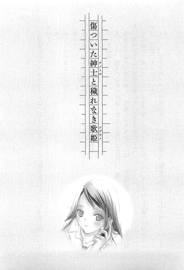
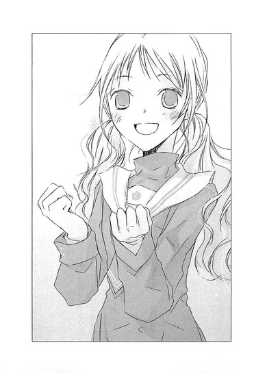

| [野村美月] 文学少女シリーズ13 | |
| 野村美月 | |
| (2015) | |
|
〝文学少女〟と恋する挿話集 ３
野村美月
|
底本データ
一頁17行 一行39文字 段組１段
太字は底本ではゴシック体太字。
「 ◇ ◇ ◇」は底本では１２字下げて「◇ ◇ ◇」。
恋に破れた「炎の闘牛」、柔道部の牛園くん。それでも遠子を思いきれず、思い出が欲しいと心葉に詰め寄り......『〝文学少女〟と炎を上げる牛魔王』、クラスにも、気安い笑顔を向けてくる担任の武田千愛先生にもなじめない中学生の仔鹿だが──『迷える仔鹿と嘘つき人形』ほか、遠子の想いを目にした紗代や、夕歌と毬谷先生の出会いなど、甘くほろ苦いエピソードが満載！物語を食べちゃうくらい愛する〝文学少女〟と、彼女を取り巻く人々の、恋する挿話集第３弾!!
目次
〝文学少女〟と炎を上げる牛魔王──
〝文学少女〟の今日のおやつ ～『好色五人女』～──
〝文学少女〟と恋しはじめの女給──
〝文学少女〟の今日のおやつ ～『谷間』～──
傷ついた紳士と穢れなき歌姫──
卵の歌姫と彷徨える天使──
遠子おばタンの秘密──
迷える仔鹿と嘘つき人形──
頑張る仔鹿と臆病な旅行者──
道化のつぶやき──
〝文学少女〟と恋する挿話集３
野村美月
最初は、とても怖かった。
『その作り笑い、いつまで続けるんだ』
夜明けの海ではしゃぐあたしの目をまっすぐに見つめて、お見通しだぞって感じの笑顔で指摘されて。
本当のあたしなんて誰にも知られたくなかった。一生、仮面を被り続け、隠し通したかった。なのに彼は、あたしの仮面の裏の恥ずかしい素顔を暴き、あたしの内側にどんどん踏み込んできた。
強引で、いい加減で、ときどき残酷。誰より明るく自信にあふれたまぶしい笑顔で、どちらのあたしも好きだと言う。
あたしが心をすっかり閉ざして、闇の中をさまよっていたとき、毎日家へ来て、普段と変わらない口調で、たくさん話をしてくれた。
今は、彼の子供っぽくて情けない部分も、脆い部分も、過去の痛みも、苦しみも、叫びも、知っている。
それでも、「好きだよ」と言われて、あたたかな気持ちが込み上げて、ウソじゃないホントウの気持ちで「あたしもだよ」と答えるとき、信じられる。
|
ああ、これが恋なんだって──。 |
〝文学少女〟と炎を上げる牛魔王
高校一年生の夏休みは、脳味噌が発酵しそうなほど、暑かった。
「うぅ～、べたべたするぅぅぅ」
パイプ椅子に体育座りした遠子先輩が、唸った。
「どうして文芸部には、クーラーも扇風機もないのかしら。窓を全開にしても全然風が入ってこないし、制服が汗でしめっぽくなっちゃうわ」
校舎に人がいないのをいいことに、生物室の冷蔵庫で勝手に凍らせたミネラルウォーターのペットボトルを、両手で頬に押し当てて、ぐんにゃりしている。
「このカミュの『異邦人』的狂気の夏を乗り切るには、やっぱり冷たいおやつね。
心葉くん、わたし、パイナップルのシロップをたっぷりかけた、かき氷風味のお話が食べたいっ！
のどごしがつるんとした、わらび餅でもいいなぁ。ミルクアイスを添えたマンゴーパフェも美味しそう！こめかみがキ──ンと痛くなって、それでいて、舌にひんやりとした甘ぁい味が広がってゆくような、そんな素敵なおやつをお願いね」
夏バテしても食欲だけは旺盛のようで、パイプ椅子をかたかた鳴らして催促する。猫の尻尾みたいな長い三つ編みも、落ち着かなく揺れている。
ぼくは古い木の机に向かい、五十枚綴りの原稿用紙にＨＢのシャーペンで、ちまちま字を書いていた。
「そんなに暑いなら、家で高校野球でも見ていたらどうですか。夏休みに、後輩を部室に呼びつけて、おやつを書かせるより、よほど涼しく過ごせると思いますけど」
つい嫌味な口調になる。
何故ぼくが、夏休みにまで、紙をぱりぱり食べる非常識な先輩の、おやつの面倒を見なければならないのか。クーラーのきいた部屋でゆっくり音楽を聴いていたところを、呼び出された身にもなってほしい。
「わたし、野球のルールって、よく知らないわ」
「そんなの見てればどうにかなります。ぼくだって、ルールなんか全然わからないけど、オリンピックにはカーリングを見ました」
「でも、球技にはトラウマがあって......。小学生のとき、ゲートボール大会に参加して、口でボールを受けちゃったの」
何故小学生がゲートボールの大会に参加してるんだ。しかもどうやったら、口でボールを受けるなんて状況になる！ゲートボールって、ゴルフみたいに球を地面に置いて転がすだけじゃないのか？
突っ込みどころが多すぎて、渋い顔で黙っていると、遠子先輩がふんわり笑った。
「それに、心葉くんが書いたお話が、どうしても食べたかったんですもの」
椅子の背に頬杖をついて、良いところのお嬢さんのように、慎ましくぼくを見上げている。
これは卑怯だ。
固まるぼくに、能天気に言う。
「あー、よかった。心葉くんも暇で」
「暇じゃありませんっ！」
反射的にわめいてしまった。遠子先輩が、目をぱちくりさせる。
「え？ 取り込み中だった？」
「う......そういうわけじゃ」
「このあと、予定でもあった？」
「......そういうわけでも」
「じゃあ、なぁに？」
「......」
弱った。言い返せない。
実際、暇だったのだ。
宿題は七月中に全部終わってしまった。一緒に遊びに行く友達もいない。バイトもしていないし、打ち込める趣味も特にない。
お母さんが、お兄ちゃんはどうしてずっと家にいるのかしら？夏休みなのに遊びに誘ってくれるお友達もいないのかしら？と心配していることに気づいていた。
遠子先輩からの電話が、いい口実になったのは確かだ。
お母さんはとても嬉しそうに、「いってらっしゃい、天野さんによろしくね」と玄関口までぼくを見送った。電話で遠子先輩と話して、すっかり気に入ってしまったらしく、「礼儀正しくて、素敵なお嬢さんね」と繰り返し褒めていた。
その人は本を食べる妖怪です、あなたの息子は、こき使われているんですと打ち明けられないまま、ぼくは家をあとにしたのだ。
そんなことが、夏休みに入ってから、二度、三度、四度、五度......と続いている。
「全然、暇じゃないですから！ 横暴な先輩に、無理矢理引っ張り出されて、仕方なくおやつを書かされているだけですから」
ぼくはムキになって主張した。暇なので喜んで登校していると思われたら、たまらない。
「できました」
まだ制限時間が十分ほど残っていたけれど、シャーペンでオチを書き殴って、原稿用紙を無造作に切り離した。
「帰りたいので、とっとと読んでください」
片手で差し出した計三枚の原稿を、遠子先輩が汗ばんだ顔を輝かせて受け取る。
「ありがとう、心葉くん。いただきま～す！ うふっ、〝氷山〟〝懐中電灯〟〝クリスマスツリー〟で、どんなお話を書いてくれたのかしら」
五分後──。
狭い文芸部に、悲鳴が轟いていた。
「いやあああああっ！ 熱いわ！ 辛いわ！氷山から、クリスマスツリーが飛び出してきたわ！めらめら燃えてるわ！懐中電灯が、たくさんぶらさがっていて、それがちかちかまたたくたび、死者の顔が、クリスマスツリーに浮かび上がってくるの。冷たい雪見だいふくを割ったら、中から煮立った辛子ジャムがこぼれてきたみたい～～～～。舌が燃えちゃう！」
しくしく泣きながら辛子入りの原稿を食べ続ける遠子先輩に、ぼくは冷たく言った。
「それじゃ、失礼します」
「あ、心葉くん」
振り返ると、涙を指でぬぐいながら、にっこり笑った。
「明日は甘いおやつを書いてね」
マズい。
このままだと、明日も登校するはめになってしまう。
部室のドアを閉めるなり、戦慄する。
夏休みの廊下は静まり返っていて、校舎の外からかすかに蝉の鳴く声が聞こえる。
せかせかと足を進めながら、こうなった原因を考えてみる。
夏休みに入る少し前、急に具合が悪くなって、倒れそうになりながら部室に辿り着いたとき、遠子先輩が気遣ってくれたから？
『......よかったら、食べる？』
ページが千切れた食べかけの本を差し出して、そのあと優しい声で、国木田独歩の『武蔵野』の話をしてくれて、ぼくの呼吸を楽にしてくれた。
あそこで、恩を感じたのが間違いだった。
お礼のつもりで、まともな三題噺を書いたら、えらく幸せそうな顔で『美味し～、心葉くん。すっごく、美味しいわ！』と大袈裟に連呼して、それがちょっと気持ちよかったりして......。
ついまた、まともな話を書いてしまったのが、さらにマズかった。
『すごぉーい！ ふわふわのシフォンケーキみたいに、優しい味！クランベリーのソースがかかっていて、甘酸っぱいの！』
とろけそうな顔で原稿用紙を口へ運ぶ遠子先輩を、まともに見ることができなかった。
何故、あんな話を書いてしまったのだろう。
しかも続けて。
おかげで、すっかりアテにされてしまっている。どれだけ奇天烈な話を書いて、マズーいと悲鳴をあげさせても、翌日には期待に満ち満ちた目で、『今日は、あまぁいおやつを書いてね』と、おねだりしてくるのだ。
ぼくはこのまま、秋も冬も、あの人のおやつ係を続けるのだろうか。
その光景がたやすく想像できてしまい、目眩を覚えながら廊下の角を曲がろうとしたときだ。
分厚い壁のようなものにぶつかり、跳ね飛ばされた。
「わっ」
体を支えきれず、床に尻餅をついてしまう。
頭の上で、うっうっ......！ という動物の唸り声のような声がし、生ぬるい水がぽたぽた降ってくる。
驚いて顔を上げるぼくの目に飛び込んできたのは、雄牛のような巨体を柔道着に包んだ、男子生徒だった。
「え？ う、牛園さん！」
三ヶ月ほど前、まだ文芸部に入部させられて間もない頃、ぼくは柔道部の二年生と、遠子先輩をくっつけようと、ひそかに画策した。
彼がよく遠子先輩を見て真っ赤になっていたのにも、遠子先輩に手を引かれていやいや文芸部へ向かうぼくを、歯ぎしりしながら睨んでいたのにも、気づいていた。
なので、ぼくの代わりに遠子先輩のおやつ係兼彼氏になってくれれば、全員めでたしで最高じゃないかと思ったのだ。
ところが、ことは簡単に運ばなかった。
「うおおおおおおおおおおおおお！ 井上えええええええええっ！」
三ヶ月前、遠子先輩に『牛魔王！』と呼ばれ、目の幅サイズの涙を流して走り去った柔道部主将は、あのときと同じように男泣きに泣きながら、ぼくに挑みかかってきた。
「うおおおおお～～～～！ あうぅぅ！ うわああああああ！」
丸太のような腕をぼくの背中に回し、逃げられないようにがっちり固定して、ぐいぐい絞めつけながら、雄叫びをあげる。
ぼくは、てっきり牛園さんが、遠子先輩に振られた腹いせにやってきたのだと思って、ぞっとした。
「う、牛園さん！ 落ち着いてください！ 遠子先輩が鈍感で、思い込みが激しくて、あなたに暴言を吐いたのは、ぼくのせいじゃありません！」
「うおおぉぉぉぉぉ」
牛園さんが、集中豪雨のような涙を降らせながら、さらに腕に力を込める。思わず死を覚悟したぼくの耳に、悲痛な声が響いた。
「わ、忘れられないんだぁぁぁっ。せめて、天野との思い出が欲しいんだぁぁぁぁ！」
◇ ◇ ◇
三十分後──。
ぼくは、柔道部の道場で、牛園さんと向かい合っていた。
柔道部は強豪なので、夏休みも練習をしていたはずだけど、今日はもう終了したらしく、広々とした道場には、ぼくと牛園さんの二人きりしかいない。窓を閉め切っているので、暑い上に汗くさい。
牛園さんは、名前のとおり雄牛のような顔から、汗と涙と鼻水を大量にこぼし、延々と訴えた。
「お、俺は、一年生の頃から天野に惚れてたんだ！図書室で運命的な出会いをしてからずっと、天野を見つめていて──いつか俺が日本一の柔道家になったとき、天野も俺の雄姿に気づいて、微笑みかけてくれると信じていたのに！それが、天野に、『あっち行って！あんたなんて大っっっっ嫌い！』という顔で睨まれて、『牛魔王』と罵られて──」
「す、すみません」
遠子先輩に告白するよう煽ったのはぼくなので、胸がちくちく痛む。膝をそろえ、深々と頭を下げてしまう。
「ぐぉぉぉぉぉぉぉ！ それだけではなく、『わたしの心葉くんを、とらないで！』と叫ばれて、目の前で、いちゃいちゃと──」
「それは誤解です！ わっ！」
シャツの襟元をつかみ上げられ、腰が浮いた。
涙と鼻水で、びしょびしょでぐちゃぐちゃでえらいことになっている顔が、口がくっつきそうな距離まで迫ってくる。
「井上よ、やはり貴様、天野とできてたんだなっ」
「ちちちち違います！ 絶対違います！ あんな食い意地張った三つ編み妖怪と──」
「妖怪？」
「いえ、それは言葉のアヤで──あんな妖怪みたいな人という意味で──」
「アヤトリがどうしたぁ！ 天野を悪く言うなぁ！天野は女神だ！なのに、その女神を、貴様は汚したのかーっ！」
「いえ、汚してません。一ミリも、汚してませんから」
「くぅぅぅ、天野に想いあっている相手がいると知っていたら、俺は──俺は──この身が切り裂かれようと、涙をのんで見守ったのに──」
「あの......だから、ぼくは......遠子先輩とつきあっては......」
「井上ぇぇぇ！！！！」
「は、はいっ！ すみません！」
シャツの襟から、ごつごつした太い指が離れる。
次の瞬間、牛園さんは頭を、がばっと下げた。
「頼む！ 井上！ 一度でいいんだ！ 天野への想いを遂げさせてくれ！」
ぼくは、土下座する牛園さんを、尻餅をついたまま茫然と見ていた。
「秋には大切な大会を控えているのに、天野のことで頭がいっぱいで力が入らず、すぐに足腰が砕けてしまうっ。天野のことは忘れて、最強の柔道家を目指すと決めたのに、最近は後輩たちにも心配をかけてばかりだ。自分で自分が不甲斐ないっっっ！
このままでは、秋の大会も一回戦負けだ。俺を主将と慕ってくれる部員たちのためにも、そんなわけにはいかん！だからっ、どうか頼むっっ！天野への未練を振り切るために、天野との思い出が欲しいんだっ！」
額をすりつけて懇願するのに圧倒されて、ぼくはひっくり返った声で答えたのだった。
「わ、わかりました。きょ、協力します。思い出でもなんでも、どうぞ好きなだけ作ってください」
◇ ◇ ◇
まったく、遠子先輩のどこがいいんだ。お節介だし能天気だし、すぐ暴走するし、紙を食う妖怪なんだぞ。
翌日。雨が降ったせいか、校舎の中は昨日より少し涼しかった。
部室へ行くと、遠子先輩は窓際のパイプ椅子に体育座りして、本を読んでいた。
細い指でページをめくり、端から少しずつ千切って口へ運び、幸せそうにぱりぱり食べている。
「三島由紀夫の『潮騒』は、海からとれたばかりのほたて貝の味ね！無垢な少女の肌のように、なめらかで、ミルク色で、口に入れると無限の海の香りがして、噛みしめると、爽やかな甘さが広がるの」
うっとりと溜息をつき、いつものように語り出す。
「三島由紀夫は一九二五年一月十四日、東京生まれの作家よ。過激な思想家としても知られていて、一九七〇年、新宿市ヶ谷の駐屯地内での籠城と割腹自殺は、世間に大きな衝撃を与えたわ。
作風も文体も、緻密で華麗で唯美的で、センセーショナルで──読み手を背徳の世界へ引きずり込んでしまうの。
同性愛を告白して衝撃を与えた『仮面の告白』、『浜松中納言物語』を題材にして夢と転生を描き出した最後の大作『豊饒の海』、不倫を扱い、〝よろめき〟という流行語を生んだ『美徳のよろめき』──どれも一流のレストランのシェフが厳選した食材で作ったお料理を、上質のワインといただくように素晴らしい味わいだけど、この『潮騒』はね、もっと肩の力を抜いて、楽しめるの。三島ぽくないというか──それでいて、やっぱり三島なんだなぁっていうか」
遠子先輩が口元をほころばせ、やわらかな表情でページをめくり、内容を説明する。
「この話は、『ダフニスとクロエー』というギリシアの古い物語に影響を受けて、書かれたと言われているわ。恋に目覚めたばかりの青年と娘さんの、初々しいラブストーリーなのよ。『ダフニスとクロエー』が、エーゲ海の島を舞台にして、その爽やかで牧歌的な風景を物語の中に描き出したように、『潮騒』も三重県の伊勢湾に浮かぶ小さな島と、そこで生きる若い恋人たちを、みずみずしく描いているわ。
漁師をしている新治は、ある日浜辺で、一人の涼しげな少女と出会うの。彼女は船主の末娘で、初江といったわ。初江は養女に出されていたのだけど、父親が婿をとらせて跡取りにするつもりで、呼び戻したの。
新治と初江は、引かれあうわ。けれど、ひそかに新治に恋をしていた千代子が、嫉妬から二人の仲を広めてしまい、怒った初江の父親に、二人は引き離されてしまうの」
そういう障害のある恋に憧れるのか、遠子先輩がうっとりと溜息をつく。目が夢見るようにうるんでいる。
「初江に迫る恋敵が現れたり、会うこともできなくなってしまったり、やきもきするシーンが続くのだけど、最後はもちろんハッピーエンドなのっ。真っ白なほたてが、舌の上で甘くとろけるように、清々しい幸せな気持ちになれちゃうのよ」
「そんなに、美味しいんですか」
「ええ、大好きっ」
目の下をほんのり染めて、断言する。
「遠子先輩も、そんな恋をしたいと思いますか？」
「えっ......！」
遠子先輩は何故急にそんな質問をするのかと、うろたえている顔をしたあと、
「そ、そうね。女の子ですもの、やっぱり憧れちゃうわ」
こぼれるような笑顔で言い、いたずらっぽくぼくを見上げた。
「だからね、心葉くん。こんな風に、初々しくて心が洗われちゃうようなラブストーリーを、心葉くんも書いてちょうだい。今日のお題は、〝浜辺〟〝灯台〟〝くじら〟よ。
うーんとロマンチックな、甘ぁいお話にしてね。制限時間はきっかり五十分。はい、すたーと！」
銀色のストップウォッチが、かちりと鳴った。
なんで最後にくじらなんだ？ まぁ、いいや、浜辺と灯台が恋をして、くじらが横恋慕する話でも、適当に書いておこう。
どんな味がするのかは、知らないけれど......。
◇ ◇ ◇
「──というわけで、この本を読んでみましょう」
塩水にひたしたマシュマロを、鯖味噌の缶詰とあえたみたいな味～～～と、べそをかく遠子先輩を置き去りにして、ぼくは柔道部の道場へやってきた。
図書室で借りた三島由紀夫の『潮騒』を差し出すと、牛園さんは目をぎょろりと動かし、首を傾げた。
「あ......朝騒ぎ？」
「よく見てください。朝じゃなくて潮です。『潮騒』です」
「シオサイ？ サイを塩漬けにして食うのか？サイって、食えるのか？うまそうだな！」
「よだれをふいてください。サイの薫製の話じゃありません。波が騒がしく打ち寄せる潮騒です」
「おおっ、そうか、海のアレか」
ポンと手を打つのを見て、不安になってきた。
「で？ その潮騒がなんだって？」
「遠子先輩は、三島由紀夫の『潮騒』が大好きなんです。『わたしもこんな恋をしてみたいわ』って言ってました」
「なにぃ！」
とたんに目がぎらつき、鼻息が荒くなる。
「いきなり伊勢湾へ行って漁師になるとか無理ですけど、会話の糸口にもなりますし、参考にしてみてください」
「おお！ そうか！ この本を読めば、天野の理想の男になれるんだな」
「いや......そういうわけでは」
「井上！ 心の友よ！ 恩に着るぞ！」
牛園さんが、グローブのような大きな手で文庫をつかみ、表紙をめくる。
が──。
「ぐー」
最初のページをめくるなり、肩をがくっと落として、そのままつっぷしてしまった。
「わ！ 牛園さん」
揺さぶると、半目でぼくを見たあと、ハッとして起きあがる。
「いかんっっっ、俺は一ページ以上本を読めない、呪われた体質だったのだっっっ！」
「......そういえば、そうでしたね」
「しかし、天野への愛があれば、この邪悪な眠気にも、打ち勝ってみせよう」
敢然と背筋を伸ばし、首をもたげ、再び『潮騒』にチャレンジする。
「ふむ、島に神社があるんだな。燈台からの眺めもいいのだな。観光案内のパンフレットみたいだな」
眠らないようにするためか、ぶつぶつつぶやいていたのが、視線が次のページへ移動するなり、また、がくっと倒れた。
「牛園さん！」
「い、いかん。井上よ、俺の目が閉じそうになったら、これで思いきり殴ってくれ」
「ええっ」
牛園さんが差し出したのは、金属バットだった。何故、柔道部の道場にバットがあるんだっ！
「遠慮なく、ズコン！ とやってくれ」
「それ、運が悪ければ死にます！」
「いや、俺の頭皮はブルドーザーより硬いと評判だから、問題ない」
「どこで評判になったんですか！ 根拠あるんですか！ブルドーザーと対決したことあるんですか！」
「おう、あれは俺が小学五年生の夏休み、柔道の合宿へ出かけた山中で、木の根に足を引っかけ、頭から地面に激突したのだ。大地が抉れ、木が二、三本倒れ、鳥が飛びたったが、俺の頭は擦り傷ができただけだった。夏休み明けには、噂は学校中に広まり、鋼の小学生とか、ブルドーザー牛ちゃんとか、呼ばれたものだ」
「それ転んだとき、たまたま手でつかんだ草とか、引っこ抜いただけじゃないですか！嘘くさいです」
「そうか、だが猪と闘って勝ったことはあるので、安心しろ」
「猪は生き物です。ブルドーザーは車です！ 機械です！全然違います！」
「男は四の五の言うな！ 行くぞ」
牛園さんが、三度目のチャレンジを開始する。
ぼくは、切腹の介錯をする人のように、牛園さんの後ろでバットを構えて立った。
どうしよう。いくら、一ページ以上読めない体質だからって、先輩の頭を金属バットでぶん殴ったりしていいんだろうか。
もし、頭がぱっくり割れちゃったら、ぼくは犯罪者になるんじゃ。どんなに頑丈な頭だって、思いきり殴ったら割れるよ、普通。
はらはらと見つめるぼくの前で、牛園さんは眉毛をぐっと吊り上げ、気合いの入りまくった顔で、読書に励んでいる。
ごつい指が、ページにかかる。ぼくも息をのんで、文章を追う。あっ、あっ、新治が平目を手にぶらさげて、浜辺にやってきた。もうすぐページが、めくられ──。
「ぐー」
牛園さんの頭が前に倒れる。
うわあああああああああっ！
ぼくは目を閉じて、バットを振り上げ、そのまま勢いよく振り捨てた。
「す、すみませんっっっ！ やっぱり他人を傷つけるなんて無理です！」
ゴンッ！
え？ 今、ゴンッって音がした？
目を開けると牛園さんが畳につっぷしていた。すぐ横にバットが転がっている。
もしかして、ぼくが放り出したバットが、牛園さんの頭を直撃したのか！
牛園さんは、ぴくりとも動かない。寝息すら聞こえない。
まさか──！
殺ってしまったのかと、血の気がさっと引いたとき、牛園さんが急に目を開け、ぐわっとのけぞった。
「うおおおおおおおおおお！」
墓場から蘇ったゾンビのように叫ぶ。
「よぉしっ！ 目が覚めた！ 次のページへ行くぞ！平目をさばいて食うぞー！」
「平目は食べません！ 燈台長へのお土産にするんです。てゆーか、もう危険なことはやめてくださいっ。最後のページまで保ちません。殴り続けたら、バカになります！その前に、ぼくの神経が、ずたずたです」
「ぬぅぅ、しかしこの本を読まねば、天野との話題が」
ぼくは肩を落とし、溜息をついた。
「ぼくが声に出して読みますから、牛園さんはそこに座って聞いていてください」
かくして、こっぱずかしい朗読教室がはじまった。
夏休みに、ぼくは一体なにをやっているんだ。
牛園さんは両手で膝を抱え、目をむき出しにし、真剣な表情で耳を傾けている。
『泣いていた下駄穿きの少女は、泣声をやめて立ちすくんだ。それは初江であった。
若者はこの思いがけない幸運な出会にわが目を疑った』
「むぅぅ」
読んでいる最中、牛園さんが唸ったり、ぎょろりと目玉を動かしたりするので、ぼくは、そのたびびくっとした。
『初江さんやろ』
『泣いとたのは汝とちがうか？』
『私です』
『何で泣いとたんや』
「うむむ......」
何故だ。何故、唸っている。あ、うなずいた。目を閉じて──眠っている？いや、こめかみをぴくぴくさせて、考えている？何を？
牛園さんの謎な反応が、気になってたまらない。
『私、もう行きます』
「行くなぁぁぁぁあああああっ！」
いきなり、牛園さんが立ち上がって絶叫する。
「ど、どうしたんですか」
「初江が行ってしまうと思ったら、つい」
「驚かせないでください」
「スマン」
牛園さんが赤い顔で謝り、また畳に座り膝を抱える。
『新治は答えずに、おどろいたような顔をした。初江の赤いセエタアの胸に、黒い一線が横ざまに引かれていたからである』
そういえば......ここからちょっとエッチな描写になるんだっけ。
廃墟の屋上で泣いていた初江は、新治と話しながら、コンクリートの縁から身を乗り出し、景色を眺める。立ち去ろうとしたとき、コンクリートの汚れが服についたことに気づいて、慌てて手で払う。
赤いセーターと黒い線のコントラストがあざやかに浮かんでくるような名文だけど、声に出して読むのは、かなり恥ずかしい。
これって、なんて羞恥プレイ？
牛園さんの息も、心なしか乱れている。
『乳房は、打ちかかる彼女の平手に、却ってじゃれている小動物のように見えた。若者はその運動の弾力のある柔らかさに感動した』
「うがああああああああああ！」
牛園さんが絶叫とともに立ち上がる。
「こ、今度は、なんですかっ」
「いや、初江の可憐な仕草に、天野の姿が重なって、胸の奥からマグマのように感動が込み上げてきて──くぅぅ」
「はぁ？」
「井上よ。初江は天野に似てるなぁ」
牛園さんが『潮騒』の世界にどっぷりはまって、自分を新治に、遠子先輩を初江に見立てているのは、よーくわかった。
けど、その意見には同意できない。
「遠子先輩と初江じゃ、胸のサイズが違いますよ。遠子先輩の胸は、どれだけ叩いても、小動物のようにじゃれついてきたりしません、絶っ対無理です」
「うぬ、まぁ......そうかもしれんが」
恋する者の目でも、それは否定できないらしく、しかめっつらになる。が、すぐにハッとしたように目を見開く。
「そこまできっぱり言い切るとは、まさか井上！貴様、実物を見たのか？」
なにを想像したのか、鼻血を噴いてしまう。
「う、牛園さん！ 上を向いてください！」
「うぬぅぅぅぅ！ 見たのか？ 天野のを見たのか？もうそこまでいってしまったのか？不純だ！」
「血を、まき散らさないでください。見てませんし、そういう仲でもありませんっ。あそこまでぺったんこなら、服の上からでもわかるでしょう」
ぼたぼたと血を流す牛園さんの鼻に、ティッシュを押し当て、否定する。
「うぅぅ」
牛園さんが、疑わしそうに唸る。
「今度、叫んだら、読むのやめますからね」
念を押して、朗読を続けた。
牛園さんも言いつけを守って、大人しく聞いている。
新治と初江の仲は、しだいに深まってゆく。お互いに意識しあうようになり、初江は新治の幼なじみの千代子に、ヤキモチをやいたりする。
千代子は容貌にコンプレックスを持つ娘だ。東京の大学に進学し、春休みに実家へ戻ってきた。
また新治にも、安夫という恋のライバルが現れる。
そんな中、嵐の日に初江と廃墟で会う約束をした新治は、初江を待つ間、焚き火のかたわらで眠ってしまう。目を覚ますと、そこには裸で服を乾かす初江がいた──。
「うぐぐっ」
牛園さんが目をむく。
ああ、また際どいシーンが。
ぼくは警戒しながら、読み進めた。
新治が起きていることに気づき、慌てて体を隠す初江。
立ち上がる新治。
二人は、焚火を挟んで向かいあう。
牛園さんが両手で口をがばっと押さえ、前のめりになる。
『なんだって逃げるんじゃ』
『だって、恥かしいもの』
『どうしたら恥かしくなくなるのやろ』
『汝も裸になれ、そしたら恥かしくなくなるだろ』
そうして、服を全て脱ぎ捨てた新治に、自分もすっかり裸になった初江が、焚き火の向こうから告げるのだ。
『その火を飛び越して来い。その火を飛び越してきたら』
「うぉぉぉぉぉぉぉっっ！ 天野ぉぉぉぉぉぉ～～～～！」
ついに耐えきれなくなった牛園さんが、鼻血を噴き上げ立ち上がる。
「叫ばないでください！ 鼻、押さえてくださいっ！」
そのあとはもう、雄叫びと鼻血と怒りと涙の繰り返しだった。
廃墟から出てくる二人を目撃した千代子が、そのことを新治の恋敵の安夫に話すと、
「いかん！ それはいかん！」
と震え、安夫が初江を襲うシーンで、
「ぐおぉぉぉぉ！ 安夫めぇぇ！ 成敗してやる！」
と暴れ、初江が無事だったことに、どさりと坐り込んで安堵し、新治と初江の仲が噂になり、『お父さんが怒っているので会えません』と書かれた初江の手紙を新治が読むシーンで、おぅおぅと唸りながら、涙をこぼす。
かと思うと、女たちが乳房を比べ合うシーンで、また鼻血を噴きまくる。
途中からは注意するのも疲れて、ぼくは牛園さんのほうを見ないようにして、読み続けた。
もし、誰かが道場へやって来て、この光景を見たらなんと噂されるか、考えたくもない。柔道部の主将が血まみれでわめきながら、ごろごろ転がっていて、その前で、ひ弱そうな一年生が、乳房がどうたらと朗読していたなんて。
波乱の物語も、ようやく終わりに近づき、甲板見習いとして船に乗った新治は、嵐に遭うが、身を挺して船を守り、初江の父に認められる。
また、新治と初江にすまないことをしたと感じていた千代子も、必死に母親に働きかけ、新治と初江の仲を取り持ってくれるよう頼むのだ。
「うわぁぁ！ 千代子ぉぉぉ！ よくやった！偉いぞ、千代子！俺は、おまえを認めるぞぉ！」
ついに二人の想いが通い合うシーンでは、牛園さんは感極まって、滝のように涙をこぼした。
「なんという！ なんという素晴らしい物語だ！これぞ日本の宝だ。そうかそうか、新治と初江は押し寄せる荒波を乗り越え、とうとう結ばれたのだな。新治の男気が初江の父にも伝わったのだな！──『男は気力や。気力があればええのや』──初江の父の言うとおりだ！気力があれば、潮の流れも変わるのだ！そうだな、井上よ！」
肩をがくがく揺さぶられ、ぼくは「そうですね」としか答えようがなかった。
ああ......畳の血、落ちるかな......。
◇ ◇ ◇
翌日、喉がからからで、目は充血し、頭もずきずきの最悪のコンディションで、登校した。
よくもまぁ、六時間もぶっ続けで、読み続けたものだと思う。
牛園さんは、読み終わったあともずっと「千代子は、本当にいいやつだ！」「新治は男だ！」「初江は、可憐だ！」と繰り返し言い続けた。
「俺も、天野に男らしく告白する！」とか「男の本懐を遂げてみせるぞ！」と燃えていたけれど......大丈夫だろうか......。
ちょっと不安が......。
あんなに鼻の穴から熱風を吐いて、目を爛々と輝かせて迫ったら、普通の女の子なら怖がって逃げ出すだろう。
いくら遠子先輩が変わり者でも、引くんじゃないか。
その遠子先輩は、部室にはいなかった。
あれ？ と中を見渡していたら、両手に大量の本を積み上げて現れた。
「んしょ、んしょ......あ、心葉くん、いらっしゃい。今日も来てくれたのね」
「なんですか、そのえらく年期が入った黄ばんだ本は」
「うふ、図書重で、廃棄予定の谷崎潤一郎全集をもらってきたの。古すぎて食べられないのが残念だけど......」
「そうですか」
これ以上、本を増やしてどうするんだ。
遠子先輩が本の横から、ひょこっと顔を出す。
「あら、声がちょっと掠れてるみたい。風邪？」
「ただのしゃべりすぎです」
「心葉くん、長話をするようなお友達がいたのね」
「余計なお世話です」
「あ、ねぇねぇ、明日の夜、学校の近くの神社でお祭りがあるのよ」
「そうですか」
「それでねっ、花火大会もあるの。西校舎の四階の廊下は、穴場なのよ。去年、学校に来て発見したの」
「ふぅん。暇だったんですね」
遠子先輩が、ぷっと頬をふくらませる。
「もぉっ、心葉くんたら、どうしてそういう醒めた言い方しかできないのっ。せっかく、お友達とどうかしらって、教えてあげたのに」
「本、置いたらどうですか」
「あっ、忘れてたわ」
遠子先輩が、んしょと、机の上に本の塔をおろす。
「これで手が楽になったわ。だいたい心葉くんってば──ああっ！」
文句を再開しようとした遠子先輩が、視線を下に向けて叫んだ。
「いやぁ、真っ黒っ」
本を抱えているときについたのだろう。セーラー服の胸もとに、幾本もの黒い線が走っている。
ぼくは、息をのんだ。
そこから先は、まるで『潮騒』の一場面を見るようだった。
遠子先輩が、白い手で胸をぺちぺち叩く。
上からなでおろすように叩き込み、汚れを落とそうとするけれど、やはり遠子先輩のそこと、初江のそこは決定的に違っていた。手は胸の上で小さくはずみ、そのままするりとすべってゆくだけで、小動物がじゃれつくようには揺れなかった。
汚れは埃だけでなく、インクかなにかも混じっているようで、なかなかとれない。遠子先輩が、おもむろにペットボトルをつかんだ。
半分ほど氷が溶けて水になったそれを、淡いすみれ色のハンカチに含ませ、直接拭きはじめる。
「ぅぅ、石鹸を使わなきゃダメかしら」
白いセーラー服が、水分を吸って、みるみる湿ってゆく。肌にぴったり張りつき、しだいに透きとおってゆく薄い布の下から、ブラの線が浮き上がる。
わ......ちょ......！
さっきまで同情の眼差しで眺めていたのに、鼓動が急に速くなった。
透けてますよ、と指摘してもよいものか。目をそらすべきなのに、何故か見入ってしまって、顔が熱くなって困ってしまう。
あまりに無防備すぎる。よほどぼくは、男と思われてないのか。いや、別にこんな真っ平らな胸が、透けて見えたからって、どうってことないし、あんな胸に合うブラがあったのかと感心するだけで、別にドキドキしたりするわけじゃないけれど。
そうだ、あのくらいの胸、自分ので見慣れている。
けど、やっぱりちょっと恥ずかしいような、後ろめたいような気持ちで、目をそらしたり、またちら見したりしていると──。
遠子先輩が、顔を上げてぼくを見た。
「「！」」
ぼくの視線が、どこへ向けられているのか気づいたのだろう。ぱっと頬を染め、胸もとを腕で隠す。ぼくも同時に赤くなる。
そのまま、沈黙が落ちた。
遠子先輩は、胸を両手で抱きかかえたまま、恥ずかしそうな、批難するような眼差しで、ぼくを見ている。
頬が、どんどん火照ってくる。
「......心葉くん、今、どこを見てた」
「......えーと」
正直に答えたら、殴られるだろうか。
けど、遠子先輩は正直に答えなさいというように、上目遣いに睨んでいる。
「関東平野のような洗濯板です」
とたんに、ペットボトルが飛んできた。
「なによそれーっ！ わたしの胸が、洗濯板で関東平野だって言うのーっ！」
水が、ぱしゃりと降りかかる。
「うぅっ、ひどい！ ひどいわ！ わたしだって好きで洗濯板なんじゃ」
涙目の遠子先輩がさらにげんこつを振り上げたとき、部室のドアが、勢いよく開いた。
「天野ぉぉぉぉぉぉぉぉぉぉっ！」
怒声がとどろき、柔道着を着た牛園さんが、鼻から息を吐き、目を燃え上がらせて入ってくる。
ぼくも遠子先輩も、驚いて動きを止めた。
牛園さんが険しい顔で、遠子先輩に近づく。
遠子先輩が、ハッとしたように顔をこわばらせる。
「こ、これを──」
牛園さんが、白い封筒をずいっと差し出す。
ぼくは目を見張った。
ラブレター！ あの国語音痴の牛園さんが！
けど、この雰囲気だと、果たし状のような──。牛園さん、決闘でもはじめそうな怖い顔で、睨んでいるし。
ほっそりした手が伸び、しとやかに手紙を受け取った。
遠子先輩が、その場で開封する。
牛園さんが息をのむ。
ぼくも、身を乗り出した。
中から白い便箋が一枚出てくる。遠子先輩は真面目な顔で目を通している。
やがて顔を上げて、花のようににっこり笑った。
「いいわ」
便箋には、黒々とした太い字で、
『一緒に、夏祭りへ行こう』
とだけ書いてあった。
◇ ◇ ◇
翌日の夕方、ぼくは校門の内側から、様子をうかがっていた。
遠子先輩はまだ来ていない。学園の制服を着た牛園さんが、真っ赤な顔でそわそわしている。
十秒に一回の割合で、頬をゆるめて、にやけるのが不安だ。なにを考えているのだろう。『潮騒』に感激して、男の本懐がどうとか叫んでいたけれど、まさか焚き火のシーンとか期待してるんじゃ──。
あのシーンで、牛園さんは「うおおおおおおおおおおお！」と絶叫し、鼻血を噴きまくっていた。
けど、あれは小説だから、素朴で官能的な名シーンたりえるのだ。あんなの現実で再現されたら困る。しかも、牛と妖怪で。
牛園さんが、なにをやらかすのか予測がつかなくて、怖い。
そもそも遠子先輩が、デートの誘いをあっさり受けたのが、びっくりだった。
『いいわ』
と遠子先輩が、満面の笑顔で答えた瞬間、牛園さんはゆでだこのように真っ赤になり、卒倒しそうだった。
『じゃあ、明日、六時半に校門の前でね』
遠子先輩の言葉に、目をむいたまま、ひたすらうなずいていた。
ぼくは、ただただ茫然としていた。
この前は、牛魔王！ とか言ってたくせに、なんでそこで『いいわ』なんだ！
実は、あーいう体育会系が好みなのか？ 筋肉集団のボート部とも、盟友とか言って仲良しだし。
別にそれならそうでかまわないし、牛園さんと恋人にでもなんでもなって、ぼくのことは解放してほしいと思うのだけど、やっぱり胸の奥のほうが、もやもやして、すっきりしない。
なんでぼくが、貴重な夏休みにこんなことを──と苦々しく思いつつ、お母さんに友達とお祭りに行くと嘘をついて、待ち合わせ場所まで来てしまったのだった。
やがて、約束の時間から三分遅れて、からんからんという音が聞こえた。
「ごめんなさい、遅刻しちゃって」
「！」
牛園さんが絶句する。
遠子先輩は、淡いすみれ色の浴衣を着ていた。裾に浮かぶ白い花が、動くたびに可憐に揺れる。普段は三つ編みにしている髪も、ひとつにまとめて、アップにしている。
「下駄が歩きにくくて。本当にごめんなさい」
「い、いいいいいや」
牛園さんが首をぶんぶんと横に振る。目の中まで真っ赤だ。
それを見て遠子先輩は、うんと可愛らしくにっこりした。
「ありがとう。じゃあ、行きましょう」
「あ、ああ」
「うふ」
いい雰囲気で歩き出す二人のあとを、足音をひそめてついてゆく。
胸のもやもやは、むかむかに変わっていた。
なんだ、遠子先輩のあの顔は。キャンペーン中のアイドルみたいに、愛嬌を振りまいちゃって。なにが、「うふ」だ！浴衣とか着ちゃって、えらく気合いが入っているじゃないか。髪まで結って、あんなに嬉しそうに。
ぼくが、気をもむことなんて、なかったんだ。
遠子先輩も、牛園さんのことまんざらでもないんだ。
離れているので、二人の声までは聞こえないけれど、遠子先輩は、えらくにこにこしている。ほとんど笑顔の垂れ流しだ。
そんな遠子先輩がまぶしすぎて、まともに見ることができないというように、牛園さんは真っ赤な顔で目をそらしている。なにを話しているのだろう。別になんだっていいんだけど──遠子先輩は、にこにこしすぎだっ。
神社へ近づくにつれて人がどっと増え、道の両脇にお好み焼きや、わたあめや、イカ焼きの屋台が立ち並び、歩きにくくなった。
何度も人にぶつかり、牛園さんと遠子先輩の姿も人混みにまぎれ、見失いそうになる。
周りはみんな楽しそうに、笑ったりはしゃいだりしているのに、一人で他人のデートの尾行をしているだなんて。
情けなくって、ますますむかついてくる。
汗が額ににじみ、息が切れて、服がべたべたして気持ち悪い。それでもムキになって人の波をくぐって、進んでゆく。
二人はあんず飴の屋台の前に立っていた。
牛園さんが、飴をふたつ買って、ひとつを照れくさそうに遠子先輩のほうへ差し出す。
遠子先輩が目を丸くする。
鳩が豆鉄砲をくらったような顔で、牛園さんをまじまじと見上げ、固まっている。
牛園さんは、飴を差し出したまま真っ赤な顔で、うつむきかげんにしゃべっている。
ふいに、遠子先輩が、はにかむように笑った。
光がこぼれるような、あたたかな笑顔だった。
あんず飴を受け取り、遠子先輩が口に入れる。そうして牛園さんのほうを見て、また嬉しそうにほのぼのと笑う。
『美味しい、心葉くん』
ぼくの書いた原稿を食べて、はじめて笑ったときの顔が浮かんで──おなかの底に、重たいものがずしんっと落ちてきたようなショックを受けた。
普通の食事は、食べても味がわからないって言ったのに──。
なのに、あんな風に笑えるんだ。
無性に腹が立って、『美味しい』と褒めてくれたあの言葉も、きっとお世辞だったんだと、悔しくて。
知らないうちに、うつむいていたらしい。
通行人と肩がぶつかって、ハッとして顔を上げたときには、遠子先輩たちの姿は、どこにも見あたらなかった。
ぼくは慌てて、あんず飴の屋台へ駆け寄った。
「すみませんつ、さっき飴を買った、牛みたいにがっつりした学生と、浴衣の女の子のカップル、どっちへ行きました？」
「あっちだったかな？」
屋台のおじさんが指で示したほうへ、走り出す。
ああ、本当になにをやってるんだ、ぼくは。
もう、放っておけばいいじゃないか。お節介な三つ編み妖怪が、柔道部の主将とどうなろうと知ったこっちゃない。
なのに、何故こんなに汗だくになりながら、息を切らして、走っているんだ。
わたあめ売りのお兄さんや、イカを焼いているおじさんに、牛のような高校生と、すみれ色の浴衣の女の子を見なかったかを訊きながら、人混みをかきわけ進んでゆく。牛園さんと遠子先輩の組み合わせは人目を引いたらしく、
「あ、その二人なら、境内の裏の林のほうへ行ったよ」
と、通行人まで横から口を出して、教えてくれた。
砂利を踏みながら、そちらへ回ってみると、さやさやと揺れる木々を背景に、牛園さんと遠子先輩が、向かい合っていた。
重なりあう枝葉の間からこぼれる涼しい月明かりが、二人を照らしている。
牛園さんは顔をがちがちにこわばらせて、睨みつけるような険しい眼差しで、遠子先輩を見つめていた。
遠子先輩も、おだやかな優しい眼差しで、牛園さんを見つめ返している。
立ち入れない雰囲気にドキッとしたとき、澄んだ声が響いた。
「あなたはまだ、裸になっていないもの」
なにを言っているんだ、遠子先輩は。
息が止まり、鼓動が高まる。
「ねぇ、その火を跳び越えて、わたしのところへ来て」
これって、ひょっとして『潮騒』ごっこ？ 焚き火のシーンを再現しているのか！
遠子先輩なら、やりそうだ。けど、近くに人が大勢いるこんな場所で、あんな際どいシーンを！いや、二人とも服は着てるけど──。
焦るぼくの視界の中で、牛園さんが険しい表情で、ゆっくり足を踏み出した。力の入った一歩だった。
二人の距離が縮まる。
遠子先輩は、優しく牛園さんを見上げている。
次のシーンは確か──火を跳び越えた新治が初江を抱きしめて、新治の胸が初江の胸に触れて──それで──それでっっ。
うわあああああああああ、どうしよう。いくらなんでも、屋外でそれは──。
ぼくが盗み見していることを知らせるべきかどうか迷いながら、汗ばむ手を握りしめたとき──。
「ずっと──す、好きだった」
牛園さんが、噛みつくように言った。
割れて掠れたまま必死に押し出されたその声は、雷のようにごろごろ鳴り響いて、ぼくの耳を直撃した。
「嬉しい、ありがとう」
遠子先輩の白い手が、牛園さんのごつごつした手をぎゅっと握りしめ、澄んだ黒い目が花のように微笑む。
愛しさがあふれ出そうな、そんな顔で──。
もう、見ていられなかった。
ひどく情けない気持ちになり、ぼくは一人きりその場を離れた。
二人がうまくいって、よかったじゃないか。
にぎやかな人混みの中を、のろのろ歩いてゆく。
これで牛園さんに妙な誤解をされることもないし、遠子先輩にも振りまわされずにすむ。これからは遠子先輩は、国語音痴の彼氏に書いてもらった三題噺を、「美味しい、美味しい」と言って、食べればいい。
いいことづくめで、万々歳だ。
なのにどうして、ぼくはうつむいているのだろう。
ポ────ンというリズミカルな音がして、頭上で花火がはじけた。みんな空を見上げて、わっと歓声をあげる。
ぼくだけが立ち止まらず、花火を見ることもなく、歩き続けている。
周りで笑い声が聞こえるたび、心の中から、なにかが抜け落ちてゆく感じがして、憂鬱になった。
中学時代の終わり、ずっと学校へも行かず、部屋に引きこもっていた。
もう傷つきたくない、誰とも関わりたくない、シーツをかきむしりながら、心の中で幾度も繰り返して。
ようやく部屋からよろよろ這い出して、高校生になってからも、他人とのつきあいを極力避けていた。
部活なんて、入るつもりなかった。
ましてや、本をぱりぱり食べる変な妖怪のいる、文芸部になんて──。
遠子先輩の天然でお気楽なところが苦手だったし、かまわれるとうっとうしかった。嬉しそうな笑顔を向けられると、みぞおちがむずがゆくなる。
だから、さんざん嫌味を言って冷たく突き放して、おかしな話を書いて、向こうから去ってゆくようにしたのに。
ああ、まともな三題噺を書いたことは、本当に失敗だった。
遠子先輩が落としたリボンを木の枝に結んだことも、夏休みに呼び出しに応じたことも、全部、全部、失敗だった。
笑い声もざわめきも、どんどん遠ざかってゆく。
花火の音だけが、まだ続いている。
家に帰ったら、きっとお母さんが、お祭りは楽しかった？と尋ねるだろう。
笑って嘘をつく自信がない。
気がつくと、学校へ向かっていた。
多分、他に行くあてがなかったから。
階段をのぼり、西校舎の四階へ向かったのは、遠子先輩の言葉が耳に残っていたせいだろうか。
──西校舎の四階の廊下は、穴場なのよ。去年、学校に来て発見したの。
──ふぅん。暇だったんですね。
──もぉっ、心葉くんたら、どうしてそういう醒めた言い方しかできないのっ。
夜の廊下は、暗く静まり返っていた。
窓の向こうに、花火が見える。
スプレーを吹きかけたように、赤や青や緑や金の花がぱっと開き、闇に溶けて消えてゆく。
儚くて、寂しい......。
きっと人との繋がりも、こんな風に不確かで頼りなくて、いつか溶けて消えてしまう......。
咲いては散る天のあだ花を、ぼくは無言で見つめていた。
ぼくの存在もまた、軽く薄くなり、闇に溶けてしまいそうな心細い気持ちになったとき、隣に人の立つ気配がした。
「来ていたのね。心葉くん」
本気で心臓が止まるかと思った。
浴衣を着て髪をアップにした遠子先輩が、細い首を傾けて、やわらかく微笑んでいる。
ぼくは目をむき、あたふたした。
「な、な──な......っ、なにしてんですかっ！」
「心葉くんと一緒。花火を見に来たのよ」
微笑んだまま、のんびり答える。
「花火って！ だ、だって今日は、牛園さんとお祭りに──牛園さんは、どうしたんですか！彼氏をほったらかしていいんですか！」
「彼氏？」
「牛園さんとつきあうんでしょう。だから、デートに行ったんですよね。わざわざ浴衣を着て、おめかしして......」
すると頬をぱっと赤らめ、言い訳するようにつぶやいた。
「だって、制服の替えがなかったんですもの」
「へ？」
「昨日、本で汚しちゃったし、他は全部クリーニング中だったし。本当は、外出の時は制服じゃなきゃいけないのよ。けど、浴衣は私服とちょっと違うから......これならぎりぎりセーフかなって」
なにがセーフなんだ。
「それに、わたしは牛園くんの相談に乗っただけよ。デートじゃないわ」
「なに言ってんですか」
あれが、デート以外のなんだと言うんだ。
けど、遠子先輩は頬をふくらませ、こぶしを握りしめ、いっきに話しはじめた。
「ほら、牛園くん、ものすごく切羽詰まった顔で、手紙を持ってきたでしょう。てっきり、心葉くんのことを諦めきれなくて、わたしと腹を割って、じっくり話をしたいんだと思ったのよ。それで、絶対心葉くんを柔道部に取られてたまるもんですか！と思って、うんと余裕の笑みを浮かべて『いいわよ』って、言ってやったの」
あの爽やかな笑みは、そういう意味だったのか！そのあと、やけににこにこ笑っていたのも！けど──。
「どうして、そういう妙な解釈になるんですか！」
「だって、あの熱い眼差しは、心葉くんに恋しているとしか思えなかったんですもの」
だから、どうして、恋をする相手がぼくなんだ！あれだけ恋愛小説を読み込んでいるくせに、自分に恋をする相手がいるとは思わないのか？
「でも、安心して。違ったの。牛園くんが好きなのは、心葉くんじゃなかったのよ」
「当然です！」
遠子先輩が、うんうんとうなずく。
「わたしも、あんず飴の屋台の前で、聞いて驚いたわー。てっきり、心葉くんを譲ってくれって言われると思って、身構えていたのに」
だから何故譲るとか、そういう話に！ 息切れと目眩を起こしながら、一部納得する。あんず飴を差し出されて、びっくりしていたのは、それが原因か。そのあと、急に微笑んだのも。
「牛園くんね、その人のことが一年生の頃からずっと好きだったけど、見ているだけで精一杯だったんですって。髪が長くて、色白で、ほっそりしていて、とってもしとやかで、控えめで、女の子らしい、素敵な人なんですって」
ぼくは牛園さんに同情した。
そこまで言われて、何故気づかない。いや、しとやかで、控えめで、女の子らしいは、事実と反するけど。
「わたし、その人に告白してみたら？ って勧めたの」
胸が、小さく震えた。遠い夜の空に溶けてゆく淡い光の花を見つめながら、遠子先輩は優しい顔で話している。
遠子先輩のシャンプーだろうか......やわらかな花の香りが、闇にただよう。
「でも、その人にはもう好きな人がいるから、告白しても困らせてしまうから、自分はその人を好きになれただけで、いいんだって......牛園くんは言ったのよ」
澄んだ悲しみが、さざ波のように胸に押し寄せてくる。
「だから、代わりに、わたしに伝えてもいいかって」
どんな気持ちで、牛園さんはその言葉を口にしたのだろう。
きっと顔を赤らめて、全身に力を込めて、精一杯──......。
「いいわって、わたしは答えたの。わたしをその子だと思って、告白してって。それでも牛園くん、どう伝えたらいいのかわからなくて、なかなか言葉が出なくて、困っていたわ」
それで、ぼくが見た『潮騒』のあのシーンになったのだと、遠子先輩は優しい声で語った。
「牛園くんも、『潮騒』を読んだのですって。小説なんて、眠いだけだと思っていたけれど、すごく胸を打たれて、感動したのですって。
自分は、千代子が一番好きだって。千代子はいいやつだって......」
千代子は──幼なじみの新治に恋心を抱いていたけれど、それは叶わなかった。
『千代子は、いいやつだなぁ、井上！』
何度も何度も、牛園さんが言っていたことを思い出す。
てっきり、新治と初江に感情移入して聞いていたのだと思っていたのに。
『思い出が欲しいんだ』
『ずっと──す、好きだった』
新治へ思いを伝えることすらできなかった千代子。
けれど、自分の容貌にコンプレックスを持っていた千代子が、
『あたし、そんなに醜い？』
と問いかけたとき、新治は即答したのだ。
『なあに、美しいがな』
その言葉は、千代子の心を光でいっぱいに満たし、千代子を幸せにした。
──あたしのことを美しいと言った！ あの人が私を美しいと言った！
──あの人が本当にそう言ったんだわ。それだけで十分だ。それ以上期待してはいけない。あの人が本当にそう言ってくれたんだわ。
「牛園くん、ありがとうって笑っていたわ。これで、柔道に専念できるって。......ありがとう、ありがとうって、何度も。ねぇ、心葉くん。牛園くんは素敵な人ね。牛園くんのような人に恋をされた女の子は、幸せね」
遠子先輩が、微笑みながら目を閉じる。
「牛園くんが次に恋をしたとき、それはきっとハッピーエンドだと、わたしは思うわ」
『ありがとう』
『ありがとう、天野』
遠子先輩にそう告げたときの、牛園さんのちょっと泣きそうな──でも、幸せそうな、清々しい表情が、見てもいないのに目の裏に浮かんできて、喉が熱くしめつけられた。
「そうですね」
ぼくも掠れた声で、つぶやいた。
「牛園さんは、素晴らしい人ですね」
夜空に花火が溶けてゆく。
あでやかに花びらを広げて咲き誇り、またたきをする間に儚く消えてしまう。
人の想いも、そんなものなのだろうけど。
「花火......綺麗ね」
遠子先輩が目を開けて、愛おしそうにつぶやく。
「この夏、最後の花火ね......。寂しいけれど、きっと来年の夏まで、今夜見た花火を繰り返し思い出すわ」
消えてしまっても、残る想いもあるのかもしれない。
窓の向こうを見つめる遠子先輩の瞳に、花火が映る。
遠子先輩がぼくの手を、そっと握りしめる。元気のないぼくを、励ますように。
それが、とても自然なことに思えて。
ぼくは握り返しはしなかったけれど、そのまま気づかないふりをして、二人で同じ景色を見つめていた。
心を許したわけじゃない。
今日だけだ。
そんな風に、いくつも言い訳をしながら。
〝文学少女〟の今日のおやつ ～『好色五人女』～
こんな遠子先輩を見た。
霧雨が校舎を包む六月。
日直の仕事のため早めに登校すると、昇降口の下駄箱の前に遠子先輩がいた。
腰までとどくほど長い三つ編みの女子高生なんて、現代の日本ではそうそうお目にかかれない。
けど、あそこ三年生の下駄箱じゃないよなぁ。二年生の──それもぼくらのクラスの下駄箱なんじゃ？あんなところでなにをしているのだろう？
目を凝らすと、猫の尻尾みたいな細くて黒い三つ編みを揺らしながら、下駄箱の前を右往左往している。白い頬を恥ずかしそうに赤く染め、迷うような足取りで、右へ左へ、うろうろうろうろ。
さらによく見ると、手にすみれ色の封筒を持っている。
それを下駄箱のほうへ差し出しては、首を横に振り、伸ばした手を引っ込めるということを、繰り返すこと数回。
一体なにをやっているんだ？ あの人は？
なにやら緊張して、恥じらっているようで──あのすみれ色の封筒は、ひょっとしてラブレター？
あの遠子先輩が!? ありえない！
関わりたくないので、いつもどおり見なかったふりをしようと、背中をくるりと向けたけど、何故か足が固まってそれ以上先へ進まない。
それどころか、また半回転して、もとに戻ってしまった。
どのみち靴を履き替えなければならないので、仕方なく、そのまま遠子先輩のほうへ歩き出す。
「なにをしてるんですか、遠子先輩」
「こ、心葉くん......！」
声をかけると、遠子先輩は肩をびくんと跳ね上げ、慌てて封筒を背中に隠した。
「なななななななんでもないわっ。たまたま通りかかって、二年生の下駄箱は、やっぱり新鮮ねと思って眺めていただけよ」
「何年生の下駄箱も変わらないと思います。そこ、ぼくの下駄箱なんで、どいてもらえますか」
「あら、ちっとも知らなかったわ。それじゃあ心葉くん、放課後部室でね」
耳まで赤くし、早口で言うなり、走って逃げてしまった。
おかしい......。
やっぱりラブレターを下駄箱に入れようとしていたんじゃないのかな？
遠子先輩はそういう古風なことが好きそうだし。
けど、相手は誰なんだろう。
いや、ぼくには関係ないんだけど......。
◇ ◇ ◇
放課後。部室へ行くと、遠子先輩は能天気な笑顔で、ぼくを出迎えた。
「こんにちは、心葉くん。おなかすいちゃった。なにか書いて、書いて～」
真っ黒な目を輝かせ、パイプ椅子をがたがた揺らして、催促する。
まるきりいつもの遠子先輩だ。
ぼくは引っかかりを覚えながらも、特に追及はせず、テーブルに五十枚綴りの原稿用紙とペンケースを並べた。
「今日のお題は、〝穴開けパンチ〟と〝エッフェル塔〟と〝オットセイ〟よ。制限時間はきっかり五十分。はい、すたーと！」
遠子先輩が、銀色のストップウォッチをかちりと鳴らす。
穴開けパンチって......テーブルの上のパンチを見て、適当に言ったな。
ＨＢのシャーペンでマスを埋めてゆくぼくの横で、パイプ椅子に体育座りした遠子先輩が、嬉しそうに本をめくる。
ちらりとタイトルを見て、ぎょっとした。
「『好色五人女』......!?」
「やだ、心葉くん、ひょっとしてエッチな本だと思ってるでしょう？違います」
遠子先輩が、ぷんと頬をふくらませる。
それから、楽しそうに語りはじめた。
「井原西鶴の『好色五人女』は、上方の町人が文化の中心になった元禄時代真っ只中の一六八六年に出版された浮世草子よ。浮世草子というのは、浮き世のこと──つまり当時の人達の生活や風俗や、恋愛を描いた通俗小説みたいなものね。
作者の井原西鶴は、浮世草子の代表的な作家よ。
はっきりしたプロフィールは謎なのだけど、一般には大坂の裕福な町人の家に生まれて、十五歳で俳諧の世界に入り、家業ほったらかしで遊び回っていたので、勘当されてしまったと言われているわ。
自由で大胆な句の詠みっぷりからオランダ西鶴と呼ばれて、句の多さを競う矢数俳諧では、一昼夜で二万三千もの句を作るという偉業を成し遂げたのよ！
あぁ、美味しそうな句が、次々生まれてゆく様子を想像すると、ぞくぞくしちゃうわね。わんこそばのように、おなかの中にどんどん流し込みたい気分よ」
遠子先輩がうっとりと目を閉じる。
早食い、ドカ食いは胃に優しくありません......と言おうとしたけれど、黙っていた。
遠子先輩がぱっと目を開け、また語り出す。
「小説の処女作にあたる『好色一代男』は、西鶴が四十一歳のときに書かれたものよ。この本で大成功をおさめた西鶴は、以後、武家物、町人物、好色物と呼ばれる浮世草子を、次々発表して時の人になるの！
一説には、『好色一代男』以外は、西鶴が執筆したのではないとも言われているのだけど......。西鶴には、謎が多いわね。そこが、またロマンをかきたてるわ」
にっこり微笑み、ページの端をぴりっと破る。
「わたしは西鶴の作品では、『好色五人女』が一番好きなの。ここに収録された五つの短編は、実際に起こった事件をもとに西鶴がアレンジを加えて、書き上げたものよ。
どのヒロインも、とても生き生きと魅力的に描かれているわ。
西鶴の時代には、愛や恋といった言葉の代わりに、情とか色という言葉が使われたの。だから好色といっても、心葉くんが考えているような意味だけじゃないのよ。
そうねぇ、今だったら、『恋に生きた女たち』とか『愛に燃えた女たち』とか、そんなタイトルになるのかしら」
「......べたべたですね」
遠子先輩はまるで気にせず、破いたページの欠片を口に入れ、幸せそうに続けた。
「ええ！ 王道はいつの時代も、とびきり美味しくって素晴らしいわ。
けど、西鶴のこの本は、いわゆるラブロマンス的な味わいとはまた違うの。
甘酸っぱさやほろ苦さよりも、もっと強烈な、ヒロインたちの情熱や欲望の味がするのよ。そう、まるでこの本は、甘辛いソースをたっぷりかけた熱々のお好み焼きのようだわ！タコやイカ、豚の細切れ、ざくざくと刻んだキャベツ、紅ショウガ、天ぷらカス、すり下ろした山芋なんかの異材をめいっぱいぶち込んで、ぐちゃぐちゃに混ぜ合わせて、熱い鉄板の上で焼き上げるの！
青のりとソースの香りが混じり合った真っ白な湯気を、顔一杯に受けながら、額に汗をにじませて、はふはふしながら、大胆に頬張る感じなのっ！」
また、指先でページをぴりりと破く。
それを口へ運び、パリパリ音を立てて食べながら、ますます熱く語る。
「使用人の清十郎と身分違いの恋をし、駆け落ちをしようとする奔放な美少女お夏。
思い合って結ばれた伴侶がありながら、自分を侮辱した女の亭主を、仕返しに寝取ってやろうとする勝ち気なおせん。
侍女の恋文の代筆をしていたはずが、誤って自分が相手の男と契ってしまい、恋に溺れ込んでゆく貞淑な人妻おさん。
寺小姓の吉三郎に会うため、火事を起こそうとした八百屋お七の悲恋は有名ね。
お七と吉三郎の初めての逢瀬のシーンは、ぎこちなくて可愛いのよ。
『わたしは十六になります』
という吉三郎のおずおずとした言葉に、やっぱり緊張しながら、
『わたくしも十六になります』
と答えるお七は、本当に健気で可愛らしいわ！二人は激しい雷の中、怯えながら、泣きながら、抱きあうのよ」
遠子先輩が自分の体を抱きしめ、身悶える。
「五人目のおまん！ この子もすごいわよっ。好きになった相手は評判の美青年なのだけど、可愛い男の子にしか興味がない人だったの。
それで、幾度も恋文を出すのだけど全然相手にされなくて、しかもその人が恋人を亡くしたショックで出家してしまったと聞いて、ひと言文句を言ってやらなきゃ気が済まないと決意して、男装をして彼に近づくのよ。そうして、既成事実を作ってしまうの」
「それ、相手は最後まで気づかなかったんですか！」
「もちろん、途中で女の子だと気づいたけれど、おまんの訴えにほだされて、こうなったら男も女も同じだって、そのまま結ばれちゃうのよ」
「......」
ある意味、とっても男らしい。
「五つの物語の中で、最後のこのおまんの物語だけは、ハッピーエンドなの。同棲をはじめた二人は、貧乏生活を余儀なくされるけれど、そのあとおまんの家の財産をそっくり受け継いで、大金持ちになるのよ」
「他の四つは、悲劇なんですか」
「ええ。お夏は駆け落ちに失敗して、相手の清十郎は盗みの濡れ衣をかけられて処刑されてしまうし、おせんは浮気現場を夫に押さえられ、自ら命を絶ってしまうわ。使用人と逃げ出した人妻のおさんも捕まり、不義密通の罪で処刑され、付け火をしたお七も、火あぶりになるのよ。けどね──」
遠子先輩が、ここからが肝心なのよというように、声に力を込める。
「この四つの物語に、不思議と悲壮感は少ないの。
西鶴の、簡潔で奔放な語り口調のせいもあるのだろうけど、なにより、おまんも含めて、この物語に登場するヒロイン達は、誰もが自分の心の望むままに行動し、欲しいものをはっきりと主張し、自分を哀れんだり言い訳をしたりしないわ。
おさんなんて、逃避行の最中、夢に文殊菩薩が現れて、悔い改めて出家するよう諭されるのだけど、『これは命がけの恋なのだから放っておいてほしい、文殊様は男色のことばかりご承知で、男と女のことなんかご存じないでしょう！』と、きっぱり言い切るのよ。
同じように、お夏も、おせんも、お七も、おまんも、自分のことは自分で決めるわ。
選択の結果に、悩んだりしない。
欲しいものだけを、まっすぐに見つめているの。
元禄のこの時代、多くの女性は、家や、社会や、性別に縛られて生きているわ。
けれど、西鶴の物語の中で、女達は恋をして羽ばたくの！情熱のまま、自由になるのよ！その先に待っているものが破滅でも、今この瞬間の歓びを奪いつくし、味わいつくそうとするの。その破壊的なほど前向きなパワーに、わたしは思わず拍手を送りたくなってしまうのよ」
目を輝かせて力強く語り上げ、やわらかな優しい眼差しで、微笑む。
「だからこの本は、甘いお菓子の味でもなく、酸っぱい果実の味でもなく、大衆的で、しっかりと濃い味付けで、熱々で、おなかが一杯になって、元気が湧いてくる、スタミナ満点のお好み焼きなの」
そのあとも遠子先輩は、「この山芋のような、ねばりがいいの」とか、「タコが、イカが、舌の上で踊るわ」だの、「豚肉を噛みしめたときの旨みにうっとりしながら、紅ショウガですっきりと締めるのっ」とか言いながら、嬉しそうにページを破って、口の中でもぐもぐやっていた。
呆れるほどに、いつもの遠子先輩だなぁ......。
「心葉くん、おやつ、できた？」
「......どうぞ」
笑顔の遠子先輩に、書きたての原稿用紙を二枚、切り離して渡す。
「うぅ、一枚と半分しかない。手抜きだわ......」
考え事をしながら書いていたので、なかなかペンが進まなかったのだ。
遠子先輩がちょっぴり不満そうな顔で受け取り、それでもにこにこと読みはじめる。
「えっと、オットセイが主人公なのね。うんうん、可愛いわ。あら......？この子、パンチで穴を開けるのが趣味なの？どんどん穴を開けていって、地球が穴だらけになって......燃え上がるエッフェル塔の先端が、オットセイの脇腹に突き刺さってご臨終って......なにこれぇ～～～～～～。中身の入っていないスイカみたいな味～～～～。
皮に七味をふりかけて、種と一緒にぼりぼり囓っているみたい～～～～。
ストーリー以前に、描写がすかすか！ 美味しくな～い。心葉くん、手を抜きすぎ！ヤル気なさすぎ～～～！愛と情熱が足りなさすぎよぉっ」
ぼくは、すみれ色の封筒を思い浮かべながら尋ねた。
「愛と情熱って......やっぱり遠子先輩も、西鶴のヒロインみたいに、欲望のままに突き進む恋とか憧れたりするんですか？」
「えっ！ そ、それは......」
ハムスターのように頬をふくらませて文句を言っていたのが、とたんにびくっとし、目をそらし、真っ赤になってしまった。
「あのっ、そのっ......わたしは決して愛も欲望も、否定されるものではないと思うけど......けど、その、つまり......口では言えないこともあるのよっ。わかってっ。スイカの皮、ごちそうさまでした！今日はもう帰るわ。お願い、引き止めないで」
そう叫んで、慌てて靴を履き、荷物をつかんで走り去ってしまったのだった。
せわしく遠ざかる足音を聞きながら、ぼくは確信した。
やっぱりおかしい！
翌朝。
いつもの時間に登校し、下駄箱を開けると、上履きの上にすみれ色の封筒があった。
この封筒、昨日遠子先輩が持っていたやつだ！
ぼく宛だったのか！
けど、何故？ 用があるなら、ぼくに直接言えばいいのに。
──口では言えないこともあるのよ。
真っ赤な顔で叫びまくっていた遠子先輩を思い出し、ドキッとする。
人気のない廊下へ急いで移動し、封筒を開くと、中から封筒より少し淡いすみれ色の便箋が出てきた。
息をつめるようにして、文章に目を落とした次の瞬間。
ぼくは手紙を握りつぶし、叫んだのだった。
「遠子先輩っっっ！！！！！」
『心葉くんへ
ゴメンナサイ。
欲望に負けてしまいました。
心葉くんが部室に置き忘れた英語のノートを、三ページほどいただいてしまいました。
だって、心葉くんが訳したブラッドベリの『霧笛』が、あまりにも美味しそうで、誘惑されているように思えて......。
ちょっとだけ......と思って、端っこを千切って口に入れたら、止まらなくなってしまったのよ。
心から反省しています。
〝文学少女〟と恋しはじめの女給
ゆり様だ！
その人を見たとき、息が止まりそうになった。
肩から胸へさらさらと流れ落ちる黒髪。雪みたいに真っ白な肌。桜色の唇と、優しそうな黒い瞳。
茜色の着物に萌葱色の帯を巻いた姿で、ドアの向こうから物語のように現れた。
「もう嫌っ、部室で『マノン・レスコー』の世界にひたっていたら、いきなり鴎外の山椒大夫みたいな極悪人にさらわれて、知らない土地へ連れてこられて、こきつかわれるなんて」
「借金を山ほどこさえたのは、おたくでしょ。利子分くらい払ってもバチはあたらないと思うわ。それにこきつかってなんかいないでしょう。綺麗な服を着せて、椅子に座らせて、お人形さんみたいに大切にしてるじゃない」
「その煩悩まみれの視線で、四六時中見つめられるのが嫌なのよっ。それに、この着物も、胸元がしめつけすぎで苦しいし」
「ゆるめるの手伝ってあげましょうか？ どうせなら、前を全部はだけちゃってもかまわないわよ」
「ああっ、もうっ、おうちへ帰りたい」
麻貴お嬢様に向かって、首をいやいやと振りながら訴えている。そうすると、白い頬に赤みが浮かび、ほどいた黒髪がゆらゆら揺れる。
廊下で立ち止まったまま見惚れていたら、
「ほら、おたくが駄々をこねるから、うちのメイドが驚いてるじゃない」
「えっ！」
ゆり様が、あたしに気づいて目を見張る。ゆり様に見つめられて、あたしは緊張して体がこわばってしまった。
「ま、麻貴！ あなたって女は、こんないたいけな女の子までさらってきて、働かせてるの？」
「ずいぶんな言いぐさね。ちゃんとバイト料を払ってるわ。夏休みの間、住み込みで雇ったのよ。中学生メイドって、ちょっとそそるでしょ」
「あなた、麻貴にセクハラとかされてない？ なにかあったら、わたしに言って。わたしは天野遠子というの。被害者友の会を結成して、変質者に立ち向かいましょう」
真剣な顔で勧誘してくる。
「う、魚谷紗代と申します。あのっ、麻貴お嬢様には、あたしは特になにも......」
「そう？ あとでこっそり話してくれてもかまわないのよ」
「お気遣いいただいてありがとうございます」
ぺこりと頭を下げると、遠子さんは花のようににこりと笑った。
「ううん、よろしくね、紗代ちゃん」
澄んだ甘い声で言う。それで、あたしはまたぼーっとしてしまったのだった。
きっと、東京からおこしになったゆり様にはじめてお会いしたとき、おばあちゃんも、こんな風に感激したんじゃないかな、なんて思いながら。
ゆり様は、おばあちゃんが今のあたしよりもっと若かったとき、お屋敷にお住まいだった姫倉家のお嬢様だ。
特別なさだめを持った、儚く美しいかた。
姫倉の巫女。
おばあちゃんの、大事な、大事な、ご主人様。
去年亡くなったおばあちゃんは、あたしにいつもゆり様のことを話していた。
ゆり様は、竜の国で物語になったんだよって。
それからゆり様と、その恋人の秋良さんが、どんなに深く愛し合っていたかも......。
あたしは二人のお話が大好きで、子供の頃寝物語にねだるのは、いつも二人の恋物語だった。
──おばあちゃん、ゆりさまと、あきらさんのお話をして。
何度聞いても、その物語はあたしの心をときめかせた。
だから、ゆり様を思わせる遠子さんがお屋敷にやってきて、あたしはちょっとドキドキしていた。
◇ ◇ ◇
翌日、遠子さんは朝の早いうちから、本の部屋で読書をされていた。
今朝はすっきりしたラインの白のワンピースをおめしで、髪を二本の三つ編みにされている。昨日の茜色のお着物もとっても似合ってたけど、ワンピースも素敵だ。
壁一面の棚には、本が大好きだったゆり様が残されたご本が、ぎっしり並んでいる。遠子さんは立ったまま、本のページをめくっている。
あたしが遠慮がちに「朝食はこちらへお持ちしますか」と尋ねると、ご本を手にしたままやわらかく微笑んで、
「ありがとう。でも、もう少し本を読んでいたいから、ごはんはあとでいいわ」
と答えた。
それから目を生き生きと輝かせて、
「だって、このお部屋、貴重な本がいっぱいあるんですもの！宝の部屋みたいよ！永井荷風が翻訳したゾラの『女優ナヽ』とか、若松賤子訳の『小公子』とか！
黒岩涙香訳の『正史実歴鉄仮面』もお薦めよ。デュマの『鉄仮面』が有名だけど、こちらは同じ題材で書かれた『サン・マール氏の二羽のツグミ』という本の翻訳版──いいえ、跳訳版なの！舞台はルイ十四世時代のフランスで、なのに、主人公の名前が〝有藻守雄〟なのよ。原作ではモリス・デザルモアーズっていうのに、モリスが守雄さんになっちゃったの。しかも原作では死んでるはずの人が生きていて、活躍しちゃったり、滅茶苦茶だけど波瀾万丈でどんどん引き込まれちゃうの！
名前を日本風に変えるのは、昔はよくあったみたいね。『フランダースの犬』のネロとパトラッシュは、〝清〟と〝斑〟だったわ。アロアは綾ちゃんよ」
遠子さんが楽しそうに、くすくす笑う。
「紗代ちゃんは、本は好き？」
「え、えと。......泉鏡花とか......」
それは、ゆり様が一番愛された作家だった。
遠子さんの顔に、ぱぁっと笑みが広がる。
「まぁ！ わたしも鏡花は大好物よ！ お花で作ったお酒みたいで、華やかな文字を眺めているだけで酔っぱらっちゃいそうになるの！そういえば、このお部屋は鏡花の本がいっぱいね！『黒百合』！『草迷宮』！『竜潭譚』！『外科室』！──『歌行燈』は、お三重が、月夜の海で、巌の裂け目に口を押しつけて、（こいし、こいし。）と呼ぶシーンに、胸が痛くなるわ。
謡の名手を父に持ちながら、家が没落して遊郭に売られた孤独な少女お三重と、没落の原因となった喜多八──。彼もまた天賦の才を持つ芸人だったけど、今は身を落として、自分が不幸にしてしまった少女と再会しても、名乗ることもできないの。
闇にまぎれて、喜多八がお三重をそっと支えながら、踊りを教えるシーンは、白い花びらを浮かべた冷たいお酒をいただくように、ロマンチックで切ないわ。そんな二人の哀しみや苦しみや、秘めた想いが、物語の最後の最後に、どこまでも美しく、あでやかに昇華されてゆく光景に、目眩がするのよ」
あたしも、酔っぱらったみたいに、くらくらする。
『歌行燈』の最後の場面は、ゆり様も大好きだって、日記に書いてらした！
なんて楽しそうに、幸せそうに、愛おしそうに、語られるんだろう。
やっぱり遠子さんは、ゆり様みたいだ！
遠子さんが麻貴さんの部屋で絵のモデルをされている間、あたしは本の部屋で、こっそり『歌行燈』を読んだ。
（こいし、こいし。）
霜風が凍りつくような夜。
針のように硬い巌に唇をあて、泣きながら（こいし、こいし。）と呼ぶお三重の声が、潮騒の音や海鳥の鳴き声と一緒に、聞こえてくる。
（こいし、こいし。）
『空には蒼い星ばかり、海の水は皆黒い。暗の夜の血の池に落ちたようで、ああ、生きているか......千鳥も鳴く、私も泣く』
ゆり様もお屋敷で孤独に過ごされていた。お三重のように、切ない想いで誰かを待っていたのかもしれない。
そして──遠子さんにも、待つ人がいるみたいだった。
◇ ◇ ◇
「あ～、早く来てぇ、心葉くん」
「わざとらしく窓のほうを見て何度もつぶやかないでよ。せっかく二人きりなんだから、あたしの顔を見て、にっこり笑いかけてほしいわ」
「人さらいの山椒大夫が、図々しいわよ」
午後三時。絵を描いているところにお茶を持ってうかがったら、また昨日みたいに言い合っていた。
遠子さんはフリルがいっぱいついたワンピースに着替え、髪もゆったり波打たせて絹の白いリボンを結んでいる。窓際の椅子にけだるげに座り、外を眺めては、溜息をついてらした。
「心葉くん、電報を見てくれたかしら。先輩のこと見捨てたりしないかしら。ご家族と旅行中だったらどうしましょう」
コノハくん......？ お茶をテーブルに並べながら耳をすます。
「まったく、朝から心葉くんのことばっかりね。ヤケちゃうわ」
「ひゃっ、筆の先で、頬をつつかないで！ 喉をくすぐらないでっ！そういうことするから、あなたと二人きりでいたくないのよぉっ。そ、それに心葉くんがいないと、わたし......」
しゅんとして、白い手でおなかのあたりを押さえる。その人がいないと食欲もわかないのだろう。お昼もほとんど召し上がられなかったし。
コノハさんという人が、きっと遠子さんの秋良さんなんだ！
どんな人だろう？ ゆり様の日記に書いてあった秋良さんみたいに、涼しい綺麗な目をした、知的で優しい人だといいな。
ううん、きっとそう。だって、遠子さんがこんな切なそうなお顔で、待っている人なんだもの。二人は固い絆で結ばれた恋人同士で、コノハさんも遠子さんを、とっても大事にしているに違いない。
そう、物語みたいに、寄り添い愛し合って......。
遠子さんのコノハさんがお屋敷へ来るのが、待ち遠しい！
夕暮れになり、庭の隅にある石の祠に、いつものようにお参りをする。
おばあちゃんが教えてくれた秘密。
この祠の下に、秋良さんが眠っている。あたしはおばあちゃんから、秋良さんの眠る場所を守る役目を引き継いだ。
ゆり様、秋良さん、あたしはおばあちゃんみたいに、力を尽くしてこのお屋敷を守り続けます。二人の物語を守ります。
今日は特に熱心に祈っていたとき。
お屋敷で飼っているシェパードのバロンが、急に激しく吠え立て、門のほうへ走っていった。
振り向くと、バロンが門の柵から顔を突き出して、ウォウウォウと威嚇していて、その向こうに知らない人が立っていた。
「すみません」
その人が、あたしに向かって呼びかける。
「ぼくは東京から来た井上心葉といいます。聖条学園の二年生です」
茜色の光を浴びて──手に旅行鞄を持っている──細身で──ちょっと女の子っぽい優しい顔立ちをした──高校生くらいの男の人。
あたしは息を止めて、その人を見つめる。
あたしが黙っているからか、困っているような顔で、その人が言う。
「こちらに、ぼくが探しているものがあると聞いて、うかがったのですが、ご当主はいらっしゃいますか」
「！」
それは、秋良さんがお屋敷にやってきたときに言った言葉と、ほとんど同じだった。
秋良さんは、亡くなったお母様の形見のご本を探して、お屋敷を訪ねてきたのだ。
頭が沸騰したみたいに熱くなって、胸もきゅーっとしめつけられて、あたしはなにも言わずに背中を向け、お屋敷の玄関へ向かって駆け出した。
秋良さんだ！
秋良さんが来た！
本に書いてあったみたいに細い眉でも一重でもないし、歳ももっと下だけど、でも、とても綺麗な顔をしていた！
あれは、秋良さんなんだ！
遠子さんに知らせなくっちゃ。
玄関の扉を開け、階段を駆け上がろうとしたとき、フリルのワンピースの裾を華やかに揺らし、目を生き生きと輝かせた遠子さんが、階段を駆け下りてきた。
「紗代ちゃん！ 心葉くんが来てくれたのよ！」
遠子さんも、窓から見ていたのだろう。
幸せいっぱいの顔と、はずむような声でそう告げて、外へ走ってゆく。
きらきらした表情や声に、ぼーっとしてしまったあと、すぐに玄関の扉からこっそり様子をうかがった。
遠子さんが「心葉くん！」と喜びではちきれそうな声で名前を呼びながら門まで走り、そこを開けて、彼の腕をつかんで、こちらへ戻ってくる。
遠子さんは嬉しそうに彼を見上げているけれど、彼のほうはしかめっつらで、怒っているみたいだった。
好きで来たわけじゃないとか、無理矢理連れてこられたんですとか言っている。口調も意地悪で、嫌みっぽい。
なんだか、秋良さんと違う......。
ゆり様と秋良さんは、一目で恋に落ちるはずなのに。この秋良さんは、遠子さんへの好意も気遣いも感じられない。遠子さんも、そんな彼に対して、ひどいひどいと怒っている。二人は恋人同士じゃなかったの？
麻貴お嬢様が作業用のエプロンのまま玄関まで出てきて、彼を迎えた。
「いらっしゃい、心葉くん。歓迎するわ」
「されても困るんですけど」
やっぱり不機嫌そうな表情で答える。
あたしは、麻貴お嬢様からお客様をお部屋へ案内するよう命じられた。
遠子さんはまだモデルのお仕事がすんでいないとかで、麻貴お嬢様に連れていかれてしまった。
じたばたしながら半泣きで引きずられてゆく遠子さんを、彼ときたら、しらっとした顔で見送っている。遠子さんを助けに行くつもりはないみたいだ。
あたしはムカムカしてきた。
遠子さんは、この人が来るのをあんなに心待ちにして、切なそうに窓の外ばかり見ていたのに！
「......お荷物をどうぞ。お部屋へご案内いたします」
つい口調がぶっきらぼうになる。
「荷物は自分で持つからいいよ」
「......これが仕事ですから」
ツンとして、歩き出す。
部屋に辿り着き、さっさと荷物を置いて失礼しようとしたら、名前を訊かれた。
あたしの名前なんかより、遠子さんの心配をすべきじゃないかとカチンとする。女の子に名前を訊くなんて、この人、結構軽いんじゃないか。遊び人なんじゃないか。
ぶすっとした声で名乗ると、続けてあれこれ尋ねてきた。
そっぽを向いたまま、夏休みの間ここでバイトしているのだと言ったら、
「そう。小さいのに偉いね」
なんて言った！ あたしは他人から小さいねと侮られるのが、なにより一番屈辱で、耳まで熱くなった。
「中学生ですから、小さくありません」
「えっ!? 中学生!? 何年生!?」
そんなに目を丸くして驚くこと？ あたしが小学生に見えたとでもいうの？失礼な人だ！最低だ！
「一年生です」
ひえびえとした声で言ってやる。
彼は、まだぐずぐずとあたしに話しかけてきたけれど、あたしはそのすべてに、つっけんどんに答え、部屋を出ていった。
気にくわないやつ！
秋良さんとは、全然違う！ もうもう大嫌いっ！
◇ ◇ ◇
失礼な客人の名前は、井上心葉といった。
二日後。麻貴お嬢様からお休みをもらった遠子さんは、井上さんと手を繋いで嬉しそうに街へ出かけたけれど、井上さんは渋々って感じだった。
もっと遠子さんを大事にしてあげたらいいのに。優しく笑いかけてあげたらいいのに。ああ、なんで遠子さんにそんな粗雑な口をきくの！
苛々しっぱなしだった翌日の早朝。
井上さんの部屋から遠子さんが出てくるのを見かけた。
まだ空気が白っぽく、ひんやりしている時刻で、ゆったりした寝間着に身を包んだ遠子さんは、ドアの前で哀しそうに目を伏せて、涙ぐんでいた。
あたしは慌てて物陰に身を隠し、息をひそめた。
遠子さんが泣いている！
ドキドキしながらのぞき見ると、遠子さんはドアに背中を押し当てて、唇をかたく結んでいた。今にも消えてしまいそうな弱々しい表情で、うつむいている。
目尻に光る小さな粒が、こぼれ落ちそうで......それを細い指でぬぐい、歩き出した。
頭を貫かれるようなショックを受ける。
ゆうべ、井上さんの部屋で、なにかあったの？
きっと井上さんが、また遠子さんに意地悪なことを言ったんだ！遠子さんを傷つけたんだ！じゃなきゃ遠子さんが、あんなに哀しそうな顔するはずない。
足音を立てないように後をつける。
遠子さんは本の部屋へ入ってゆき、棚から本を抜いて読みはじめた。
横顔が、やっぱりとても寂しそうで、ときどき涙ぐんでまばたきをしたり、自分を励ますように頬をぺちりと叩いたりする。
遠子さんが哀しんでいると、ゆり様が哀しんでいるみたいで、胸がズキズキした。
井上さんが起床したのは、それからだいぶ後だった。
遠子さんの部屋のドアを開けて、きょろきょろ中を見渡しているのを見つけて、
「遠子さんなら、本の部屋ですよ。遠子さんしょんぼりされてました。あなたがなにかしたんじゃないですか」
腹に据えかねて言ってやると、
「してないよ」
と、おたおたしながら答える。
年下の女の子に睨まれてびびるなんて、本当に気の小さい人だ。あたしに文句を言われたせいか、井上さんは逃げるように本の部屋へ行き、そこで遠子さんと長い時間話し込んでいた。
この日は、麻貴お嬢様がお屋敷を取り壊すと言い出して、遠子さんが本を守るため書庫へ立てこもって、いろいろ大変だった。まさか、麻貴お嬢様がお屋敷に来た目的が、お屋敷を潰すことだったなんて、あたしも激しく動揺した。
ゆり様のお屋敷は、あたしが守るんだ！
絶対に、取り壊させたりしない！
姫倉との〝約束〟が、まだ続いていることを、姫倉の後継者である彼女にわからせなければならない。呪いという名の恐怖を植えつけ、二度とこのお屋敷に手を出さないようにしなければ──。
そんなことを息が苦しくなるほど考えて、胸がきりきりとしめつけられて、頭がおかしくなりそうだっていうのに、井上さんはよりによって麻貴お嬢様とデートになんかいってしまった。
なんてタラシなんだ！ もう井上さんなんて、これっぽっちも信用できない。
遠子さんは、すごぉぉぉぉく怒っていて、井上さんが帰ってきたら、すぐ文句を言ってやるんだって、玄関の前にしゃがみ込んでしまった。
そこで、ずぅぅぅぅっと、ずぅぅぅぅっと膝を抱えて、本とにらめっこしている。
「......遠子さん、サンドイッチを作ったので、よろしかったら......召し上がってください」
あたたかいカモミールティーと一緒に、おずおず差し出す。
遠子さんはぱっと赤くなったあと、恥ずかしいのかもじもじし、あたしを見てやわらかく笑った。
「ありがとう。紗代ちゃん。昨日も、おにぎりを差し入れてくれたわね」
そう言って、
「いただきます」
とサンドイッチに囓りつく。
「美味しいわ、紗代ちゃん。このたまごのサンドイッチ、まるで中川李枝子さんの『おひさまはらっぱ』のようよ。ふわふわのパンの間に、甘くてほんわりした卵がサンドしてあるの」
きっとあたしに気を遣ってくれたのだろうけど、嬉しかった。
遠子さんの声も、瞳も、おだやかで優しい。
昨日からずっと不安で苛々していたのに、遠子さんといると肩からすーっと重しがとれてほっとする。自分が姫倉に制裁をくだす〝白雪〟だってことを、忘れそうになる。
こんなに綺麗で優しい遠子さんを哀しませるなんて、やっぱり井上さんは嫌いだ。
「......遠子さんには申し訳ないですけど、あたし、井上さんって好きになれません」
あたしがいきなりそんなことを言ったので、遠子さんが目を丸くする。
「え、どうして？」
「だって、遠子さんを残して、麻貴お嬢様と出かけてしまったし」
「むぅっ、そうよねっ。先輩を置いてゆくなんて、ひどいわ」
たちまち頬をふくらませて、同意する。
「なんだか頼りないし」
「そうなの、すぐに泣いちゃうから、目がはなせないの」
「優柔不断そうだし」
「いつもぐるぐる迷っているわ。だから、わたしまではらはらしちゃうの」
「意地悪だし」
「でも......ときどき優しいのよ」
遠子さんの唇がふいにほころび、小さな顔に澄んだ笑みが浮かんだ。
花のようなその笑みに、ドキンとする。
なんだか、すごく優しくて、あたたかくて、まるで包み込むような──そんな──微笑みだった。
なんて顔をするんだろう。
動悸が止まらない。
「と、遠子さんは......井上さんのこと、好き......なんですか？」
ためらいながら尋ねる。
それは、わかりきった質問だった。
あんな優しい顔、なんとも思ってない相手にはしない。子供のあたしだってわかる。
遠子さんが、「え」と目を見張る。
頬をちょっと染めて、困っているように視線を移動させて、人差し指で唇をいじりながらうつむく。
「心葉くんは......後輩で......世話のやける弟みたいな子なの......」
言い訳するように寂しそうにつぶやいて、唇にあてていた手で、胸のあたりをおさえた。
それから急に顔を上げて、
うっすらと涙のにじむ目で、
とっても綺麗に笑って、
「秘密よ。大好きなの」
と、小さな声で、はっきりと言った。
心臓が、さっきよりもっと強く跳ね上がる。
遠子さんは恥ずかしそうに頬を染めている。
人差し指を、しーっと唇にあてて、
「誰にも言わないでね」
と、微笑んだまま言った。
あたしは声が出なくて、何度もこくこくうなずいた。
顔が、熱い。
ううん、顔だけじゃなくて、胸も、頭も、すごく熱い。
好きって、言葉に、こんな力があるなんて。
まるで遠子さんの言葉で、魔法にかかったみたいだった。
好きという短い言葉から、いろんな想いがどんどん広がっていって、空気の色やあたたかさを変えてゆく。
お屋敷の中に、ゆり様の──遠子さんの──想いが満ちているように感じて、それがあたしの心へ流れ込んできて、ドキドキして、胸が苦しくなる。
やだ。
どうしたんだろう、あたし。
なにかヘン。
どうしてこんなにドキドキするんだろう。
台所で洗い物をしているときも、床を磨いているときも、動悸はおさまらなかった。
遠子さんは、玄関でずっと井上さんを待っている。
早く帰ってくればいいのに、どこで遊んでるんだろうと、あたしは苛々した。
やっと井上さんたちが帰宅したのは、夕暮れすぎだった。
井上さんは、玄関の扉を開けるなり、遠子さんが体育座りして本を読んでいたので、仰天したみたいだった。
「わっ」
と言って、のけぞった。
「どうして、こんなところで本を読んでるんですかっ」
「どこで本を読もうと、わたしの勝手です」
「でもそこ、お尻が痛くなりませんか」
「わたしのお尻の心配を、心葉くんにしてもらわなくて結構よ」
遠子さんは、すっかりご機嫌斜めで、それを麻貴お嬢様が、
「あら、ヤキモチ？」
と、からかって、遠子さんが真っ赤な顔で言い返して、もめにもめる。
井上さんは二人を仲裁することができず、隣でおろおろしている。
そんな井上さんを、あたしは冷たい目で、じーっと見ていた。
やっぱり井上さんなんか、ヘタレで頼りなくて、顔だって女の子みたいで、全然好きになれな──。
──秘密よ。大好きなの。
遠子さんの微笑みが頭の中にいきなり広がった。そのとき、井上さんと目が合ってしまった。
「！」
井上さんが気まずそうな顔になる。
たったそれだけなのに、あたしは心臓が爆発しそうになって、頬が熱く燃え立つような気がした。
な、なに？ なんでっ？ どうしてっっ？
自分が動揺していることにますます動揺して、どうしたらいいのかわからなくなってしまう。
遠子さんの気持ちが、流れ込んできて。
お屋敷に残る、ゆり様の想いに、目眩がして。
最初に門の前で会ったとき、秋良さんと同じだって、びっくりしてときめいてしまったから。
実際は全然違ったのに。
でも、村の男の子と違って、綺麗で清潔そうで賢そうで、都会の人って感じで、顔も声も優しくて、あたしにまで気を遣ってくれて──ううん、気を遣ってるんじゃなくて、びびってるだけ──でも──。
遠子さんが怒って、一人で本の部屋のほうへ行ってしまう。
麻貴お嬢様はおなかを抱えて大笑いしていて、井上さんが恥ずかしそうに首をすくめて自分の部屋へ戻る。
そのとき、あたしの前を通り過ぎた。
心臓が止まりそうになり、顔に出てるんじゃないかと不安で、あたしはうんと軽蔑した、きつい声でぼそっと言った。
「フケツ」
井上さんが、びくっと肩を上げ、申し訳なさそうに身を縮める。
逃げるように遠ざかってゆく背中を、あたしはムキになって強く睨みつけていたけれど、その顔がだんだん崩れていって、泣きそうになっていることが自分でもわかった。
胸も、頬も、ますます熱くなって、足元がおぼつかない。息が苦しい。
人を恋する気持ちは、伝染するんだろうか。
ゆり様のことや秋良さんのことを考えすぎて、ゆり様に似た遠子さんが好きな井上さんを、あたしも好きになってしまったんだろうか。
井上さんに、恋してしまったんだろうか。
もう──手遅れなの？
だったら、自覚しはじめたこの気持ちは、隠さなきゃいけない。
じくじくと痛む胸の奥で、こいし、こいし......。と泣く声がした。
〝文学少女〟の今日のおやつ ～『谷間』～
こんな遠子先輩を見た。
まだぼくが一年生の頃だ。昼休みに文芸部の部室へ行ってみると、ドアの向こうから、世にも哀しげな歌声が聞こえた。
あれ？ 遠子先輩かな？ カラオケの練習でもしているのだろうか？
耳をすますと、紅葉が真っ赤で、どうたらこうたらと、切れ切れに聞こえる。
どうやら、童謡の『まっかなあき』を口ずさんでいるらしい。
いつもいつも能天気で、そのはた迷惑なほどの明るさと強引さでぼくを文芸部に引っ張り込んだ妖怪少女が、こんなに鬱々としたしめっぽい声で、『まっかなあき』を歌っているなんて。
一体なにがあったのだろう？
ドアを小さく開いて、のぞき見る。
すると、夏服に包まれた小さな背中と、猫の尻尾のように細長い三つ編みが見えた。
パイプ椅子に座り、木のテーブルに向かって、なにか作業をしているようだ。手に握りしめているのは、絵筆だろうか？先端が朱色に染まったそれで、紙をひたすら塗りつぶしている。そうしながら、周りにすだれが降ってきそうなどんよりした声で、季節はずれの『まっかなあき』を歌う。
そのシュールな光景を眺めているうちに背筋が寒くなってきて、ドアを閉じた。
......見なかったことにしよう。
心の中でつぶやき、そっとその場をあとにしたのだった。
◇ ◇ ◇
同じ日の放課後。
部室へ行くと、あざやかな朱色に染まった紙が、洗濯ばさみで干してあった。
これ、昼休みに遠子先輩が塗っていたやつじゃないか？
ぼーっと眺めていたら、遠子先輩が部屋に入ってきた。
「あっ、心葉くん、さわっちゃダメ！」
長い三つ編みを揺らして、慌てて走ってきて、洗濯ばさみをパチンとはずす。
そのままテーブルにつくと、今度はその紙で、せっせと鶴を折りはじめた。
？ ？ なんで鶴？
あんまり真剣な顔で折り紙をしているので、声をかけられない。
と、そのときぼくは、ロッカーの横に数羽ほどの折り鶴が、本の塚に隠れるように、ひっそりとぶらさがっていることに気づいたのだった。
今まで意識したことがなかったけれど、確かぼくが文芸部に引っ張り込まれた当初から、そこにぶらさがっていた！
色は全部、赤やら朱色だ。
遠子先輩は折り終えた鶴を、他の鶴と同じように紐に通し、またもとの場所に引っかけた。そうして、やっと胸のつかえがとれたというように、深呼吸し、おひさまのように晴れ晴れと笑ったのだった。
「ああ、おなかがすいちゃったわ。心葉くん、なにか書いて」
靴を脱ぎ捨て、パイプ椅子にしゃがみ込み、そこから椅子を揺すっておねだりする。
「はいはい。お題はどうしますか」
投げやりに尋ねながら、内心は鶴が気になって仕方がない。
「そうね、〝折り紙〟と〝夕日〟と〝円周率〟で。制限時間は、きっかり五十分。はい、すたーと！」
遠子先輩が、愛用のストップウォッチを、かちりと鳴らす。
いつもと同じように、おかしな話を書こうとしたのだけど。
〝折り紙〟〝夕日〟という単語に、昼休みに紙を朱色に染めていた遠子先輩のしょんぼりした背中が、反射的に浮かんでしまう。
五十枚綴りの原稿用紙に、迷いながら文字を綴るぼくの横で、遠子先輩が、パイプ椅子に体育座りし、嬉しそうに本のページをめくりはじめる。
今日は、チェーホフの短編集のようだ。
本の端を、指で小さくぴりりと破いては口に運び、軽やかな口調で蘊蓄を垂れる。
「チェーホフの短編集は、ストーブの上で、ことこと煮込んだボルシチのようね。
大ぶりにカットした、タマネギと人参、キャベツ。
やわらかく煮込んだバラ肉。
土の香りのするビーツも、もちろん忘れちゃいけないわ。この赤いお野菜が、スープを、沈んでゆく夕日のような赤い色に染めあげるのよ！
その上から、雪のように真っ白なサワークリームを、浮かべるの。
あたたかく揺れる湯気と、茜色のスープ、純白のサワークリームが描き出す、哀愁と追憶。そんな、胸をつかまれるような落日の情景が、チェーホフの物語には、つまっているわ」
千切ったページをゆっくり咀嚼し、こくりと飲み込み、遠子先輩が小さな溜息をつく。
「アントン・パーヴロヴィチ・チェーホフは、一八六〇年生まれの、ロシアの作家よ。
十六歳のときにおうちが破産してしまったチェーホフは、家庭教師をしながら学校へ通い、奨学金をもらって大学へ進んで、お医者さんになるのよ。
そんな中、家計を助けるために、ユーモア雑誌に、短編小説を投稿しはじめるの。
この小説が評判を呼び、本が出版され、作家チェーホフが誕生するのよ。
結核で四十四歳の若さで亡くなるまで、チェーホフはたくさんの小説や戯曲を書いたわ。四大戯曲といわれる『かもめ』、『ワーニャ伯父さん』、『三人姉妹』、『桜の園』は、静かに流れてゆくやるせない日常や、そこに、ふいに差し込む一条の希望や決意に、胸が震えてしまう名作よ！
小説もね、どれもとっても美味しいの！決して華やかでも甘くもなくて、ボルシチのように、舌に熱く酸味があるけれど、それが癖になってたまらないのよ。
チェーホフの物語は、落日の物語なの。
登場する人たちは、それぞれが生活をする上での鈍い痛みや苦しみを抱えながら、変わらない日々を淡々と生きている。
そんな中に、ほんの少しだけ、あたたかなものや、凛としたもの、美しいものがもたらされ、ボルシチを飲み終えたときのように、凍えた心を、あたためてくれるのよ」
かさこそとひそやかな音を立てて本を食べながら、〝文学少女〟が透きとおった声で語り続ける。
「連れ添う人が替わるたびに、相手の色にすっかり染められて、身も心も尽くしてしまう『かわいい女』、公園で見かけた人妻との恋を描いた『犬を連れた奥さん』、どちらも流されるタイプのヒロインなんだけど、どこか放っておけなくて、可愛いのっ。ああ、こんな人、実際にいるなぁって思っちゃうのよ。
切ない思い出が胸をゆさぶる『中二階の家』も、ラストの一文の余韻が素晴らしい傑作だわ！この一文を飲み込むたびに、おなかの中に、寂しいような、幸せなような、なんともいえない味わいが広がるの。
お医者さんを主人公にした『イオーヌイチ』も『往診中の出来事』も、チェーホフの最後の作品である『いいなずけ』も、人生の悲哀の中に、どこかしら軽さがあって、あとを引く魅力があるわ。
けれどあえてわたしがお薦めしたいのは、特に酸味の強い、この『谷間』よ」
遠子先輩が、ページを大きめにぴりっと破く。
「ツィブーキン老人は、あこぎな商売をして、豊かな暮らしをしているわ。
彼には二人の息子がいて、長男は家を出て警察勤めをしているの。
次男は家にいて、体の弱い彼の代わりに、次男のお嫁さんで勝ち気な美人のアクシーニヤが、商売を仕切っているわ。善良で人当たりのよい後妻もいて、ツィブーキン老人は、自分の生活に満足し、家族を誇りに思っている。
そんな中、長男にお嫁さんを迎えることになるのだけど、リーバという名前のその少女は、まだ若くて、とても貧しい生活をしていたので、豊かな暮らしになじむことができず、長男に対しても恐怖しか抱けず、怯えてしまうの。
長男も、結婚式の数日後に、勤務地へ戻ってしまうわ。
実は、長男は贋金造りに手を染めていたの。そのことが露見し、ツィブーキン老人の平和な日常は、崩壊しはじめるのよ」
花びらのような唇から、今度は重い溜息がこぼれる。
「大事なものを次々失い、抜け殻のようになった老人の前に現れたのは、同じようにすべてを失い、家を出ていった長男の嫁リーバだったわ。
この物語に奇跡は起こらないし、超人的な人々も出てこない。現実はあくまで辛く厳しく、救いもひとときのものでしかなく、苦しみは、死の瞬間まで続いてゆく。
けれど、冷たいサワークリームが、熱く火照った舌をそっと癒してくれるように、それまで突き刺さるように感じられていた酸味が、胸を貫く爽やかさへと変わる瞬間があるの。沈む夕日の中に、ふいに、やわらかな金色のきらめきを見つけるように──チェーホフの物語には、不変で美しい、透明なものが、隠れているわ。そこが、とっても好きなの」
遠子先輩が微笑みを浮かべ、大切そうにしみじみとつぶやく。
憂いをたたえた瞳が、茜色の折り鶴のほうへ、そっと向けられる。
「......わたしも、めげずに頑張らなきゃ、ね」
寂しげな表情や言葉が気になって、ぼくは我慢できずに尋ねた。
「その折り鶴は、一体なんなんですか？」
「お友達よ」
「お友達？」
「そう、この一番下の子が、ななちゃん。その上がトムくん、その上が......」
遠子先輩が、鶴の名前を、ぽつぽつと並べてゆく。
「一番新しいこの子が、みぃくんというの」
鶴に名前をつけるほど、友達がいないのだろうか？
やっぱり妖怪だから？
急に遠子先輩が気の毒になってきて、同情の眼差しで見つめるぼくに、両手を差し出し、にっこり微笑む。
「心葉くん、おやつできた？」
「どうぞ」
「ありがとう、いただきまーす」
〝折り紙〟〝夕日〟〝円周率〟の三つのお題で書いた短い物語を口にするなり、遠子先輩は、目を丸くした。
「やだ......美味しい......。どうしたの？ 心葉くん。美味しいわ。
きなこをたっぷりまぶした、揚げパンみたい。表面がパリパリしていて、あまぁいきなこが、ぽろぽろこぼれてくるの......。
田舎の小学校に通う、女の子たちの、ほのぼのした友情。
夕日に照らされた畦道を、円周率を唱えながら仲良く帰って、折り紙の中に字を書いた手紙をやりとりするのね。ああ～、なんて可愛いの。美味しいの。
心葉くんえらい！」
にこにこしながら、〝おやつ〟を食べている遠子先輩を見て、とたんに恥ずかしくなる。
昼休みに様子がおかしかったから、遠子先輩が好きそうな甘い話にしてみたなんて、口が裂けても言えない！絶対に言えない！
けれど、この折り鶴は、本当になんなのだろう......。
おやつに夢中になっている遠子先輩の目を盗み、一番上の折り鶴の羽を、そっと手にとってみる。
よくよく見ると、水彩絵の具で塗りつぶした下に、字が書いてあった。
数字？
問い？
答え？
×印？
「きゃっ、ダメ！ 心葉くん！」
遠子先輩が、夕日のように真っ赤な顔で、椅子から立ち上がる。
ぼくは叫んだ。
「これ！ 数学のテストじゃないですか！ しかも、三点って──！」
「きゃあああああ、やめてやめて、見ないで！」
「ああっ、こっちは七点だ。こっちは十六点！ななちゃん、トムくんって、点数のことだったんですか？どうしたら、こんなヒサンな点数を、こんなにいくつもとれるんですか」
「いやあっ！ ひどいわ。おやつで油断させて、わたしの〝秘密〟を盗み見るなんて！」
遠子先輩が、赤点だらけの数学の答案で作った折り鶴を奪い取り、抱え込んでしまう。
「あーうー、どんなに、×で真っかっかの答案用紙が返ってきても、胸を張って強く生きようという決意を込めて、鶴を折ってきたのに。そんな言い方ってないわっ。先輩への尊敬と気遣いが足りないわっ。ねぇ、そうよね、ななちゃん、トムくん、はっちゃん、レイちゃん、にぃなちゃん、みぃくん」
「赤点と友達になって、馴れあってどーすんですか！そんなんだから、永遠に赤点のままなんですよ」
「あー、またひどいこと言う～～～～」
涙目で恨めしげに睨みつけてくる遠子先輩に、ぼくは完全に呆れてしまった。
まったく、なんてひとだ！ 心配して損した！
同情心から、つい甘い話なんか書いてしまったことを猛烈に後悔しつつ、明日は絶対に、脳天を突き抜けるような辛い話を書いてやろうと、心に誓ったのだった。
傷ついた紳士と穢れなき歌姫

三段重ねのアイスクリームは、ちょうどあたしの心臓の真上に、べちゃりと押しつけられた。
「あ」
あたしの小さなつぶやきと、
「わ！」
という、あちらの慌てた声。
人ごみの中、あたしたちはお互いの足を止めた。
十一月の休日。
あたしは、親友のななせが通う聖条学園の文化祭に、遊びに来ていた。
聖条は生徒の人数が多く、敷地もバカみたいに広い。校庭にずらりと並んだ屋台の間を、案内図を広げながら歩いていたところだった。
空は朝から曇っていて、小雨が降ったりやんだりしている。けれど生徒の呼び込みの声は、活気にあふれていた。
えっと、ななせのクラスは縁日かー。浴衣を着て、駄菓子屋さんとか金魚すくいとかやるって言ってたっけ。そうそう、ななせの想い人の井上くんの顔も、しっかり拝んでこなきゃ。井上くんは文芸部だったよね。
そんなとき、胸の上に冷たくて、やわらかいものが当たる感触がしたのだった。
まず目に映ったのは、上からチョコレート、ラムレーズン、オレンジのアイスクリーム。コーンを握る指が、やけに長くて綺麗だなと見惚れて、顔を上に向けると、仕立ての良さそうなぴしっとしたスーツを着た二十代前半くらいの大人の男の人が、目をまんまるに見開いて、おろおろしていた。
「すっ、すみませんっ、すみません！ あああああ、綺麗なピュアホワイトのセーターに、チョコレートの染みが！しかも、こんなに大きく！ああっ、本当に、なんてお詫びをしたらいいのか！」
片手にアイスクリームのコーンをしっかり握りしめたまま、肩と唇をあわあわ震わせ、気の毒なほどうろたえる。
「ええと、ハンカチを──いや、まず水道で応急処置を──いや、その前に用務室で洗剤を借りて、いや、コンビニで漂白剤を買って──」
背がすらりと高くて、とっても上品な甘い顔立ちをしているのに、額から汗をこぼし、目をぐるぐる回して、体を左右に揺らしながら、一生懸命口走る。
それがおかしくて可愛くて、あたしは、くすっと笑ってしまった。
「大丈夫。トイレで洗っときます。上、ジャケットだから、ボタンしめちゃえばわからないし」
「で、では、せめてクリーニング代を」
がさごそと、ジャケットの内側からイタリアブランドの長財布を引っ張り出そうとするけれど、片手にアイスクリームを持ちながらなので、なかなかスムーズにゆかない。
「あ、あれ？ 変ですね」
「あのぉ、アイス、たれてるみたい」
「ええ！ わっ！」
綺麗な指に、溶け出したアイスクリームがぽたぽた落ちている。それを見て、また慌てる。
「えーと！ どこか置き場所は──」
周りを見渡しておろおろしているうちに、コーンが傾いて三段重ねのアイスが、ぽたりと地面に落ちてしまった。
「ああああああ」
悲痛な眼差しで、足元を見つめる。
それからハッと我に返り、こちらを見て、恥ずかしそうに頬を赤くした。
「みっともないところをお見せしてしまって、本当に申し訳ない。あ、これ、持ってていただけますか」
空っぽのコーンを差し出し、あたしがそれを受け取ると、内ポケットからお財布を抜き出して中を開けた。
「あ」
そうして、また眉を下げ、表情を曇らせる。
「す、すみませんっ。その、普段あまり現金を持ち歩かないものですから」
そう言いながら、あたしの手に千円札を三枚置いた。
「すみません、すみません、今、これしかなくて」
「ええっ！ 千円でじゅうぶんですよー！」
二千円返そうとしても、受け取らない。
逆に小銭入れから、百円玉を二枚、十円玉を三枚、五円玉を一枚、一円玉を二枚出してきて、次々あたしの手のひらに載せる。
「これも、これも、これも、受け取ってください。洗剤代と漂白剤代です」
申し訳なくなるほど真剣な顔で言い切り、それでもまだ気持ちがおさまらないらしく、手帳に携帯の番号とメールのアドレスを書くと、破いて小銭の上に重ねた。
心配そうな目で、じっとこちらを見て、
「もし、クリーニングで落ちなかったときや代金が足りなかったときは、連絡してください。同じものを捜しますから」
と、懇願するように言う。
自分よりうんと年上で背も高い、教養もありそうな男の人相手に、こんなに何度も可愛いと思ってしまうなんて申し訳ないのだけど、あたしはやっぱり笑ってしまいそうになった。
「はい、そうします。ありがとうございます。でも、多分大丈夫ですよ。あっ、ちょっと待ってて」
クレープを売っている屋台へ走り、そこでチョコレートとバナナとレーズンが入っているやつを買って、戻る。
「これ、アイスの代わりです」
笑顔で差し出すと、目を丸くして、
「え、そんな、よそ見をしてて、ご迷惑をかけたのは私のほうで──」
と、遠慮する。
「この味、嫌い？」
「いいえ、個人的にベストな組み合わせです！」
「よかった」
あたしが思いきりにっこりすると、また目を丸くした。
「それじゃ！」
「あ、クレープ、ありがとうございました」
「どういたしまして」
笑顔のまま手を振り、歩き出す。
後ろで、
「あ～、マリちゃん、ナンパしてる」
「振られちゃったんでしょ、マリちゃん」
なんて、からかわれてる声が聞こえた。
マリちゃんって、呼ばれてるんだ。
ふふ、女の子みたい。
聖条の関係者なのかな？ ＯＢ......？ 黙って微笑んでいたらモテそうだったなー。
そのあと、ななせのところへ行って、井上くんが所属している文芸部の展示もしっかりのぞいて、家へ帰った。
「井上くん、見ちゃったよー、ななせ」
「ええええええ、うそっ」
夜。ベッドに寝そべって、ななせと携帯でおしゃべりする。
ななせは、すごくうろたえていた。
「い、行っちゃダメって、言ったのにー。夕歌のバカぁ」
「ごめんごめん、けど、ななせの王子様に会ってみたかったんだもん。ななせってば、なかなか紹介してくれないし」
「うぅ、紹介だなんて......むむむ無理だよ。だって、井上はあたしのこと全然覚えてないし、きっと、あたしの名前も知らないよ」
「だから積極的にアプローチして、ななせのこと知ってもらわなきゃなんじゃない」
「わかってるよ。で、でも、今日も失敗しちゃったんだ、あたし」
ななせが、ぼそぼそと話し出す。
「井上のクラスが占いやってたから、見に行ったの。そしたら井上が占い師をしてて」
「おおっ、それで？」
「井上の前の椅子に座って、う、占ってくださいって、言ったの」
「うんうん」
「けどっ、けどねっ、井上に手を見せてくださいって言われて、井上の手がその......あ、あたしの手にさわりそうになって、恥ずかしくて逃げちゃったんだよー」
「あちゃー」
「井上、あたしのこと、感じ悪いヘンな子だと思ってるよー。文芸部の展示もこっそり見に行ったけど、井上......天野先輩と二人きりで教室にこもりきりで、は、入りづらくて......」
ななせの声が、弱気に掠れてゆく。
「うーん、確かに入りにくい雰囲気だったね。教室の中に二人きりで、シンとしてて」
携帯を耳にあてたまま、苦笑する。
文芸部が展示をしていた教室は、校舎の隅の方の人通りの少ない場所で、お客さん自体、誰もいなかった。
なので、井上くんのこともすぐにわかった。
細身で、さらさらした髪の、おとなしくて清潔そうな男の子で、よほど暇だったのか、パイプ椅子に座ってクロスワードパズルをしていた。それで、三つ編みの綺麗な先輩に怒られていたっけ。
『ほら、心葉くん、お客様よ。ちゃんとご案内してあげて』
って。
すると井上くんは、にっこり笑って、
『すみません、部長がうるさくて。たいしたものはありませんけど、自由にご覧になってください』
なんて言って、
『もう！ たいしたものじゃなくありません！どれも文芸部秘蔵の、大事な本です』
と、また先輩に叱られて、肩をすくめていた。
ななせから聞いていたイメージと、ちょっと違うなーって、思ったんだ。
そう言うと、ななせは、
「え、ち、違うって？」
「もっと、きらきらした王子様みたいな人かと思ってた。ななせって王子様萌えだし。女の子のピンチに颯爽と現れて助けてくれる白馬の王子様とか、弱いでしょ」
「なにそれっ。そんなことないよ」
「ななせは乙女だからなー。あ、でも、普通の子ぽくって、あたしは好感度大だったよ。笑った顔も可愛かったし。雰囲気が清々しいっていうか、透明な感じ」
「ぅぅ、夕歌は、井上のこと、好きになっちゃダメだからね」
「こらこら、あたしにヤキモチ焼いてんの？」
「だって、夕歌、美人だし、大人っぽいし、あたしと違って社交的だし、話も上手だし、夕歌が井上のこと好きになったら、かなわないよ～～～～～」
「ななせのほうが、あたしよりずぅっと美人で可愛いよ」
「え......っ！ そ、そんなことないよ」
ななせが本当に驚いているみたいに、声を上擦らせる。
本気で言ってるんだけどなー。
ななせはもっと、自分の魅力を自覚すべきだと思う。
恥ずかしそうににっこり笑った顔なんて、もう、ぎゅっと抱きしめたくなるくらいなのに。あんな風に笑われたら、井上くんも、絶対ななせに惚れちゃうのになー。
中学生のとき、ななせは家でおばあさんに切りそろえてもらった髪を二つに結んでいて、スカートの丈も中途半端に長く、眉毛も伸ばしっぱなしで、まつげもカールしていなかった。恥ずかしがり屋で、特に男の子相手だと、ぶっきらぼうにしかしゃべれなかったので、クラスの男子にあまりよく思われてなかった。
「琴吹って、目つき悪ぃよな」
「ブスで性格も悪いって最悪」
そんな心ない言葉は、ななせ本人の耳にも当然聞こえていて、それでますます顔がこわばり、うつむいてしまうという悪循環だった。
それがある日、真っ赤な顔で、あたしの席へやってきて、
「あ、あのね、ま、眉の描き方教えて」
と言ったのだった。
ちょっと手を加えれば、ななせは絶対に美人になると、あたしはもとから確信していたので、喜んで〝ななせの改造計画〟につきあった。
サロンで髪をカットし、色も少しだけ明るくし、スカートの丈を短くして、眉毛をピンで抜きまくって細く整えて、まつげの先をちょっと上向きにしただけで、ななせはぴかぴかの美少女に変身した。
ななせを見る男の子たちの目が百八十度変わったけれど、ななせは井上くんのことだけを一途に思い続けている。
本当に可愛いなぁと思う。
「安心して。ななせとは、男の子の萌えポイントが違うから」
まだ心配そうなななせに、お姉さんみたいな気持ちで告げる。
そう......。ピンチに駆けつけて、爽やかな笑顔で優しく庇ってくれる、清廉潔白、完全無欠な王子様に、あたしは惹かれない。だって、そういう人は、あたしがいなくても平気なんじゃないかと思ってしまうから。
それよりも──。
「あたしは、ダメっ子萌えかな」
頭の中に、三段重ねのアイスクリームを片手に、目をぐるんぐるん回して、汗をかいていた大人の男性が浮かび、唇がほころんだ。
それから、落ちたアイスを情けない顔で見ているところや、ジャケットの内ポケットから、なかなか財布を抜けなくて焦っているところや。あたしの手のひらに、真面目な顔で小銭を次々載せてゆくところも、次々思い出して、くすぐったいような気持ちになる。
「大人っぽく見えるのに、実は頼りなかったり、あがり症だったり......焦って失敗しちゃったり......けど本人は誠実で一生懸命で、そういうの......キュンとくる」
「夕歌は大人だね。あたしは相手が焦ると自分もテンパっちゃって、ときめく余裕なんてないなぁ」
あたしは、くすくす笑った。
「うん、だから、あたしとななせの好みは全然かぶらないから、心配することないよ」
井上くんは可愛い顔をしていたけれど、多分、あたしが〝いいな〟と思う可愛さとは、ジャンルが別なんだ。
「でも、ななせがぐずぐずしていたら、あたしが井上くんに言い寄っちゃうかもね～」
「ええええっ」
「ななせが、井上くんのこと好きで好きでたまらないことに、いい加減気づいてあげてよって」
「だ、ダメ！ ダメだよ、夕歌！」
焦るななせは、やっぱり可愛い。
「そうならないように、ななせはもっと積極的にならなきゃね」
「う......うん」
自信なさげにつぶやく。
そんなななせを励ましたり、あたしが通っている音楽学校の、次の公演の話をしたり、二人で遊びに行く予定を立てたりしながら、夜はどんどんふけていった。
「じゃあ、おやすみ、ななせ」
「うん、おやすみ、夕歌」
「井上くんの夢、見れるといいね」
「ば、バカ」
通話を切って枕につっぷしたとき、頭の中にまたちょっとだけ、本当にちょっとだけ、今日会った彼の、はにかむような笑顔が浮かんだ。
◇ ◇ ◇
聖条の文化祭から三日後──。
クリーニングに出していたニットは、真っ白な状態で戻ってきた。
「ほらね？ 大丈夫って言ったでしょ？」
と、部屋でニットを広げ、うきうきとつぶやいてみる。
もし、クリーニングで落ちなかったら、連絡くださいって言われたけど、やっぱり必要なかったな。
けど、すごく責任感じて心配してたみたいだから、一応連絡しておいたほうがいいかな......。
手帳を開いて、そこに挟んでおいた紙切れを、じっと見る。
携帯の電話番号と、メールのアドレス。
どっちにしよう。
メール？ でも、名前が書いてない。やっぱりちょっと抜けてるかも、あの人。
マリちゃんへ、ってメールしたら、びっくりするかなぁ。
慌てている顔を想像して、くすっと笑う。
結局、携帯に直接かけてみることにした。
コール音が続いて、留守電に切り替わる直前に、
「はい」
と、声がした。
「あの、クリーニング代をいただいた者ですけど、わかります？」
「ああ！ はい！ もちろん！」
甘く晴れやかな声が、耳にあてている携帯から、あふれ出てくる。
やだっ、この前は気づかなかったけど、この人、ものすごくいい声だ。
よく通る、透明な、甘い声。
「あ、やっぱり、私がつけた染み、落ちませんでしたか？」
急に心配そうな口調になる。
あたしは笑って言った。
「ばっちり綺麗になりました。新品みたいですよ。そのご報告です」
「ああ、よかった。心配してたんですよ。お電話くださって、ありがとうございます」
やっぱりいい声だなぁ......。気がつくと、目を閉じてうっとりしていた。
「もしもし？」
「あ、はい」
「どうかしました？」
「いいえ、あんまりいい声だったので、聞き惚れてしまいました」
「えっ」
相手が、またうろたえる。
「いや、そんな......私の声なんて、たいしたものでは」
ぽそぽそした声で、必死に謙遜する。
「いえいえ、たいしたものですよ～。あたし、学校で声楽の勉強をしてるんです。だから、綺麗な声を聞くと、ぼーっとしちゃうんです」
「......声楽を？」
「はい、将来、オペラの舞台に立てたらいいなって」
「そうですか。どうりで、私なんかより、きみのほうがずっと美しい、澄んだ声をしていますよ」
「えっ」
今度声をつまらせるのは、あたしのほうだった。
「美しい、なんて褒め方されたのはじめて。あはは、照れちゃうな」
「いえいえ、私の耳は確かです」
すまし声で言い返す。
お世辞でも、すごく嬉しかった。
それからも、会話は途切れずに続いた。
学校はどちらですか？ とか、ああ、白藤の付属？あそこはオペラ歌手も多く輩出してますね、とか。
詳しいんですね、もしかしたら音楽のお仕事とかしてるんですか？声もすごく綺麗だし。
声は関係ありませんが、まぁ、そんなものですとか。
聖条学園は、オーケストラ部が有名でしたよね、ひょっとして、オケ部のＯＢとか？
なんて、お互いの正体を探る会話から、文化祭であんなことをやっていた、あんなものを見たとか、アイスクリームの好みの話とか、どうでもいいことまで......。
一度しか会ったことのない人と、気がつくと一時間近く話していた。
「つい長話をしてしまいましたね、すみません」
「いえ、あたしこそ。あの忙しかったですか？」
「いや、たいてい暇ですから」
なら、また電話をしてもいいですか？ と言いそうになって、ハッとし、頬を赤らめた。
あたしから言うのは、図々しいよね。
迷っている間に、お互い別れの挨拶をして、通話は切れてしまった。
そういえば、名前......聞かなかった。あたしも名乗らなかったな......。
これっきりってことなのかな。
手のひらの携帯を見おろして、少し寂しい気持ちになった。
◇ ◇ ◇
再会は、翌日に訪れた。
放課後、学校のホールで、十二月の公演のための稽古をしていた。
演目はプッチーニの『蝶々夫人』。
アメリカの海軍士官ピンカートンの花嫁になった、可憐な日本娘の蝶々さんが、ピンカートンに捨てられて自害するという身も蓋もないストーリーだ。
あたしはヒロインの喋々さんの友達役で、その他大勢のコーラスだった。
毎年、公演にはプロのオペラ歌手をゲストに呼ぶ。今回もピンカートン役に、プロで活躍している男性テノール歌手がやってきて、みんな気合いが入っている。
この公演では端役でも、次の公演ではもっといい役をもらえるかもしれない。そう願って努力する気持ちは、きっとみんな同じだ。
『優しい友よ、
貴女に喜びがありますように』
蝶々さんを囲んで歌う。歌詞はイタリア語。イタリアオペラは晴れやかで好き。
そのとき、かすかなざわめきが起こった。
誰か来たみたいで、その人を見て、みんな驚いているみたいだった。
あたしも、そちらを見て、ぎょっとした。
甘い顔立ちをした背の高い大人の男の人が、客席にゆったりと座っている。
それは、あたしのピュアホワイトのニットに、チョコレートアイスの染みをつけた、あのマリちゃんだった。
どうして、こんなところに!?
それに、なんで、そんなに落ち着いて──当たり前みたいに椅子に座ったりして──えっ、嘘っ！あたしのこと、見てる。
混乱して、歌詞を間違えてしまい、さんざんだった。
すぐに休憩時間になり、先生がマリちゃんをみんなに紹介してくれた。
毬谷敬一という名前を聞いて、「やっぱり！」とか「ええ！あの毬谷さん！」という声が、あちこちから上がる。
あたしもびっくりして、茫然としていた。
マリちゃんて、毬谷敬一だったの!?
子供の頃から天使の歌声と評判で、海外のコンクールに何度も入賞して、天才って言われていた歌い手。
大人になってからも、蜂蜜みたいな甘いテノールで、声楽界のプリンスなんて呼ばれて、なのにプロにはならなかった──ある意味、プロより有名な人。
あの毬谷敬一！
頭が混乱し、恥ずかしさに顔がカァァァァッと熱くなる。
あああああああ、どうしよう、毬谷敬一の歌は聴いたことがあるけれど、舞台に立っているときは衣装をつけてメイクもしていたから、わからなかった。
毬谷敬一に、「いい声だったので、聞き惚れてしまいました」とか「いえいえ、なかなかですよ」なんて、偉そうに言っちゃったんだ、あたし！
うわああああああ、大恥だよ。
心臓がばくばくして飛び出しそうで、とてもまともに顔をあわせることなんかできなかった。
それでも、おそるおそる視線を上げて様子をうかがうと、向こうはみんなに囲まれて、おだやかな表情で、質問に答えたり、うなずいたりしている。
なんだか......別世界の人って感じ......。寂しい気持ちになったとき、あたしのほうを見て、困ったように微笑んだ。
その顔が、ちょっと情けなく頼りなく見えて、あたしも秘密の合図をするように、微笑み返していた。
すると向こうも、今度は嬉しそうに、安心したように、にっこりした。
あ......どうしよう、嬉しい。
胸がくすぐったくなって、すごくあたたかな、優しい気持ちになった。
練習が終わった後、彼は帰り道であたしを待っていた。
きっと現れるだろうと確信していたので、今度はあまり驚かなかった。
「クレープのお礼に、食事でもどうですか」
そのお誘いに、余裕を持って、
「喜んで。あたしも、あなたにうんと文句を言ってやりたいと思っていたの」
と答えた。
「え！ 食事ってここ？」
「はい、大根とちくわぶがおすすめです」
子供みたいに嬉しそうに言って、長い椅子にさっさと座り込み、大根とちくわぶと、がんもどき、それに卵と巾着を注文する。
ここ、思いきり屋台のおでん屋さんじゃない。本人の雰囲気とミスマッチすぎだよ。
けど、白い湯気を立ててぐつぐつ煮えているおでんは、どれも美味しそうだ。
「今日は、お財布にちゃんと福沢諭吉が入っていますから、安心して好きなものを注文してください」
「じゃあ、おすすめの大根とちくわぶと、卵とロールキャベツと、こんにゃくを」
並んで腰かけて、話をする。
ここへ着くまでに、なんで毬谷敬一だと黙っていたのかとか、突然学校へ来るなんて反則だとか、さんざん文句を言ったので、すっきりしていたし遠慮もなくなっていた。
「マリちゃんは、どうしてプロにならなかったの？」
「怠け者で、向いてなかったんです」
「もったいないと思わなかった？ 天才って呼ばれてたんでしょう？」
「国内限定ですよ。海外には私より凄い歌い手が、大勢いました」
「そっかぁ、それじゃあたしなんか、まだまだだな」
「水戸くんは、プロを目指してるんですか？」
「うん。今はまだ、コーラスばっかりだけどね。歌うのが大好きなの。いつか椿姫とかトスカとか、ミミとか、舞台の真ん中で思いきり歌えたらいいなぁ。きっと最高の気持ちだろうなぁ」
「......そうですね」
マリちゃんが夢見るように目を細める。横顔が、少しほろ苦かった。
「水戸くんが歌姫として舞台に立つときは、私から花束を贈りましょう」
「わ、本当に！」
「ええ」マリちゃんが大人っぽく微笑む。「水戸くんの好きな花はなんですか？」
「青い薔薇！」
「青い薔薇なんて、あるんですか？」
「うん。色をつけて青くしたやつだけど、すごくロマンチックで綺麗なの。花言葉は、奇跡とか、有り得ないことっていうんだよ」
「有り得ないこと、ですか」
また少し寂しそうな日をする。
「でも、〝有り得ないこと〟が、現実に起こったら素敵でしょう！だからあたしは青い薔薇が好き！」
「水戸さんは、雄々しいですね」
マリちゃんが優しく笑った。
「マリちゃんは、今、なにしてるの？」
「教師です」
嬉しそうに答える。
「教師って、音楽の？」
「はい。聖条学園に今年から勤務しています」
「ええっ、そ、そうだったんだ......！」
それで、女の子に「マリちゃん」「マリちゃん」って、呼ばれてたんだ。
「若い子たちを見ていると楽しいですよ。部活や勉強に一生懸命だったり、恋をしていたりね。私は学生時代は海外で過ごしていて、明けても暮れてもレッスンばかりでしたから。失われた青春を、これから取り戻そうと思っています」
「その言い方が、すでにおじさんくさいよ」
「あ、そうですか」
「それと、その......なんでずっと敬語なの？ えっと......あたしも、敬語使ったほうがいいかなぁ」
「いえ、そのままでかまいません。水戸くんは、私の生徒ではないので。私の話し方がこうなのは、海外生活が長かった影響です。それと、周りにいる人間が、年上の偉い先生ばかりだったから」
「マリちゃん、苦労したんだね」
「でも今は、歌もやめて、身軽ですよ」
「うん、なら、マリちゃんは歌をやめてよかったんだね」
「はい。おかげで、文化祭で三段重ねのアイスクリームや、クレープを味わうことができます」
笑顔で答えたマリちゃんは、やっぱり子供みたいに生き生きしていて可愛かった。
おでんも熱々で味が染みていて、すっごく美味しくて、あたしはいくつもお代わりしてしまった。
「あー、おなかいっぱい、体もぽかぽか」
食事のあと、マリちゃんと二人で、公園の中を、浮かれながら歩いてゆく。
変なの。お酒なんて飲んでないのに、足がふわふわする。
「大根もちくわぶも、とぉぉぉぉっても、美味しかったねー。あたし、最初は、うんと気取ったフランス料理店とかに、連れてかれるのかと思っちゃったよ」
「そちらのほうがよかったですか？」
「ううん、おでん、最高！ フランス料理なんか目の前に並べられたら、緊張して舌が縮んじゃうよ」
「実はぼくもです」
マリちゃんが照れくさそうに言う。
あたしはくすくす笑いながら、蝶々夫人の歌を口ずさんだ。
『私どもは
つつましく静かな
ささやかな生活に慣れています』
胸がわくわくして、唇から甘い歌声がこぼれてくる。
技法とか発声とか無視して、ただ小さく口ずさむ。それだけで楽しい！
『人の心をかすめるような優しさ、それでいて
空のように、海の水のように
深い優しさに
慣れた人間ですの』
マリちゃんも笑いながら、小さい声でピンカートンの歌を歌う。
『私の喋々さん！...か弱い蝶とはなんと
すばらしい名前だ...』
空は暗幕をかけたみたいに黒くなめらかで、公園の隅に並ぶ外灯の明かりがスポットライトのように石畳を照らしている。
その下で、あたしたちは目と目で微笑みを交わしながら、歌を口ずさんだ。
『海の向こうでは
蝶はみんな、人間の手に捕えられると
ピンで突き刺されて
板に止められてしまうのですってね』
いたずらっぽく見上げるあたしの手を、マリちゃんがうやうやしく取り、ささやきかける。
『そういうこともある』
『どうしてだか分かるかい。
もう逃がさないためなのだよ』
シナリオでは、ピンカートンが蝶々さんを、情熱を込めて抱きしめる。
けれどあたしは、マリちゃんの手をするりとほどいて、笑いながら離れていった。制服のスカートが冷たい風をはらんで、ひらひら踊る。
マリちゃんも、笑いながら手を差し伸べる。
『さぁ、おいで』
『君のかわいい手に口づけさせておくれ』
蜂蜜みたいに心をとろかす、甘いテノール。甘い瞳。けど、あたしはくすくす笑って、首を横に握る。
『ああ、甘い夜、沢山の星！
こんな美しい星は見たことがないわ。
すべての星が瞬きのように
震え輝いています』
マリちゃんも笑う。
『魅惑に満ちた眼差しのかわいい子』
もう歌の順番もめちゃくちゃだった。歌いたいフレーズを、歌いたい場面を、歌いたいように歌う。
それが、とても楽しくて、胸がたまらなく沸き立つ。
マリちゃんが、あたしの手を握りしめる。
あたしも、今度は逃げずに、マリちゃんと見つめ合った。
あたしを見つめるマリちゃんの目も、マリちゃんの目の中に映るあたしの目も、星みたいに、きらきら光っている。
「やっと捕まえた、蝶々さん」
マリちゃんがおどけて言う。
「あたしは、喋々さんと同じ十五歳だよ」
「それは......大問題ですね」
「十五歳の女の子の手を握ったりして、彼女に怒られちゃうよ」
とたんにマリちゃんが、晴れ晴れと笑う。
「そちらは、まったく問題ありません。彼女はいませんから」
そうして、恥ずかしそうに赤くなった。
◇ ◇ ◇
彼氏ができたことを、携帯でななせに報告したのは、クリスマスの一週間前だった。
「イブは彼と過ごすんだ。あっ、でも、クリスマスは今年もななせと一緒だよ」
「いつの間に！ どこで知り合ったの？ いつからつきあってるの？どんな人？」
「知り合ったのは、ななせの高校の文化祭だよ」
「もしかして、うちの学校の人!?」
「えへへ、そう」
ななせは、すごく驚いていた。
何年何組のなんという人なのかと、何度も聞かれたけれど、あたしは、
「ななせが井上くんと恋人同士になったら、教えてあげるよ。それまで秘密」
と言って、はぐらかした。
ななせの学校の音楽の先生だよと言ったら、きっともっとびっくりするだろう。
「ちょっと頼りないけど、すごく可愛くて、一緒にいるだけでうきうきして、そのあとあたたかい気持ちになるの」
自分でものろけ過ぎかなと思うほど、甘々な言葉が飛び出てくる。
敬一さん──。
先週の土曜日から、あたしは彼をそう呼んでいる。
敬一さんもあたしを、水戸くんではなく夕歌と呼ぶ。
ななせの学校の先生とおつきあいするなんて、文化祭に行ったときは思ってもみなかった。なのに、青い薔薇の花言葉みたいに、あたしたちの間に、有り得ないことが起こってしまった。
はじめはただ、会って話をするのが楽しくて。お互い、歳が離れているっていう自覚も、学校は違うけど教師と生徒だっていう自覚もあった。
けれど、会い続けているうちに、そんなもの関係なくなっていた。
『私はきみの彼氏になれますか？ 八つも年上のおじさんは、範囲外ですか？』
心配そうに尋ねる敬一さんに、微笑んで答えていた。
『ピンカートンみたいに浮気しない、って約束してくれるならいいよ』
敬一さんは心の底から嬉しそうに笑って、あたしをぎゅっと抱きしめた。
『それなら大丈夫です。心配なら、ピンで突き刺して板に止めてくれてもいい』
『大事な彼氏に、そんなことしないよ』
あたしも、うんと幸せな気持ちで、敬一さんの胸に顔を押しつけた。
そうして、あたしたちは恋人同士になったのだった。
今年のイブは、彼と過ごす。
今から、心臓が飛び出しそうなほど、どきどきしている。
「ななせも早く井上くんと恋人になりなよ。そしたら四人でＷデートしようね」
それは、まばゆいほど幸せな未来だった。
翌日、公演の練習が終わったあと、敬一さんのマンションへ行った。
今日は、夕飯を作る約束をしている。
敬一さんはまだ帰っていなかったので、合鍵で部屋に入った。
敬一さんの部屋は、リビングが広々としていて気持ちがいい。カーペットもカーテンも、上品で優しい色合いだ。
家から持ってきたお気に入りのＣＤをコンポにセットすると、エプロンをつけ、調理の準備にとりかかった。
今日はお豆腐のハンバーグにしよう。野菜のたっぷり入った甘酸っぱい餡をかけて。
おみそ汁は、大根と油揚げがいいかなぁ。
好きな人のために、お料理をするのは楽しい。敬一さんはいつもものすごく感激して食べてくれるから、なおさらだ。
ＣＤから流れてくる賛美歌を、一緒に口ずさむ。天に昇ってゆく光のように清らかな旋律に包まれていると、世界のすべてが愛しく思えてくる。
ああ、あたしの周りには、なんて美しいものがあふれているんだろう。
ハンバーグに入れる人参を刻んでいたら、ドアが開く音がした。
敬一さんだ！
「お帰りなさい！」
振り返ったとたん、背筋が凍った。
敬一さんが、真っ青な顔で立ちつくしていたからだ。
なにかに衝撃を受けているようで、目に激しい怯えが浮かび、唇を震わせている。
こんな敬一さん、はじめて見る！
すぐに声をかけることができず、あたしも突っ立っていると、敬一さんはがくりと膝を折って、体を小さく丸め、両手で耳をふさいで、がたがたと震えた。
「やめてくれ......っ、何故っ、何故、追ってくる！」
意味のわからない言葉を口走り、首を左右に激しく振る。
スピーカーから賛美歌が、清らかに高らかに流れている。敬一さんの顔が──声が、引きつる。ひび割れた、悲鳴のような声。
「頼む！ もう、歌わないでくれっ！ その声を、私に聞かせないでくれ......っ、やっと──やっと忘れられると思ったのに、私は歌をやめたっ！お願いだ、もう、許してくれ──許して、許してくれ──」
繰り返し哀願し、頭を床にすりつける。その間も汗と震えが止まらない！切れ切れに吐き出される言葉が賛美歌と混じり合い、嵐のような不協和音を奏でる。あたしも激しい雨風の中で、もみくちゃにされているみたいだった。
どうしたの！ なにが起こっているの？ 賛美歌のせい？
急いでＣＤを止める。敬一さんは耳をふさいだまま、震えている。あたしは、敬一さんの前に膝をつき、彼の頭を両手で必死にかき抱いた。
「ごめんなさい、賛美歌が苦手だって知らなかったの。もう歌は止めたから平気だよ」
何度も何度も、『ごめんなさい』と『平気だよ』を繰り返し、冷たくこわばった手に、あたしの汗ばんだ手をしっかりと重ねて、すがりつく。このまま敬一さんの震えが止まらないんじゃないかって、心臓が捻じ切れそうなほど怖かった。
けれど、だんだんと落ち着いてきて、あたしの手の下で敬一さんの指が開いていって......。
それでも、しばらくの間、あたしたちは離れられなかった。
「......すみません」
弱々しい声で、敬一さんがつぶやく。
「ううん」
敬一さんの手に指をからめたまま、耳元でささやく。
「なにか、怖いことを思い出したの？」
「......」
敬一さんは黙っている。
「いいよ、話さなくて。敬一さんが話したいときに、話してくれれば......」
「......ありがとう、ございます」
あたしは敬一さんをぎゅっと抱きしめると、敬一さんの手をつかんで下へおろし、手を繋いだまま、うんと明るく笑ってみせた。
「おなかすいちゃったね。すぐにお夕飯にするから、着替えてきて。今日は、お豆腐のハンバーグと大根のおみそ汁だよ」
敬一さんも、ぎこちなく微笑む。
「どちらも大好物です」
「うん、きっとそうだと思った」
あたしは、敬一さんの両手を引き上げるようにして、勢いよく立ち上がった。
「うーんと美味しいハンバーグを作るからね」
「夕歌の作ったものなら、なんでも美味しいですよ」
敬一さんはやわらかな顔でそう言って、あたしの手をぎこちなく握ったあと、隣の部屋へ行った。
あたしも、中断していた調理を再開した。
ハンバーグもおみそ汁も、サラダも大成功で、あたしたちはゆったりした楽しい時間を過ごした。
二人で食器を片づけたあと、ソファーで肩と肩を寄せ合って、他愛のない話をする。
ななせは同じ学年の井上くんのことが、中学生の頃から好きなんだよーとか、ななせは無愛想に見えるけど、本当はすごく女の子らしくて可愛いの......ななせが早く井上くんと両想いになったらいいのに......とか。
早くななせに敬一さんのこと言えたらいいな......そしたら四人でＷデートしようね。きっとすごく楽しいだろうね......とか。
井上ミウの『青空に似ている』を、読んだ？とか。
可愛くて、優しくて、大好きな小説なの、ミウは、あたしと同じ学年なんだよ。どんな子なんだろうね......次に来るとき、『青空に似ている』の映画のＤＶＤとサントラＣＤを持ってくるね。映画は映像がとっても綺魔なの......。雨上がりの青空とか、夕暮れの鉄棒とか、水飲み場とか、シンとした廊下とか......。
樹役の女の子も、ぴったりなの......。
主題歌も、メロディがきらきらしていて、透明で......泣けちゃうんだよ。
樹みたいに、一人のひとを、たまらなく好きになりたいって......思ってたんだ......。
敬一さんも、おだやかに相づちを打つ。
ふれあっている肩があたたかい。
敬一さんの膝にある手に、あたしの手を重ねる。
窓の外は、いつの間にか雨が降っていた。
やわらかな雨音を聴きながら、あたしたちは、平凡で幸せな会話を続ける。
敬一さんが、急に心配そうにつぶやいた。
「夕歌......ずっと、私の隣にいてくれますか」
あたしを見つめる瞳が、不安げに揺れている。手が硬くこわばる。
なにを、思い出したのだろう。
なにを、考えているのだろう。
こんな冷たい、硬い手をして......。あたしの愛する人は......。
胸をしめつけられるような切なさと愛おしさを感じて、あたしは壊れ物を扱うように敬一さんのこぶしをそっと撫で、彼の指の間に、自分の指を差し入れる。
「うん......ずぅっと、敬一さんの隣にいるよ」
愛しているなんて言葉、大げさすぎると思っていた。
けど、このあたたかくて苦しい感情は、ただ好きというより、もっと深いような気がした。
敬一さんの指を、あたしの指であたためながら、優しくささやく。
「ねぇ、ピンカートンが別の女の人と結婚したことを知ってしまった蝶々さんは、『誇りをもって生き遂げられない者は、誇りをもって死ぬ』って、歌うでしょう......。
でも......あたしは、誇りなんて傷ついてもいい......。そんなことで死んだりしないよ。すごく辛いことや惨めなことがあって、泥だらけになっても......あたしは生きて、敬一さんの隣にいるから......ね、約束」
「......よかった」
敬一さんが、あたしの首筋に顔をうずめる。
泣いているみたいだった。
あたしは敬一さんの手に指をからめたまま、次のデートはどこへ行こうとか、イブは、なにが食べたいとか、未来の話をしていた。
この愛しい時間が、いつまでもいつまでも続くことを、神様に願いながら。
卵の歌姫とさまよえる天使
「次の発表会の主役は、新田晴音さんです」
「おめでとう晴音！」
「晴音ならゼンタの役にぴったりだよ、頑張ってね！」
そんな夢を見た翌日──。
「あ～、またコーラスか」
あたしはがっくり肩を落として、ひゅうひゅうと冷たい風が吹く夕暮れの街を歩いていた。
今度こそ、いいセンいくと思ったんだけどな。音大の付属高校の声楽科に入ってから二年目の秋を迎えたけれど、一度もコーラス以外の役がついたことがない。
十二月の発表会で、『さまよえるオランダ人』のゼンタ、やりたかったな......。
本当に、こんなはずじゃなかったんだけどな......。
小学校、中学校と合唱団で毎日歌っていた頃は、「新田さんの声は、元気があって、のびのびしていて良いですね」って先生からもすごく褒められて、毎回ソロパートを任せてもらったのに。
付属に入ったら、今よりもっと練習してうんと上手くなって、プロの偉い人なんかに見出されて、パリとかベルリンとかミラノとかに留学とかしちゃって、向こうでデビューして──とか、際限なく夢見てたんだよね。
けど、憧れの学校に入学してみたら、海外留学の経験者とかコンクールの入賞者とかがごろごろいて、びびったり唖然としたりするばっかりで、先生もあたしになんか見向きもしなかった。
こんなんでプロのオペラ歌手になりたいなんて、大笑いだよ。
「はーっ、卒業まで、ずぅぅぅぅぅぅっとコーラスだったらどうしよう。てゆーか、才能ないのかな、あたし」
盛大な溜息が漏れる。うなだれすぎて、むき出しになった首筋がすーすーして寒い。明るい未来なんて、これっぽっちも想像できない。この先、楽しいことも、いいことも、ひとつも起こらないんじゃないか。
「ううん、そんなことない」
ずぶずぶと沈んでゆく気持ちを、えいっと、引き上げる。
そうだ、来週は井上ミウの新刊が発売される！これは確実にいいことだ。
小学生の頃、『文学少女』と出会って以来、あたしはミウの小説の大ファンだ。澄んだ綺麗な物語を読むと、あたしも歌でこんな繊細な世界を表現したいなぁって、胸がうずうずする。もうすぐミウの新しい話が読めるんだから、頑張らなきゃ。あきらめずに努力を続ければ、その分夢に近づけるはずだ。
「よしっ、今日もいっぱい練習するぞー！」
口に出して気合いを入れる。
勇ましい足取りで辿り着いたのは、繁華街から少し奥まったところにある、古いビルだった。
来月取り壊されることが決まっていて、今は空っぽだ。
持ち主は、地下の歌声喫茶のマスターで、あたしの遠い親戚だ。解体工事がはじまるまで、練習場所にしていいと言ってくれたのだ。
暗い階段を降り、地下のドアを開け、ひとつだけ残った照明をつける。
椅子もテーブルも隅のほうにまとめて積み上げられていて、むき出しの床が白く光っている。一番奥が小さなステージになっていて、あたしはそこに立って、うんとすましてお辞儀をした。
「今日は、お集まりいただきまして、ありがとうございました！一生懸命歌います！どうぞわたしの歌を聴いてください」
ここは、オペラハウスのステージで、大勢の観客があたしが歌うのを待っている。
そんな誇らしい、わくわくするような気持ちで、まずは基礎のコールユーブンゲンやコンコーネをみっちりやる。コールユーブンゲンは、メロディになっていない取りにくい音を組み合わせたもので、コンコーネは逆にメロディックな音符を「ア」から「オ」の母音を使って追ってゆく。
さんざん繰り返してきたおもしろみのない練習だけど、場所を変えただけで、すごく新鮮に感じる。
それから、『さまよえるオランダ人』の中から、『糸紡ぎの歌』を歌ってみる。
ヒロインのゼンタのソロじゃなくてコーラスだけど、村の女の子たちが糸車を回しながらおしゃべりしてる可愛い歌だ。
『からからころころ かわいい車
元気にまわれ ぐるぐる回れ、
つむげや紡げ 千すぢの絲を
かわいい車 からからころころ、
こいしい男は 波路遙かに
郷里のいとしい娘を思う』
ドイツ語で歌うのは、イタリア語で歌うよりも、重厚で劇的な感じがする。
ここはまだ日常的な明るいシーンなのに、運命の歯車が回り出す音がどこからか聞こえてきそう。
『かわいい車 まわれや回れ
そうして風さえ 起こしてくれりゃ
こいしいひとは すぐにも帰る』
娘たちが糸車を回して楽しげに歌う中、ただ一人、ゼンタだけは壁の肖像画を、じっと見上げている。
そこには、スペイン風の真っ黒な衣装をまとった青白い顔の男性が、描かれている。
ゼンタは、その人に恋をしているのだ。
娘たちはゼンタをからかう。
『ゼンタさんたら、絵の男のために溜息ついてるわ』
うまくなりたい。
もっともっと。
いつか、ゼンタとして舞台に立てるように。
もっと声を出して！
まだまだ足りない！ もっと力一杯、響かせて！ダメ、まだ足りない！音が口の中にこもっていて、外へ出ていかない！
息を吐きながら、夢中で歌っていたときだ。
積み上げた椅子の向こうで、カタンと音がした。
はじめは気にしなかった。椅子がずれたのかと思ったから。けど、ほの暗い闇の中から、着古したよれよれのコートを羽織った背の高い男が現れたのを見て、喉の入り口で、声が止まった。
だ、誰!?
痩せた顔を切り取るように影が斜めに落ちていて、顔立ちがよくわからない。四十歳くらい？ううん、もっと老けているかもしれない？口元に無精髭が生えていて、地下から這い出してきたような、暗い雰囲気をまとっている。
まさか、浮浪者......!?
背筋が凍り、空気が緊張をはらむ。
ガッという、足音。
男が目をわななかせ、切羽詰まった表情で、あたしのほうへ近づいてくる。
「きみ......」
ひび割れた声が、呼びかける。
苦しそうな、眼差し。
恐怖が頭の芯を焦がし、あたしは悲鳴を放つなり、鞄をつかんで逃げ出した。
地下から地上へ出る階段を、二段飛ばしで夢中で駆け上がる。肩にさげた鞄につけたカモメのマスコットが激しく跳ねる。
後ろからひんやりした手が伸びてきて、首筋をつかまれそうに錯覚し、何度も背中が震える。
なに、あの人！
なんなの！
火照った顔にいきなり風が吹きつけた。外へ出たのだ。それでも恐怖がおさまらず、あたしは走り続けた。
人の多い明るい通りまで走って走って、そこでやっと立ち止まり、膝に両手をついて、ハァハァと息を吐く。
体が、熱い......っ。
心臓が破けそう。
浮浪者が、勝手に入り込んでいたのかな。
あたしを見つめる眼差しが、ひどく苦しそうで、なにか言いたそうだったことを思い出して、胸の奥が疼いたけれど、やっぱり恐怖のほうが強かった。
『きみ......』
ひび割れた声を思い出し、またぞくっとする。
明日もいたら、どうしよう──！
◇ ◇ ◇
翌日。
あたしはさんざん悩んだあと、ディスカウントショップで、痴漢撃退用のスプレーやらブザーやらを買い込んで、ビルの地下室へ向かった。
時刻は昨日と同じ、夕暮れの終わり頃だった。
全身を、ぴりぴりと張りつめて、ゆっくりと階段を下りてゆく。
もし、
もし、またいたら。
そしたらブザーを鳴らして、スプレーを吹きかけて、携帯でおまわりさんを呼んで、それから──。
息をのんでドアを開ける。
「！」
そのまま、喉がふさがった。
昨日の男が、がらんとした室内の真ん中に、立っていたのだ。
姿を隠そうともせず、誰かを待つように、こちらへ顔を向けている。
昨日と同じ、よれよれのコートを羽織って、顔に無精髭が生えていて、髪も伸びている。痩せた顔は病人のように青白く、ドアのほうをじっと見つめる眼差しは、暗く苦しそうだった。
心構えはじゅうぶんにできていたはずなのに、あたしはその場に固まってしまった。
ハッとしてブザーを鳴らそうとしたとき、男があたしに気づいて訴えた。
「よかった、きみを待っていたんです！」
割れて、潰れた声。
けど、どこか必死な響きがあって、ブザーを押しかけた指が止まる。
男が歩み寄ってくる。
「昨日、ここで、歌っていましたね」
あたしを食い入るように見つめる目。
苦しそうで、哀しそうな。
逃げなきゃいけないのに、足が動かない。
ためらうような口調で、それでも言わなければならないというような意志を込めて、彼が言う。
「きみの、きみの歌い方は──よくありませんっ。その歌い方は......いずれ、喉を、潰してしまいます......っ」
あたしはびっくりして、ブザーやスプレーの存在を忘れてしまった。
まさか、そんなことを言われるなんて。
この人、あたしの歌を、聴いていたの？
彼は続けて、あたしの歌い方がどれだけ喉に負担をかけているかを説明しはじめた。下顎に力が入りすぎている、軟口蓋の広げ方が足りない。舌溝が下がっていない、力一杯歌おうとしすぎて余計な空気を吐いている、横隔膜の使い方がまずい、呼吸がうまくいっていない。同じような歌い方をして喉を潰した歌手の話や、どう歌うべきかまで、早口で延々と。
もしかしたら、酔っぱらっているのかもしれない。
けど、お酒の匂いはしないし、顔も赤くない。それに、歌のことをよく知っているみたいだ。ドキッとするようなところを突いてくる。
この人、なんなの!?
あたしは目を丸くし、声を失ったまま、彼の言葉を聞いていた。
混乱して、状況がよく飲み込めない。見知らぬ人に、しかもこんな無精髭を生やして、よれよれのコートを着た、定職にもついていないような姿をした人に、アドバイスを受けているなんて！
そのうち、怖くなってきた。やっぱりこの人......妄想狂なんじゃないか。
苦しそうに顔をゆがめていて、目つきが切羽詰まっているのは、ヘンな薬でもやってるからなんじゃ。
もし、豹変して、襲いかかってきたら──。
そのとき、細い指がすっと伸びてきて、あたしの眉間に触れた。
「ここに──息をあてて、声を響かせるんです」
ひやりとした感触！
それが一瞬にして熱くなって、あたしは息が止まりそうになった。
慌てて後ずさり、
「あ、ありがとうございます。さ、参考にします」
相手を刺激しないように、一生懸命普通の声で言って、
「あたし、忙しいので」
と背中を向けるなり、あとは昨日と同じように、いっきに階段を駆け上り、外へ飛び出した。
やっぱりヘンだ、あの人！
いきなりさわられて、頭が熱くなり、全身が粟立った。
どうしよう、明日もいるのかな。お気に入りの練習場所だったのに使えなくなっちゃったよ。
でも、あたしの歌い方が悪いって、本当に？
このままだと、喉を潰してしまうって。
ううん、きっとあの人は、薬をやっていて朦朧として、適当なことを口走っただけだ。
そう思おうとしたけれど、胸のざわめきが消えなかった。
だからだろうか。
翌日の放課後、発表会の練習で『糸紡ぎの歌』を歌っていたとき、ふっと彼の言葉を思い出した。
どんな風に歌えと、あの人は言っていたっけ。
知らない人の言葉を鵜呑みにするなんて、バカバカしい。無駄なことだ。けれど試しに、言われたとおりに声を出してみる。
横隔膜の動きに気をつけて、下顎を楽にして、喉をしっかり開いて、眉間に息をあてる感じで──。
はじめは、なかなか思うようにいかなくて、顎や喉の力の入れ具合に気をとられて、歌詞も間違えてしまい、あたしってばなんでこんなことやってるんだろうと、情けなくなった。
やっぱりあの人は、ただの変なおじさんだったんだ。
いつもの歌い方に戻そうと思いながら、あと少しだけ、もう少しだけと、試行錯誤を重ねていたとき。
ふいに、鼻から眉間に向かって一直線に音が駆け上がる感覚がし、澄んだ声が響いた。
今まで口の中に押し込められていた歌が解放され、外へ向かって誇らしげに広がってゆくような。
あれ？
その変化に自分でも気づいて、ドキッとする。
『かわいい車 まわれや回れ
そうして風さえ 起こしてくれりゃ
こいしいひとは すぐにも帰る』
あたしの声、こんなんだったっけ。
今まで、力一杯声を張り上げるようにして歌っていた。
けれど、なんだか今日は普段より声がやわらかい。それでいて伸びがあって、うんと遠くまで強く羽ばたいてゆく感じ。
『つむげや紡げ
せっせと励め、
からからころころ
かわいい車。
からから、ころころ！
トラララララララ！
トラララララララ！』
すごい、すごい！
こんなに自由に、こんなに楽に、声が出る。
さっきまで不安だったり落ち込んでたりしていたのが嘘みたいな、爽快な気分だった。
きらきらした空気に包まれて、声も澄み切って輝いているみたい！
あの人が言ったことは、本当だったんだ！
練習が終わると、クラスメイトからも驚いている顔で言われた。
「晴音、今日、すごく声が響いてたね」
「調子よさそうじゃない。歌い方、変えた？」
「うん、ちょっとね」
地下室で会った彼のことは、みんなには黙っていた。けど、それはこれまでみたいに彼のことを不審に思っているからではなく、わくわくする秘密みたいに感じはじめたせいだった。
もうじき夜になる夕暮れ時。あたしは興奮して、廃ビルの地下へ続く階段を下りていった。
あの人に、お礼を言おう！ その前に、逃げちゃったことを謝って！それから、それから──。
胸をいっぱいにして、ドアを開ける。
けど、そこは明かりもなく、誰の姿もなかった。
照明をつけて、部屋の中を歩き回る。
「あのぉ......すみません、いらっしゃいますか」
隅に重ねてある椅子やテーブルの裏側をのぞいてみるけれど、誰もいない。
ふくらんでいた気持ちが、とたんにしぼんでしまう。
今日は、来ないのかな......。それとも、あたしが昨日逃げたから、気分を悪くしちゃったのかな......。
お礼、言いたかったのに。
ちょっと落ち込みモードで、低いステージにあがり、歌う。
『さあれ、天使の くだしたもう 乙女はいずこぞ。
命をささげて つくさん妻に あうはいずこぞ』
ああ、やっぱり声がいつもより伸びている。
おなかの底から湧き出てきて、喉の奥から外へ向かって、ふわっと広がってゆく感じが、すごく心地いい。
生まれ変わったみたいな響きに、うっとりしていたときだ。
ドアの近くで、人の気配がした。
それは、本当にかすかな──物音とも呼べないような──空気がほんの少し振動したような、そんな予感めいた感覚でしかなかったのだけど。
目をこらすと、よれよれのコートの端が、ちらりと視界をかすめ、ハッとした。
歌をやめ、ドアのほうへ走る。
慌てたように去ってゆこうとする彼に駆け寄り、夢中で声をかけ、手を伸ばした。
「待って──待ってください！」
コートの端を、ぎゅーっと握りしめる。
彼が弱りきった顔で、振り返る。
あたしは思いきり頭を下げた。
「昨日は、ありがとうございました！ あなたのアドバイスの通りに歌ったら、すごく喉の調子がいいんです」
彼は困っているみたいだった。
目を伏せたまま、気まずい沈黙が続く。それでも、あたしがつかんだ袖を離さずにいたからだろうか。
小さな声で答えた。
「......そうですね......。今日の歌は、大変よかったです」
恥ずかしそうな、優しい口調だった。
じっと見つめると、やっぱりひどく恥ずかしげに目をそむける。それから言い訳するように、
「......その......昨日とその前の日......驚かせてしまったから、今日は......こっそり歌だけ聴いて帰るつもりでいました......。練習の邪魔をして、申し訳ありません」
あたしよりうんと年上のおじさんなのに、ゆっくりと丁寧な口調で話す。
顔はとても痩せていて、やっぱり寂しそうな暗い影があるけれど、よく見ると整った甘い顔立ちをしている。無精髭をそったら、五歳は若くなるんじゃないかな......。
「あたしこそ、いきなり逃げ出してごめんなさい」
「いいえ、当然です」
「でも、本当にありがとうございます。自分でも声を出すのが楽になって、びっくりしました。声楽、やられてたんですか？」
彼の瞳に落ちる影が、濃くなる。
「......高校で、ほんの少しの間......音楽を教えていました。それだけです......」
「学校の先生だったんですか」
彼はあまり話したくなさそうに、「ええ」と、つぶやいた。
何故あそこにいたのかと尋ねると、昔、この歌声喫茶に通ったことがあるという。
「ずいぶん長い間......来ることができなかったので......久々に寄ってみたら、ビルごと空っぽで、しんみりしてしまいました。中へ入って昔を懐かしんでいたら......きみの歌が聞こえてきたので......出るに出れなくて......なのについ、お節介なことを言ってしまいました」
と、寂しそうに語った。
あたしは夢中で首を横に振った。
「お節介なんかじゃありません。すごくすごく、助かりました」
一生懸命断言すると、少しだけ口元をほころばせた。
その笑みとも呼べない笑みに、ドキッとする。
この人は、笑い方まで寂しそうだ......。
「あのっ、あたし、新田晴音って言います。音大の附属高校に通っていて、今、二年生です。今度発表会があるんで、その練習をしてたんです」
「『さまよえるオランダ人』、ワーグナーですね」
「すごい！ ご存じなんですか！」
彼は、また困ったような目をした。
「......これくらい、音楽が好きな人間なら知ってますよ。......ワーグナーは有名ですから......」
そうかな。
確かにワーグナーの『ワルキューレ』なんかはテレビでもよく流れているけど、『糸紡ぎの歌』だけ聴いて、『さまよえるオランダ人』ってわかる人は、少数派なんじゃないかな......。それとも、音楽の先生にはそれくらい一般教養なの？
「手......はなしていただいても、いいですか」
彼が申し訳なさそうに、恥ずかしそうに、ささやく。
「あ、すみません」
コートの端を握りっぱなしだったことに気づいて、あたしは真っ赤になって、手を開いた。
やだ、なにやってんだろ、あたし。
「それでは、私はそろそろ......」
あまり長話をしたくなさそうに、彼がうつむき立ち去ろうとする。それから、ためらうように立ち止まり、昨日と同じように言いにくそうに、あたしに、ドイツ語の発音とか発声について、またいくつかアドバイスをしてくれた。
「では、本当にこれで。発表会、頑張ってください」
あたしは、とっさに彼のコートの裾を握り直していた。
彼がびっくりして振り返る。
あたしも自分で自分の行動に驚いて、ますます赤くなった。
「あ、あの......っ、えっと、できたら、あたしの歌を聴いてもらえませんか？」
「え......っ！ し、しかし」
彼が、うろたえる。
「お願いします。悪いところとか、変えたほうがいいところとかあったら、今みたいにどんどん指摘してほしいんです」
「私はそんな大それたことは、できませんよ」
「じゃあ、ただ感想を言ってくれるだけでいいです。聴いてくれる人がいたほうが、あたしも張り合いがあるし」
「しかし......」
「このあと、お忙しいですか？」
「いえ」
口にしてからハッとし、困っているような後悔しているような顔になる。
そらした目が、やっぱり寂しそうで──あたしは、コートの端を握る指に、ぐっと力を込めた。
「どうかお願いします！ あたし、あなたのアドバイスで声が変わったって、すごく実感できたんです。前より歌うのが気持ちいいんです。だからお願いです。もう少しだけ、あたしにつきあってください」
あたしが、うんと言ってくれるまで絶対にコートをはなさない、という顔をしていたせいだろう。
驚きの眼差しであたしを見たあと、あきらめたような目になり、形のよい唇に淡い笑みをにじませた。
「......ただ、歌を聴くだけでしたら」
「はい！ それでもいいです！ ありがとうございます」
あたしは嬉しくて、何度もうなずいた。
◇ ◇ ◇
その日から、あたしは学校での練習が終わったあと、地下室で彼に歌を聴いてもらうようになった。
彼は自分の名前を、佐藤と名乗った。
「佐藤さん、ですか？」
「え、ええ......」
返事をしながら、そわそわと目をそらすので、すぐに偽名だとわかった。
「下のお名前は？」
と訊くと、ますますもじもじし、
「それは......その......秘密です」
と答える。
どうせなら佐藤じゃなくて、もっとそれらしい名前を言えばいいのにと呆れたけれど、きっと不器用な人なんだろうな......と思ったら、胸の奥がしめつけられた。
うんと年上のおじさんを、いたいけに感じるなんて......ヘンな気持ち。
彼はたいてい、あたしより先に来て、隅のほうに隠れるように椅子に腰かけ、ぼんやりと考え事をしていた。
それはなにかを思い出しているようで。苦しそうに目をぎゅっと閉じ、手を膝の上で、固く組み合わせたりする。
そんな姿を見てしまうと、あたしまで胸がズキズキとした。
一体過去になにがあったんだろう。
なにをそんなに、苦しんでいるんだろう。
訊きたい。
でも、彼が自分のことを訊かれるのが苦手なのだと、もうわかっていたし、しつこく尋ねたら、二度と来てくれないような気がする。
だから、焦れ焦れする想いを隠して、
「こんにちは、佐藤さん」
と、彼が語った偽名で明るく呼びかけ、ステージに上がる。
「こんにちは、新田さん」
佐藤さんも目を少しだけなごませて、恥ずかしそうに口元をほころばせる。
それだけで、なんだか嬉しくて、おなかがあたたかくなってしまう。
「じゃあの、今日も、あたしの歌を聴いてください」
「はい、どうぞ」
おままごとみたいな照れくさいやりとりをして、歌い出す。
今までは、空想の中の大勢の観客に向かって歌っていた。けど今は、たった一人、彼に喜んでもらえるように、楽しんでもらえるように、どきどきしながら歌っている。
彼が、おだやかな表情で聴き入っていると、嬉しくてますます声が豊かに広がってゆくのを感じるし、歌っている途中、苦しそうな暗い目をすると、あたしまで胸がふさがって、息が止まりそうになってしまう。
彼はあたしの歌が終わると、いつも遠慮がちにアドバイスをしてくれた。
それはどれもわかりやすくて、的確で、あたしを驚かせた。
「佐藤さんって、本当はすごい人なんでしょ？だって専門的なことも知ってるし、学校で先生から習うより、ずぅっとわかりやすいもの。ねぇ、正解でしょう？観念して佐藤さんの正体を教えて」
ある日、冗談めかして言ってみた。
すると、いきなり表情がこわばって、
「......本で読んだことを、適当に話しているだけです」
と、苦しそうな声で答えた。
あたしから顔をそむけ、うなだれてしまい、手を固く握りあわせ、具合が悪そうに震えているので、あたしは怖くなって、
「ごめんなさい、もう訊かない」
と、謝った。
どうしよう。余計なこと言っちゃった。彼が来なくなっちゃったら、どうしよう！
動揺して、頭の中が真っ白になった。
帰り際、
「ねぇ、明日も来てね。もう佐藤さんのこと、あれこれ訊いたりしないから。だから、明日もあたしの歌を聴いてね」
と、必死に頼むと、ぎこちなく微笑み、
「はい、明日も来ます」
と、答えてくれた。
本当に来てくれるかな。翌日は不安で不安で、胸が焼けただれたみたいに、ひりひりした。彼がいつものように地下の部屋で、ひっそりと椅子に座っているのを見たとき、安心したのと嬉しかったので、涙が出てきて慌てた。
「どうかしましたか？」
「ううん、なんでもない。今日も、あたしの歌を聴いてください」
目をこするふりして、こっそり涙をぬぐい、ぺこりとお辞儀をし、歌い出す。
彼が来てくれた。あたしを待っていてくれた。
体が震えるほど、すごくすごく嬉しい！
さんざん歌って、それでもまだまだ歌い足りなくて、「少し休憩を挟んだほうがいいですよ」とやんわり止められてしまうほど、あたしは晴れやかに歌い続けた。
高揚した気持ちのまま彼の隣にぺたんと座り込み、しばらく余韻にひたったあと、
「あたし、将来オペラ歌手になりたいんだ」
と、打ち明けると、彼は笑ったりしなかった。
「新田さんは素敵な声をしているし、まっすぐで努力家なので、その夢はいつか叶うかもしれませんよ」
と、言ってくれた。
「だといいなー。子供の頃ね、お母さんがオペラに連れて行ってくれたの。静かにしてなさいね、ちょっとでも騒いだら、お外へ連れていきますからねって、何度も何度も念を押して......。今思うと、学生の発表会かなんかだったんだけど、それでもセットがすごくきらびやかで、夢の世界みたいで、すぐに引き込まれちゃったな。
ギリシア神話のオルフェオの話で、竪琴弾きのオルフェオが、亡くなった奥さんを連れ戻すために、冥界へゆくの。
オルフェオ役の人の声がね、すごかった！
うっとりするほど甘くて、それでいて、切なく澄んでいて。
あたしはまだチビだったから、技術的なことは全然わからなかったけど、でも、オルフェオの人の声を聞いてたら、涙が止まらなくなっちゃって......。綺麗な歌声が、会場にいっぱいに響き渡って──ああ、あたしもあの人みたいに歌いたいなぁって」
うなずく彼の表情は、おだやかで慈しむようだった。それでいて時々哀しそうな影が目に浮かぶ。

「でもね、家で大声で歌っていたら、お母さんに『近所の人に迷惑だからやめなさい』って、怒られちゃった」
おどけて言うと、くすりと笑った。
「じゃあ、どうしたら思いきり歌えるかなぁって考えて、合唱団に入ったの。
毎日たくさん歌えて嬉しかったけど、やっぱりオペラのセットや、衣装や、ドラマチックなストーリーに憧れたな。合唱もいいけど、オペラのステージに立ちたいなぁと思って、音大の付属を受験したんだ。なんとか合格はしたけど、名前のついた役なんか全然もらえなくて、コーラスばっかり。
あっ、でも！ コーラスでもオペラの舞台に立っていることには変わりないし、一生懸命やるよ！それでいつか舞台の真ん中で、アリアを歌うんだ！」
また慈しむような、まぶしそうな表情が、彼の顔に浮かぶ。そうすると、無精髭を生やして髪を伸ばしっぱなしにしていても、彼はとても綺麗に見えた。こんなおじさんに、綺麗、なんて目がおかしくなっちゃったとしか思えないんだけど......。
「佐藤さんは、髭をそったほうが、素敵だと思うの」
そう言ったら、
「童顔だから嫌なんです。それに、私は面倒くさがりなんです」
と、困ったように答えた。
また言っちゃいけないことを言っちゃったのかなと、心配になって、話題を変える。
「あたし、オペラ歌手になったら、もうひとつ夢があるんだ」
「なんですか」
彼が優しく尋ねる。
「井上ミウに会うこと」
彼が目を見張る。
「あ、井上ミウ、知ってる？ 作家だよ。『青空に似ている』とか『文学少女』とか書いた人」
「......はい」
曖昧な表情で、答える。
なに言ってんだこいつって、思われてるのかな？ある意味、オペラ歌手を目指しているって宣言するより恥ずかしい。頬がちょっと火照ってしまう。
「昔からミウの小説のファンなの。あたたかくて優しくて、読み終わったあと、胸の中が綺麗になって」
彼は切なそうな眼差しで、あたしの言葉を聞いている。
この話も、良くなかったのかな？ 井上ミウ、嫌いなのかな。それとも、あたしの話についていけずに弱っているだけ？
「ミウって全然表に出てこなくて、サイン会もしないの。でも、あたしが有名なオペラ歌手になったら、コネで会えるかなって。えへっ......えへへ、ちょ、ちょっとミーハーだったかな」
彼は、ますます苦しそうな眼差しになった。
「いいえ......私の知っている女性も、井上ミウの大ファンでしたよ。『青空に似ている』が大好きで、何度も読み返していました......」
知っている女性って、誰だろう。
彼の恋人？
胸がざわめいて、それを隠すため、あたしは明るい声で言った。
「うん、ミウは女の子の読者が多いんだよ。デビュー作の『青空に似ている』が出版されたときは、ミウも女の子じゃないかって言われてたんだって。
あたしは、ミウは『文学少女』から読みはじめたから、一番好きなのは『文学少女』だけど、その次に出した『天使が堕ちる音』も衝撃だったなー。『文学少女』とも『青空に似ている』とも、がらっと雰囲気が違ってて、主人公の男性が恋人を殺しちゃう話で、どろどろしてるんだけど芯の部分が澄んでるっていうか......。殺人犯のはずの主人公の気持ちがすごく伝わってきて、可哀相で......。ああ、どうにかならなかったのかなって......。電話帳みたいに分厚くて一頁に字がびっちりで、こんなのミウの本じゃないっていう人もいるけど、あたしは『天使が堕ちる音』も好き。救いのないお話なのに、最後まで読むと優しい気持ちになれるところとか」
彼のほうを見て、ドキッとする。
ひどく切ない笑みを浮かべていたから。
それは、苦しみを押し隠す笑みにも見えた。
それから、遠く過ぎ去ってしまった大切ななにかを、哀しく追憶する笑みにも──。
「ごめんなさい、あたし一人でしゃべっちゃって」
胸が苦しい。ひりひりする。
何故、この人の微笑みは、いつもこんなに哀しいのだろう。
彼が静かにつぶやく。
「かまいません。私には話すようなことはなにもありませんし、新田さんのお話を聞いているだけで、気持ちがなごみます」
本当に!? そんなの嘘じゃないの!? 本当にそう感じているの？だったら、なんでそんなに寂しそうなの！手を固く握り合わせているの!?
叫びが喉の奥で止まる。
あたしは手を伸ばして、彼のコートの裾をきゅっとつかんだ。
「佐藤さん......。話したくないなら、無理には聞かないよ......。でも、いつか......佐藤さんのことも、話してくれたら嬉しい」
彼の手と肩が、小さく揺れる。
これ以上、口にしたらいけないんじゃないか。ぎりぎりのラインに、今あたしは立っているんじゃないか。けど、伝えたかった。
「だって、佐藤さんはあたしにとって天使みたいな人だもの」
そう言った瞬間──彼はもっと苦しそうな──今にも、死んでしまいそうな表情を浮かべた。そうして、目を伏せ、消え入りそうに掠れた声でつぶやいた。
「......私は、ただの罪人です」
暗い響きに、胸がとたんに冷たくなる。
コートを握る指がほどけた。
彼がうつむいて歩き出す。
「明日も、また来てくれる？」
尋ねるあたしに、ゆっくりと振り返り、染み入るような切ない優しい目で答えた。
「......はい」
◇ ◇ ◇
罪人って、どういうことなんだろう。
翌日、学校で授業を聞いている間も、彼の言葉や寂しそうな表情や、固く組み合わされた手が、頭から離れなかった。
はじめて会ったときは、浮浪者かと思った。
けど、今なら、彼が育ちのよい教養のある人だとわかる。性格もおだやかで優しい。そんな人が何故、身なりもかまわず、人目を避けるようにして暮らしているのか。
きっと、あれ以上尋ねたら、彼はあたしの歌を今度こそ聴きに来なくなるだろう。
なのに彼のことを知りたいという、ひりひりするような想いは、日に日に高まっていった。
まるで、あの人は、さまよえるオランダ人のようだ。
傲慢にも神に挑み、神に暴言を吐いたオランダ人の船長は、永遠に海をさまよわなければならない呪いを受ける。
気が遠くなるほどの長い長い年月を、彼は死ぬことも許されず、さまよい続ける。
七年に一度、ほんの短い時間だけ陸に上がることができる。そのとき、彼に永遠の愛を誓う乙女に出会えれば救われる。
けれど彼にまごころを尽くす乙女は現れない。
七年ごとに希望を抱き、絶望し、また海へ引き戻される。
そんな苦しみが、すべての生き物が死に絶える最後の審判のときまで続くのだ。
地下室の彼もまた、そんな呪いのようなものに囚われているんじゃないか。そう思えて、胸が軋むように痛んだ。
ゼンタのように、まごころから愛を捧げる乙女になら、彼を救うことができるの？
糸車を回す娘たちの中で、ただ一人、壁にかかった暗い瞳の男性の絵を眺めていたゼンタ。
そのときゼンタは、なにを考えていたのだろう。
絵にそっくりの男性が、ある日突然目の前に現れたとき、心はどんな風に揺れ動いたのだろう。
放課後。ホールへ行くとまだ誰も来ていなかった。
あたしは、ゼンタの気持ちを想像しながら歌った。
『しばしば夢に見たとおりその人を、いま目のまえにして、
胸に燃えたつ苦しい思い』
『ああ、この願いをなんと呼んだらいいのかしら。
あなたがせつに憧れていらっしゃる救い』
『お気の毒なかた、おお、それはどうか私の手からおうけとりください』
絶望とともにさまよい続ける孤独なオランダ人を、救いたい。
彼と出会った瞬間、きっとゼンタはそれ以外はもう、なにも考えられなくなってしまったんだ。
ゼンタにとって、彼の痛みは、自分の痛みだったんだ。
『たとえあなたがどなたであろうとも、
むごくも運命があなたに強いた破滅がどんなものであるにしても、
また私が負うべき運命がどんな恐ろしいものであろうとも』
呪いを解くことが困難であるほど、ゼンタの心は、どうしようもなく彼に引きつけられていったんじゃないか。
ゼンタがオランダ人を想う気持ちに、あたしが地下室の彼を知りたいと願う気持ちが重なって、胸が張り裂けそうになったとき。
後ろで拍手がした。
驚いて振り返る。
にこやかな顔でぱちぱちと手を叩いていたのは、発表会で客演する進藤さんだった。張りのある低音が魅惑的な、プロのオペラ歌手だ。
い、今の歌......！ 聴かれてた!?
やだ、恥ずかしいっ。あたしコーラスなのに。
ゼンタの歌をこんなど真ん中で──！
慌てるあたしに、進藤さんが深みのある声で言う。
「ゼンタの一途な感じが表現できていたよ。とても初々しくてよかった。声もよく出ていた。きみの名前を聞いてもいいかな」
「声楽科の、に、二年生の、新田晴音です」
「そうか。覚えておくよ。これからも頑張って」
「はい、ありがとうございます」
あたしは緊張したまま、ぴょこんとお辞儀をした。
他のみんなもやってきて、進藤さんもすぐに先生のほうへ行ってしまったのだけど、あたしはしばらくぼぉっとしていた。
プロのオペラ歌手に、褒められちゃった。
嬉しい。
じわじわと喜びが湧いてくる。
稽古の間中、顔がゆるみそうになって困った。
夕暮れ時。
地下の部屋で、あたしは早速このことを彼に報告した。
「佐藤さんのおかげだよ！ ありがとう！」
彼も、いつもの寂しそうな笑顔ではなく、本当に嬉しそうに口元をほころばせた。
「いや、新田さんの実力ですよ」
「ううん、やっぱり佐藤さんのおかげだよ。だって、ゼンタの歌をうたっていたとき、佐藤さんのこと......」
「？」
「な、なんでもない」
あなたのことを考えながら歌いましたなんて、まるで愛の告白みたいで、恥ずかしくて言えないよぉっ。
頬が熱くなって、そっと横を向くあたしに、彼がおだやかな声で言う。
「本当によかった。きみの歌が進藤さんの耳に美しく響いたのなら、いずれ幸運が訪れるかもしれません」
「えへへ、だったらいいなぁ」
まさか、彼の〝予言〟が、一週間も経たないうちに現実になるなんて、このときは思ってもみなかった。
◇ ◇ ◇
「ええっ、あたしがゼンタ！」
先生に呼び出されて、発表会でゼンタをやってみないかと言われたときは、冗談かと思った。
けど、先生は苦り切った顔で、ゼンタ役の相川さんが喉の治療のため、発表会に出られなくなってしまったことを話してくれた。
オランダ人役の進藤さんが、あたしを強く推してくれたことも。
う、嘘じゃないよね、これ。
まだ信じられない。ほっぺをつねって確かめたい。
ううん、もう嘘でもいい。
ちょっとの間だけでも、ゼンタになれるなら。
「や、やります！ やらせてください！」
あたしは身を乗り出して、叫んでいた。
「佐藤さん！ あたし、ゼンタの代役に決まったの！」
練習が終わるなり、いつもの地下室へすっ飛んでいって、抱きつく。
彼はびっくりして棒立ちになっていたけれど、あたしがこの素晴らしいニュースを伝えると、あふれるような笑顔になった。
「おめでとう、新田さん」
「ありがとう！ やっぱり佐藤さんのおかげだよ！」
抱きつかれて困っているみたいだったので、あたしは腕をほどいて照れ笑いした。蜜みたいな喜びがどんどん込み上げてくる。
代役が発表されたとき、「どうして新田さんが？」「新田さんって、コネあったっけ？」「コネがないから、コビを売ったんじゃない？」なんて、聞こえよがしの嫌みを言う人たちもいた。
みんな、役が欲しくて必死なんだ。
その気持ちはわかるから、気にしない。そんな言葉、笑って受け流せる。彼女たちを黙らせるほどの歌を、舞台で歌えばいい。
きっと今日は、生まれてから一番誇らしい日だ！夢が叶ったんだもの！
「あたし、一生懸命頑張る。チケットをあげるから、本番は佐藤さんも見に来てね」
彼は、やっぱりちょっと困った顔をしていた。
あたしは佐藤さんの両手をぎゅっとつかみ、
「ね、一生のお願い。佐藤さんが来てくれなかったら、意味ないよ」
彼はまだ、ためらうような表情のまま、
「わかりました。まいります」
と、答えてくれた。
「約束だよっ！」
念を押すと、やっと少しだけ口元をほころばせた。そうして、あの慈しむような切ない目で、あたしを見つめた。
「......はい。花束を持って」
「やった！」
あたしはまた、彼に抱きついた。
「あ、あの......新田さん。女子高生が、私のようなおじさんに、むやみにしがみつくのは、よろしくないかと思います」
「えへへ、ごめんなさい」
あたしは彼から離れた。
「でも、佐藤さんだから、しがみついたんだよ。他のおじさんには、そんなことしないよ」
今ならどんな願いでも叶いそうな気がして、笑顔でそう口にする。
けれど彼は心底弱っているみたいな顔で、視線をそらした。
胸の奥が、ズキッと疼く。
今日くらい、サービスしてくれてもいいのに......。そんなにあたしのこと、迷惑なのかな......。
「あ、やっぱり、ダメ？ 佐藤さんの彼女に怒られちゃうかな」
わざと明るく訊いてみる。
もし、彼女なんていませんって言ったら、あたしが立候補しちゃダメ......って、冗談ぽく言おうと思った。
それは、あきらかにあたしの作戦ミスで、彼の傷口に鋭いナイフを突き立ててしまったことに気づいたのは、彼の表情が凍りつくのを見た瞬間だった。
癒されない痛みと絶望を、そのまま氷づけにしたような、凄絶な顔──。
見開いた目はどこまでも真っ暗で、ひとかけらの光も浮かんでこない。
この瞬間、彼の目に、あたしの姿は映っていないようだった。
過去に起こった哀しい出来事を思い出しているのだろうか。苦悩が深すぎて、今にも息の根を止めてしまいそうだった。
「......彼女は、もう、......いません」
指が骨に食い込みそうなほど手を固く握り合わせ、瀕死の人がつぶやくような、暗く低い声で、途切れ途切れに言葉を押し出す。
それが限界だったのだろう。
「すみません......今日は帰らなければ」
顔をゆがめ、歯を強く食いしばり、地下の部屋から出ていってしまった。
彼が見せた動揺が、あまりにも大きかったので、あたしは彼を呼び止めることができなかった。
けれど、コートの裾がゆるやかに翻り、彼の姿がドアの向こうへ消えたとたん、全身が、さーっと冷たくなり、不安が胸を突き刺し、たまらず彼を追いかけた。
外は、すっかり夜になっている。
建物の陰や人混みの中に、くすんだコートがちらちらと見え隠れするのを、必死に追ってゆく。
彼のことが心配だったし、あんな辛そうな彼を一人きりにしておけないと思ったけれど、それ以上に、彼のことを知りたいという気持ちが、抑えきれなくなっていた。
個人的な質問はもうしないと、彼に約束した。
彼が話してくれるのを、待とうと思っていた。
でも、このままだと、ある日突然、なにも告げずにあたしの前から姿を消してしまいそうで──。
そうしたら、もう会えなくなりそうで──。
街並みが途切れ、景色がどんどん寂しくなる。
もう三駅分くらいは、歩いただろうか。
やがて、壁がところどころはがれた古びたアパートに辿り着いた。
その中に、彼が入ってゆく。
外にある集合ポストを、ひとつ開け、中からチラシを出し、それを持って奥のほうへ進む。
あたしは塀の脇に立って、じっと見つめていた。
しばらくの間、自分自身の心臓の高鳴りを聞いていたけれど、息をひそめ、そっと足を踏み出した。
どくん......と、心臓が大きな音を立てる。
いけないことをしているという自覚はあった。
やめたほうがいい、罰を受けると、頭の中に響く声も、忠告していた。
それでも、あたしは吸い寄せられるように、集合ポストのほうへ歩いてゆく。
彼が開けたのは、このポストだ。
手書きで、２０１号室と記された紙が挟んである。
どれくらい、ここで暮らしていたのだろう。紙にボールペンで書かれた字は、掠れている。
部屋番号の横に、アルファベットが並んでいる。
それを、一文字ずつ読んでゆく。
「ｍａ......ｒｉ......ｙａ......」
マリヤ？
これが、彼の名前──!?
そのとき、記憶の奥に押し込められていて長い間思い出すこともなかった情景が、暗闇の中、一瞬の稲光に照らし出されるように、脳裏に浮かんだ。
自宅のリビングで、今日見てきたオペラのパンフレットを広げて、目を輝かせている小学生のあたし。
──オルフェオの人、すごかったねぇ、お母さん！すごぉぉぉく高くて綺麗な、あまぁい声だったねぇ！あたしも、あんな風に、歌ってみたいな。
パンフレットには、出演者の名前が書いてある。
幼いあたしに、オルフェオの人の名字は難しくて読めなかった。
──お母さん、これ、なんて読むの？
──まりやよ。
──マリア！ うわぁ、聖母マリア様と一緒だぁ！
あたしは、ずっとその人の名前を、マリアだと思っていた。
甘く澄んだ声のオルフェオにぴったりの、清らかな名前だって。
けど、違った。
あの人の名前は、マリアじゃなかった。
毬谷敬一──。
そう、それが、オルフェオの──そして、あたしが佐藤さんと呼んでいた人の、本当の名前だ！
彼は、あの若く美しい竪琴弾き──オルフェオだったんだ！
彼は、やっぱり声楽をやっていた！ 彼自身も歌い手だったんだ。しかも、あんな素晴らしい声の──。
ドアが開く音にビクッとし、あたしは走り出した。
冷たい汗がどんどん吹き出てきて、風邪を引いたみたいに体が寒くなる。
彼は、舞台で主役を演じるような歌い手だった。
なのに、何故、そのことを隠すの？
何故、歌をやめてしまったの？
今、彼の声は、低く掠れている。
きみの歌い方は良くない、喉を潰してしまうと、心配してくれた彼。
あれは彼自身が喉を壊して、歌をやめなければならなかったから？それとも、もっと他の理由があるの？
電車に乗って家へ戻る間も、寒気が止まらなかった。
帰宅するなり、あたしはただいまとも言わずに、お父さんの部屋へまっすぐに向かい、そこにあるパソコンを立ち上げた。
毬谷敬一の名前で、検索をする。
次々と情報が出てくる。
幼少時代、天使のような透明な歌声で、海外のコンクールで何度も入賞したこと。
天才と呼ばれていたこと。
輝かしい栄光の記録。
それから、人を、殺したこと──。
体から血の気が引いてゆく。
マウスを握る手と、足が震えた。
人を、殺した？
胃の中を爪で掻き回されるような気持ちで、さらに詳しい情報を集める。
当時交際していた女子高生を、毬谷敬一が殺害したこと。
喉がふさがり、息が止まる。
頭に激痛が走り、苦しそうにうつむく彼の顔が浮かんだ。
──......私は、ただの罪人です。
頭が割れそうにずきずきする。
彼は、恋人を殺した。
まるで、井上ミウが書いたあの小説のように。
愛する人を、手にかけたのだ！
◇ ◇ ◇
翌日、あたしの歌はめちゃくちゃだった。
発表会の稽古の間、何度もぼんやりしてしまい、先生に注意された。
「本番が近いんだから、体調管理も含めて、しっかりやってくれなきゃダメよ」
と、きつく言われた。
出演者の子たちからも、
「さっそくボロが出たね」
「プレッシャーで、がたがたなんじゃない？ ほっといても自滅するよ」
と、陰口を言われた。
けど、どの言葉も、あたしの胸に突き刺さってこない。
ずっと、昨日ネットで見た記事のことばかり考えて、心臓を削り取られているような痛みが続いている。
練習が終わるなり、いつもの地下の部屋へ向かった。
「......新田さん？」
あたしが真っ青な顔をしていたからだろう。彼が眉根を寄せる。
「学校で、なにかあったんですか？」
あたしのことを心配してくれているみたいだった。
胸が、体が、全部痛い。
震える声で、あたしは言った。
「佐藤さんは......毬谷敬一だったんだね」
彼の顔に、驚きが走る。
目を見開き、頬を引きつらせ、唇をわななかせ。
そうして、苦しそうに息を吐いた。
どうしてあたしが彼の本名を知ったのか。彼は、そのことに関して、なにも尋ねなかったし、あたしを責めもしなかった。
ただ、重く張りつめた部屋で、贖えない罪を背負った囚人のような目であたしを見つめ、ひび割れた声でつぶやいた。
「......では、私が犯した罪を、きみはもう知っているでしょう。私が天使ではないということも」
どうしていいのか、あたしはわからなかった。
頭の中で、いろんな言葉がぐるぐる回っているのに、どれも声にならない。
あなたが誰でも、どんな罪を犯しても、そんなこと関係ないって言いたいのに。
彼の顔に浮かぶ痛みも哀しみも絶望も、あたしの喉を凍りつかせるほどに、深くて、激しくて。
どんな言葉も、彼により深い傷を与えるだけのような気がして。
それに、あたしは彼を裏切った。
彼の後をつけ、彼の名前を知り、彼の秘密を暴いた。
そんなあたしに、彼を慰める資格はあるんだろうか。
固く握りあわされた彼の手を、あたしはほどくこともあたためることも、できない。
彼が傷ついた顔のまま、あたしに背中を向ける。
サヨナラの挨拶もせずに、歩き出す。
あたしは手を伸ばすことさえできず、立ちつくしている。
追いかけなきゃ。
もう二度と会えない。
追いかけなきゃ。
けど、足がぴくりとも動かない。
喉が痛い。裂けそう。
必死に声を振り絞る。
「ごめんなさいっ！ でも、あたしは、あなたのこと、罪人なんかじゃなくて、天使だと思ってるっっ！だから、明日も来て！あたしの歌を聴いて！」
空気が、ひりひりと肌にまといつく。
熱い塊が喉をふさぎ、もう息をするのがやっとだった。
「お願い......許して」
その声が、彼に届いたのかどうか、もうわからなかった。
翌日から、彼は地下の部屋に来なくなった。
彼のアパートへ行ってみると、ポストの名前がはずされていて、部屋のドアに水道局の案内がかかっていた。
あたしの前から、彼は完全に姿を消してしまったのだ。
◇ ◇ ◇
秋が終わり、ビルの上に雪が舞う頃になっても、彼の行方はわからないままだった。
会えない哀しみを埋めるように、あたしは発表会の稽古に励んだ。
もしかしたら、彼は舞台を見に来てくれるかもしれない。
花束を持って行くと、約束してくれたのだから。
はじめに約束を破ったのはあたしのほうなのに──そんなことを期待するのは、図々しくて愚かなことだとわかっていても、わずかな望みを抱き続けている。
彼から教わったことを思い浮かべながら、毎日、毎日、歌い続けた。
出演者からの陰口はやまず、体育の授業の後、制服を隠されたり、楽譜を破かれたり、嫌がらせをされることもある。
あたしは、それを誰にも言わず、ただ歌った。
さまよえるオランダ人を想うゼンタの気持ちは、彼を想うあたしの気持ちになっていった。
『おお、矢のごとく 彼は去りゆく、
めざす地もなく 唯ひた走りに。──
されど、命を ささげてつくす 乙女に出あわば』
『蒼白き波にも なおよく救いは 与えられん』
『おお、蒼じろき 船長よ、そを 見いだすはいつぞ』
永遠の罪を負って海をさまよう孤独な人を、救ってあげたいと願っていたゼンタ。
あたしも、彼の抱えているものを、少しでも軽くしてあげたい。
懺悔するように手を固く組み合わせ、うなだれ震えていた彼の、その手をほどきたい。あたしの手を、そっと重ねたい。
もし彼が、あたしの歌を聴いてくれているのなら。
ゼンタの心に、あたしの心を乗せて、伝えたい。
発表会の当日。
会場のホールは、お客さんで隙間なく埋まっていた。
彼は、来ているだろうか。
わからない。
でも、信じてる。彼がこのホールのどこかにいることを。
どうか、あたしの歌が届きますように。
ゆっくりと、幕が開く。
あたしは、歌った。
肖像画に描かれた不幸なオランダ人への、揺れる想いを。
何故か彼が気になってたまらない、彼を救う乙女が自分であればいいと、苦しいほどに願うその気持ちを。
そして、夢の中の人が現実となって現れたとき。
ゼンタは、迷わず恋に落ちたのだ。
『いま目にうつるものは幻影なのかしら。
これまで偽りの世界にいたとすれば、
きょう、めざめの日が明けてきたのかしら。
悩みふかい顔で私のまえに立っているこのひとの、
たぐいない悲しみが私に語りかけてくる
心の奥底におぼえる同情の声は、私をあざむくものなのかしら』
神に挑んだ罪深き放浪者が、絶望の底で求めた救い。
それを差し出す白い手が、自分のものであればいい。
まごころを持って、罪人を救う者。
それは、この私であればいい。
ゼンタの想いが、あたしの内側でいっぱいにふくらんで、歌になり、真っ暗な闇の中に広がってゆく。
彼に出会うまで、ただ元気よく声を張り上げるだけだったあたしの歌は、やわらかさと豊かさを持ち、伝えたい、届けたいという、純粋な祈りに輝いている。
全部、彼が教えてくれた。
彼と出会って、知った。
痛みも、苦しみも、切なさも──。
たった一人の誰かを、震えるほどに愛おしく想う気持ちも。
『つよい魔力にひきつけられて、私は
救ってあげたい思いに駆られる。
このひとが故郷をここに見いだし、
船もここの港にやすらかに憩うように』
佐藤さん。あたしの声は、今、あなたに届いていますか？
あなたは、あたしに、本当にたくさんのものをくれました。
だからどうかこの歌が、少しでもあなたの苦しみを、癒してくれますように。
あなたの心の中に、希望の光を灯してくれますように。
『私のからだのなかにつよく動くもの、
そうして胸にやどっているものは、なにかしら。
神さま、私の心をこれほどまで高めるものこそ、
すなわちまごころの力でありますように』
一緒にいたのは、とっても短い時間だったのに、彼の仕草も表情も、はっきり思い出せる。
両手を握りしめたとき、恥ずかしそうな困ったような顔をしていたこと。
抱きついたとき、目を白黒させていたこと。
上手に歌えたときや、嬉しい報告をしたとき、口元をほんの少しほころばせて、笑ってくれたこと。
寂しそうな眼差しも、苦しそうな横顔も、額にふれた指先も、全部、全部、覚えてる。
思い出すたび、あたしの胸も痛くなったり、苦しくなったり、あたたかくなったりする。
一生、忘れない。
神さま。どうか、あの人に光を与えてください。
優しく儚いあの人の行く先に、ささやかな幸いをもたらしてください。
大きな罪を犯したけれど、彼はなにもかも失い、今も一人で苦しんでいるのだから。
けれど、オランダ人は、ゼンタのまごころに疑念を抱く。
ゼンタに恋する猟師のエーリックと、ゼンタが一緒にいるところを見てしまったオランダ人は、ゼンタに別れを告げ、一人で船に戻ってしまう。
ゼンタの弁明の叫びを、オランダ人は聞き入れない。
きっと、もうどんな救いも信じられないほどに、彼の絶望は深く、心は凍りついていたのだ。
あの人が、あたしの前から去ったように──。
もしかしたら、あの人は救いを求めていないのかもしれない。
一生、罪を背負ってゆくさだめなのだと、決めているのかもしれない。
あたしが好意を示そうとするたび、とても困ったような顔になり、視線をそらしていた。
それでも、あたしは、彼を救いたい。
どんな闇の中にも、清らかに響く歌声があるのだと──射し込む光があるのだと、季節も人も変わるのだと──彼に伝えたい。
ゼンタは愛しい人にまごころを伝えるため、岩礁に立ち、そこから身を躍らす。
『あなたの天使さまを、そうしてその仰せごとを讃えてください。
このとおり、命をすてても、私はあなたにまごころを捧げます』
轟音とともに海面が高く盛り上がる。
決して沈まないはずのオランダ人の船が、激しく高まる波の中へ消えてゆく。
そうして、その中から、抱きしめあうゼンタとオランダ人の二人が、ライトを浴びて、ゆっくりと現れる。
二人を乗せた台が、高く、高く、空へとのぼってゆく。
死をかけて、ゼンタは変わることのないまごころを証明し、さまよえるオランダ人の魂を救ったのだ。
ホールが拍手であふれる。
観客が次々立ち上がる。
拍手は鳴りやまない。
あたしは夢の中にいるように、ぼーっとしていた。
体から熱が引かない。
そのあと、どうやって舞台の中央まで進んでお辞儀をしたのか、先生やみんなに、なんて話しかけられたのか、両手にいっぱいの花束をいつ受け取ったのか、よく覚えていない。
すべてがぼんやりしていて、そんな中、彼の姿を観客の中に探していたような気がする。
控え室に戻って、大量の花束に埋もれたまま、まだ放心していると、下級生の女の子が花束を持って入ってきた。
「この花、お客さんから預かったんです。新田さんに渡してくださいって」
真っ青な薔薇の花束を受け取り、ハッとする。
カードもなにも添えられてない、贈り主のわからない花束。
「これくれたの、どんな人だった！」
「えー、古めかしいコートを着た、おじさんでしたよ」
彼が約束をはたしてくれたことを、あたしは知った。
彼は、舞台を見に来てくれた。
あたしの歌を聴いてくれた。
喉が震えて、胸がいっぱいになって、あたしはうつむいて花束を抱きしめた。
あたしの声は、彼に届いたのかな。
舞台の上でゼンタは愛する人を救ったけれど、現実の世界では、彼はあたしの知らないどこかへ行ってしまった。
けど、もし、あたしの歌が彼の心に、少しでも希望を灯すことができたのなら。
またいつか会えるかもしれない。
そう、七年後でも、そのまた七年先でも──。
もし、会えたら。
そうしたら、今度はきっと──。
家に帰ってから青い薔薇の花言葉を調べた。
それは、〝有り得ないこと〟〝不可能なこと〟そして、〝奇跡〟〝神の祝福〟というのだ。
だから、あたしは奇跡を信じる。
神さまの祝福がもたらされ、あのさまよえる天使と、いつか再会できることを。
遠子おばタンの秘密
「まぁ、可愛い！ 流人の赤ちゃんの頃にそっくり！」
麻貴の腕に抱かれた悠人を見て、遠子姉は目をぱーっと輝かせた。
三日前に生まれた甥っ子に会うため、遠子姉は電車とフェリーを乗り継いで、一日がかりで北海道の下宿先から帰省したのだ。
「なっ？ なっ？ オレにうり二つの男前だろ！」
自分の息子を褒められるのが、これほど嬉しいものとは知らなかった。目尻を下げまくるオレに、麻貴が早速、水を差す。
「あら、そうかしら。どこかのヘタレのろくでなしより、ずーっと知性を感じる顔立ちよ。ねぇ？悠人。あんたは、お父さんみたいに三股四股あたりまえの女ったらしになんかならないわよねーっ」
「赤ん坊におかしなことを吹き込むな！ それに、お父さんじゃなくてダディだ！悠人にはダディって呼ばせるんだ。なぁ、悠人」
「ちょっとダディとか、頭悪そうだからやめて。悠人にはお父さん、お母さんって呼ばせるんだから」
病院のベッドの上で悠人をぎゅっと抱きしめ、オレから遠ざけるように背中を向けてしまう。
「てゆーか、さっきから悠人を独り占めしてずるいぞ。オレにも抱かせろ」
「ふふん、母親の特権よ」
麻貴が悠人のぷにぷにしたピンク色の頬に自分の頬を寄せて、誇らしそうに幸せそうに、微笑む。男勝りの麻貴にしちゃ、やわらかな母性的な表情で、うかつにも見惚れてしまった。悠人が生まれてからまだ三日しか経ってないってのに、あの高慢な姫様が、すっかり母親の顔になっている。これは驚きだ。
だからって、悠人のことを勝手に決められるのは、納得できねーけど。
まぁ、悠人がデキたってわかったとき、「おたくの子じゃないわ、あたしの子よ」と冷たく言われたのに比べりゃ、「お父さん」って呼んでもらえるだけマシなんだが。
オレも、「堕ろせ」って、わめいたしなー。三日前、ついに生まれたって知らせをもらったときも、病院に来るのがすげー怖かった。
けど、生まれたばっかりの悠人が、新生児室のベッドで、他の赤ん坊と一緒にすやすや眠ってんのを見たとき、なんかえらく感激してしまった。
窓にへばりついて、じぃぃぃぃぃっと見てたら、突然ぱちりと目を開いて、オレを見て笑った。
気のせいだって、麻貴に思いきりバカにされたけど、悠人は絶対にオレが父親だってわかって合図をしたのだと、オレは信じている。赤ん坊って、そういうカンみたいなのがあるって聞くしさ。
とにかく、それでオレは完全に息子にまいってしまった。
学校をサボって連日病院へ通いつめ、
「また来たの？」
と麻貴にうっとうしがられているが、そんなの気にせず、悠人に「ダディ」と呼ばせようと努力している。
「オレは断固として父親の特権を主張するぞ。なっ、遠子姉も、『ダディ』のほうが、アメリカのホームドラマみたいでカッコいいよな？」
「『お父さん』のほうが正統派よね？ 遠子」
「えーと、その......」
二人同時に迫られて、遠子姉がたじたじとなる。
「わたしは、パパとママがシンプルでいいと思うわ」
と、かろうじて笑みを浮かべながら言う。
「パパ？」
と、オレ。
「ママ？」
と、麻貴。
遠子姉がぽんっと手を叩き、夢見る瞳で言う。
「そう、パパとママ！ アットホームで素敵よね。小さな子には、パパとママが一番似合うと思うわ」
きらきらした表情に毒気を抜かれて、オレと麻貴は同時に溜息をついた。
遠子姉が、麻貴のほうへうきうきと手を伸ばす。
「ね、悠人くんをダッコさせて」
「はいはい、遠子おばタンですよ～」
「お、おばタン？」
遠子姉が、一瞬にして固まる。
「ええ。おたくは悠人の伯母さんでしょう」
「そ、それはそうだけど、わたしまだ十八歳の、ぴちぴちの女子大生で......」
眉を下げ、哀しそうにごにょごにょとつぶやく。
やっぱりおばさんと呼ばれるのは、複雑らしい。
「うぅ、流人がいけないのよ。ちゃんと計画的に家族設計しないから。高二でお父さんになっちゃって。わたしまで、おばさんになっちゃったじゃない」
「いや、それ言われると......ちょっと、申し訳ないんだけど」
「あら、おばタンって呼び方、可愛いじゃない。悠人には、ぜひおばタンと呼ばせましょう。ねぇ、遠子おばタン。ほぉら、この三つ編みのぺったんこの人が、遠子おばタンよ～、悠人」
「ぺったんこは余計よ！」
遠子姉が頬をふくらませて言い返すのがおかしいらしく、麻貴が「おばタン」「おばタン」と連呼する。
遠子姉が北海道の大学へ進学し、今までのようにしょっちゅう会うことができなくなってしまったので、ここぞとばかりにいじめている。
妊娠中、学園のアトリエで遠子姉の絵を見上げながら、
「遠子......どうしてるかしらね。連絡もよこさないなんて、薄情な子だわ」
と、つぶやいていたときは、えらく寂しそうだったのに、今は目がサドっぽく輝いて、生き生きしている。
「もぉもぉ！ 麻貴みたいなママに育てられるなんて、悠人くんの将来が心配だわ。ああ、こんなに可愛くて無垢な天使が、麻貴みたく脱がせ好きの変態になっちゃったらどうしましょう」
遠子姉が嘆いたとき、遠子姉に似たほっそりした美人が、ためらいがちに部屋へ入ってきた。
うちの母さんだ。仕事場からこちらへ来ることになっていたのだ。
「叶子おばさん！」
遠子姉が嬉しそうに駆け寄る。
母さんはぎこちなく、
「元気そうね」
と遠子姉に言った。
声も表情もそっけなく見えるけど、それは照れくさいからだろう。
遠子姉と話すとき、母さんはいまだに緊張して、口調もぶっきらぼうだ。それでも、二人は少しずつお互いの距離を縮めている。
今日も遠子姉が帰省するというので、原稿の締め切りを前倒しして、来てくれたのだ。
二人がゆっくりと大事そうに言葉を交わす様子を、オレはあたたかな気持ちで見ていた。
「聞いて、叶子おばさん。麻貴ったら悠人くんに、わたしのことを『遠子おばタン』って呼ばせようとするのよ。十代の乙女に向かって、ひどいと思わない？叶子おばさん。あっ！でも──わたしもおばさんのこと、おばさんって呼んでるわね」
あたふたする遠子姉に、
「......叶子さん──じゃおかしいでしょう。別に......今さら気にしてないわ」
と、ぼそっと答える。
それを聞いて遠子姉が、ぱっと笑う。
「よかった」
母さんも、ほんのりと口元をほころばせる。
けど、オレと遠子姉がまだチビだった頃、母さんは遠子姉に「叶子おばさん」と呼ばれるたびに、嫌そうに顔をしかめ、結衣おばさんに「大人げないわよ、カナちゃん」とたしなめられていたような......。
と、オレは重要なことに気づいて戦慄した。
悠人に母さんのこと、なんて呼ばせよう！
母さんは悠人の祖母になるわけだから......やっぱり、おば──いや、それはマズイ。多分──いや、絶対嫌がる。気を悪くする。母さんはまだ若いし、年齢不詳というか、孫がいる歳には見えないし......。
けど「叶子さん」......は、他人行儀すぎるよな。オレ自身子供時代、「お母さん」ではなく「叶子さん」と呼びなさいと命じられたトラウマがあるし。
あのときは、母さんはオレのこと自分の子供だと思いたくないのかと、へこんだけど、実は結衣おばさんの言うとおり、単に母さんが大人げなかっただけかもしれない。「お母さん」とか「おばさん」とか呼ばれたくなかっただけなのかも。
だとしたらやっぱり、「ばぁば」とか、「おばあちゃん」は、マズイよなぁ。
と、悩んでいる横から、麻貴が悠人を母さんに見せながら言った。
「ほら、悠人、叶子おばあタンにご挨拶しなさい」
空気がぴしりと凍りつく。
オレも遠子姉も、おそるおそる母さんを見た。
母さんは頬をぴくぴくとこわばらせ、口元を引きつらせている。目がアイスバーンのように冷たい。
「わ、わわわたしもおばタンだから、おそろいねっ！叶子おばさん！」
「だな！ おばタンに、一文字追加しただけだから、たいして変わらないぜ！」
「叶子おばさんみたいに、うんと若々しくて綺麗な人がおば──だなんて、ギャップがあって、魅力倍増よね」
「ああ、悠人も自慢だよ」
「えー、親子にしか見えませーんって、驚かれちゃいそう！」
オレと遠子姉とで、必死に盛り上げようとする。
が、また麻貴が、けろっとした顔で言った。
「そうねぇ、まさか、悠人くんのおばあタンだとは思いませんでしたーって、言われちゃいそうね。遠くから、おばあタンって大声で呼びかけても、きっと周りの人たちは誰のことかわからないわねぇ。ほら悠人、こっちが悠人のおばタンで、こちらが悠人のおばあタンよ。『おばタン』と『おばあタン』、似てるようで違うのよー」
わざと言ってるんじゃないかと思うほど、際どい言葉を連発する。
そうして、今気づいたというように、
「あら？ 叶子さん、お顔が引きつってますけど。おばあタンはお気に召しませんでした？」
と、にっこりする。
わざとだ。絶対わざとだ。
オレも遠子姉も、固まっている。
母さんは、肩をふるっと震わせたように見えた。そうして、冷静な声で（けど、口元がこわばってる、頬がひくひくしてる、目が怖い）──言ったのだった。
「いいえ、好きに呼んでちょうだい。だってわたし、その子の祖母だから」
◇ ◇ ◇
そんなことがあった翌日。
また病室へ行ってみると、麻貴の姿はなく、遠子姉がベッドに腰かけ悠人をダッコしていた。
天使のようにすやすや眠る悠人を、ほっこりした表情で見つめ、ピンク色の小さな耳たぶに唇を寄せて、なにかささやいている。
耳をすますと、やわらかな声が聞こえた。
「遠子お姉たん、遠子お姉たん......」
危うく吹き出しそうになり、口をふさいでこらえる。
同時に、懐かしさがこみあげてくる。
──流たん。
──遠子お姉たん。
子供の頃、そう呼び合っていたこと。
日射しのあたたかなリビングで、結衣おばさんが楽しそうに家事をこなしている間、遠子姉が本を読んでくれたこと。
ひょこひょこ揺れる三つ編みと、まあるい目。
結衣おばさんが、「おやつよ」と声をかけると、二人とも嬉しそうに立ち上がり、ぱたぱたかけてゆく。
そんな光景を思い出し、胸がしめつけられた。
遠子姉は、まだ「遠子お姉たん、遠子お姉たん」と、つぶやいている。
オレは目を閉じて、甘い気持ちでその声を聞いていた。
──流たん、またあとでご本を読んであげるわ。だから、お父さんのお部屋のご本をこっそり食べちゃったことは、内緒よ。
──うんっ、遠子お姉たん。
迷える仔鹿と嘘つき人形
きらいなもの。
学校。
子供っぽい同級生。
ウザい大人。
笑顔の──ウソツキ。
◇ ◇ ◇
「仔鹿ちゃん、待ってぇ、仔鹿ちゃん」
ぺたんこのサンダルをぱたぱた鳴らして、担任の竹田が追いかけてくる。
「仔鹿ちゃんってばぁ！」
緊張感のない、のほほんとしたアニメ声。
「ねぇ、仔鹿ちゃぁん」
生あたたかい、ふにゃっとした手が、むき出しの二の腕をつかむ。
うわっ、気持ち悪っ。
あたしはその手を思いきり振り払い、睨んだ。
「るさいなー。廊下で気安く人の名前を呼ばないでよっ」
「だって仔鹿ちゃん、どんどん先に行っちゃうんだもん」
悪気のない顔で、えへへと笑う。ふくふくしたほっぺや、肩にかかるふんわりした髪や、子犬みたいな丸い目がガキっぽくてムカつく。
これで教師で、あたしより十歳も年上だなんて信じられないっ。制服着せたら、中学生で通用するんじゃないの！
苛々しながら、あたしは言った。
「なんの用？ もう授業も終わったし、関係ないでしょ」
「あ～、仔鹿ちゃん、やっぱり忘れてる～。今日は放課後、美化委員の集会があるんだよ～。先週、絶対出席してねって、念押したでしょ」
「そんなくだらないことで、追っかけてきたの？あたし、出るって言った覚えないけど」
「ダメだよ～、仔鹿里佳ちゃんは、二年Ｃ組の美化委員でしょ？」
「それは、あんたが、勝手にっっっ！ 決めたんでしょ」
「だって仔鹿ちゃん、委員決めるとき、ホームルームさぼって帰っちゃったから～。保健委員とか給食委員のほうがよかった？でも、ほらっ、先生も美化委員の顧問だから、一緒にお仕事できるかな～と思ったんだよっ。仔鹿ちゃん、よく学校休むし、放課後もあっという間に帰っちゃって、なかなかお話しする機会がないから、朝のゴミ拾いをしながらおしゃべりしたら、楽しいかなって」
へらへら笑っているのを見て、ますますムカつく。あたしが迷惑そうにしかめっつらして、足踏みしてんのが、わかんないの？
「全っ然っ、楽しくないっ。それに、『仔鹿ちゃん』って呼ぶの、やめてくんない。キモイから」
「えー、可愛い名前だと思うけど。じゃあ、これからは下の名前で、里佳ちゃんって呼ぶねっ」
「〝ちゃん〟付けすんなって、言ってんのっ！」
廊下の真ん中で、叫んでしまう。他の生徒が、ぱっと振り返る。
なのに竹田は、わけがわからなそうに、きょとんとしている。
「だってあたし、仔鹿ちゃんの先生だし」
「教師が、生徒を〝ちゃん〟付けで呼ぶ法律とかあるわけ？」
「ううん、あたしがそうしたいだけ」
へろりと答える。
横を通りかかった生徒に、
「ちぃちゃん、ばいばーい」
と手を振られ、満面の笑顔で、
「あっ、弘香ちゃん、またね！」
ぱたぱた手を振り返す。
あ～、ダメだ。
こいつとは根本的に合わない。世界が違う、言葉が通じない。
生徒に「ちぃちゃん」なんて呼ばれて、タメ口きかれて、へらへらしているとこも、生徒をあだなで呼んで友達扱いなとこも、ひたすらムカつく。勘違いしてんじゃないよ、死んじゃえバカ、と思う。
〝友達みたいな先生〟なんて、うさんくさい。大嫌い。
あたしは無言で背中を向けて、駆け出してやった。
「仔鹿ちゃん！ 委員会！」
竹田が慌てたように叫んで追いかけてくるけれど、とろいから追いつけない。あたしはあっという間に、校舎の外へ飛び出した。
校門に向かって、勢いよくあかんべーをする。
ふんっ、うざい教師につきあってるほど、中二女子は暇じゃないんだよー。
◇ ◇ ◇
学校をサボるようになったのは、中一の終わりくらいからだ。
なぁーんか違うなー、周りになじめないなーというのは、入学した頃から感じていた。
小学校までは家の近くの公立に通っていたけれど、中学はそこそこ名前の通った私立の女子校だ。親の見栄で受験したときは、まさか受かると思わなかった。合格圏内にいたことなんか一度もなかったから、どうせ落ちるだろうとナメてかかったのが災いしてしまったのかもしれない。
親は、「里佳は、やればできる子だと思っていた！」と大喜びで、そんな堅苦しい私立の女子校へなんか行きたくないというあたしの主張は、聞いてもらえなかった。
案の定、教師も生徒も、みんなお上品で清潔で、ふわふわしていて、そのくせどこか冷たくて、あたしには違和感がつきまとうばかりで、あわない。同じ空間にいても、あたしだけ染まれず、別の色のまま浮き上がっているみたい。
こんな嫌な場所になじみたくないという反発心と、自分だけが落ちこぼれているみたいな居心地の悪さをずっと感じている。
授業はてんでついていけなくて苦痛だし、友達なんていないから、休み時間も一人きりで暇をもてあましている。
ときどき息が苦しくなって、わーっと叫びたくなる。
なんの疑問もなく、楽しそうに過ごしているように見えるクラスメイトたちにムカついて、あたしはいつまで〝ここ〟にいなきゃいけないんだろって──。
胸にため込んだ苛立ちが、風船みたいにどんどんふくれあがって、爆発しそうになる。
そうして、あたしは学校をサボるようになったのだ。
はじめはどこへ行っていいのかわからなくて、街を歩いていても、補導されたらどうしようって、びくびくしていたけれど、中二になり、衣更えもすんで夏服に切り替わった今では、学校を離れて繁華街を人混みにまぎれて歩いていると体が軽くなり、排気ガス混じりの初夏の空気を思いきり吸い込める。良いものも悪いものも混じった日射しを体中に浴びて、手足がむくむく伸びてゆくような自由を感じる。
それに、仲間もできた。
「こんにちはー！ タマキさん、ミヤさん、ヨシクラさん」
「あれぇ、遅かったじゃん、リカ」
「ちょっと担任につかまっちゃって。美化委員の集会に出席しようなんて言うんだよー、信じられない」
繁華街の裏通り──小さい店がごちゃごちゃ集まっている辺り、開店前のライブハウスの前とかに、自然に集まってくる。
高校生とかフリーターが多くて、中学生はあたしだけだけど、子供扱いなんかしない。対等に話してくれる。
クラスの女の子たちみたいに、親切そうににこにこ笑っていて、裏で「仔鹿さんって、ちょっと浮いてるよね。あの髪、染めてるんじゃない」「爪とかリップも、中学生らしくないよねー、無愛想だし、あたし苦手ー」なんて悪口言ったりしない。
ムカつくことはムカつくって、本人の目の前ではっきり口にする。不機嫌なときに、嘘っぽく笑ったりしない。言葉に裏表がない。
「なにそれ、美化委員？ 笑えるー」
「朝っぱらから駅前で、ゴミ拾いとかやるんだよ、ボランティアでさ。めんどくさー」
「あははは、リカもボランティアすんの？」
「冗談、絶対やんない」
「だよねー、ボランティアじゃ、金になんないし」
「リカの学校って、やっぱヘン。受けるー」
「なんで美化委員なんて、やってんの」
「担任が、勝手に決めたんだよー。若い女で、あたしのこと甘ったるい声で、『仔鹿ちゃん』なんて呼ぶんだよっ。死ねって感じ」
「うわーっ、それはキモイ」
「いるよねー、妙に慣れ慣れしいセンセ」
「そういうフレンドリーなのにかぎって、生徒が自分の思い通りにならないとキレるし、問題起こすと知らんぷりで、ばっくれるんだよね」
「そうそう」
「てか、その教師、レズだったりして。リカ可愛いし、狙われてんじゃん？」
「げげっ、やめて。鳥肌だよ～」
「放課後、指導室に呼ばれたら要注意だぜ、リカ」
わいわいと、くだらない話を続ける。
大嫌いな学校のことも、クラスメイトのことも、教師のことも、ここでは笑い飛ばせる。
「リカ、このマニキュア、あんたに似合いそうでしょ？つけたげるよ」
「えー、ありがとう」
みんなの中でも一番綺麗で大人っぽいタマキさんが、あたしの指を開かせて、今ついているカラーをリムーバーをふくませたコットンで丁寧に落とし、お勧めのパールピンクのカラーを塗ってくれる。
タマキさんはメイクアップアーティストを目指していて、メイクや基礎化粧品のアドバイスをしてくれたり、使わなくなったリップやネイルカラーを、「リカに似合うよ」と、くれたりする。あたしの憧れの人だ。
「ねぇ、もう少しいじらせて」
そう言ってタマキさんは、シャドウやマスカラで目元に軽くメイクまでして、リップも塗り直してくれた。苺色のうんと可愛いやつ。
「うん、似合う似合う」
「やっぱ中学生は、肌すべすべだね。ファンデーション、いらねーもんなー」
「リカ、髪染めずに、その色なんだよねー。いいなー」
みんなからも褒められて、照れてしまう。
茶色い髪はクラスメイトや教師には不評で、批判の目で見られるけれど、ここではみんな髪を染めているので気にならない。タマキさんなんか金髪にしている。
「ねっ、リカ、せっかくタマキに美人にしてもらったんだから、ちょっとゲームしない？」
「え、なになに？」
身を乗り出すと、ミヤさんが、つやつやの唇で意味ありげに笑う。
「エンコーして、オヤジから金まきあげんの」
「エンコー！」
声が裏返ってしまう。
だってエンコーなんて──。
「やだな、ふりだってば、ふり」
怖じ気づくあたしに、ミヤさんがけらけら笑う。他のみんなも、いつもと変わらない口調で、
「実際にエッチするわけじゃなくて、呼び出して適当に話して、金もらってばっくれるんだよ」
「あたしも、この前それで二万稼いだんだ。スリルあったー」
「リカなら現役中学生だし、三万はいけんじゃない？」
「いや、五万はかたいね。だからさ、ちょっと携帯で出会い系に繋いで、引っかけてみようよ。文面は、あたしが考えるからさ」
「で、でも」
「大丈夫！ 出会い系利用するやつなんて、実際は気の弱いヒョロ男が多いから。いざとなったら、あたしたちが出てって、ボコってやるさ」
「おもしろそう！ やりなよ、リカ」
「簡単だよ、たいしたことないって」
みんなが肩を叩く。
困ってしまってタマキさんのほうを見ると、タマキさんは目を細めて色っぽく微笑んだ。
「やってみたら？ 何事も経験だよ」
「うー......タマキさんがそう言うなら」
乗り気ではなかったけれど、あたしは携帯をポケットから出して、蓋を開いた。きっとみんなが言うように、ちょっとしたゲームで、たいしたことじゃないんだ。
それに、子供っぽいクラスメイトたちには絶対にできない冒険だと思うと、胸がほんの少し轟いた。
そう、あたしは、あの子たちと違うんだ。ここのみんなは、あたしを同等の仲間として扱ってくれてるんだから、あたしも期待に応えなきゃ。
◇ ◇ ◇
〝商談〟は、驚くほどの速さで成立した。
『リカ、名前どうする？ 本名はヤバいでしょ』
『えっと──ちぃ』
とっさに口にしたのは、担任の竹田の愛称だった。
それをミヤさんが携帯で打ち込んで、その三十分後に、あたしはファーストフード店のテーブルに座っていた。
ああ、心臓が飛び出しそうだよ。
これからあたしが会う相手は、ノグチという。都内の会社に勤めるリーマンで、年齢は三十代前半で独身だ。
『アテにならないけどね』
と、ミヤさんたちは笑っていた。
もしかしたら四十過ぎの、おなかが張り出した、変な匂いのする、すけべな顔のおっさんが来るかもしれない。金をもらうまでは愛想良くしてなきゃダメだよと、言われたけど、そんなやつが寄ってきたら、きっとイモムシが目の前をよぎったみたいに、顔をそむけてしまう。
テーブルの上には、チョコ味のシェイクと、本が載っている。文庫本じゃなくて、表紙が硬くて立派なやつ。
サリンジャーって外国の作家が書いた『ライ麦畑でつかまえて』ってタイトルの本だ。読んだことないので、内容は知らない。ミヤさんが父親の本棚から、適当に持ってきたらしい。
『目印に使うんだよ。オヤジはこういうの、文学少女っぽくて喜ぶから』
『でも、本の感想を聞かれたら、答えられないよ』
『へーきへーき、ライ麦畑のシーンで、ぐっときちゃったぁ、とか言って、あとは適当にうなずいてりゃ、バレねーって』
タイトルにライ麦畑とあるのだから、きっとライ麦畑でいちゃつく話に違いないと、ミヤさんは断言した。
でも、やっぱりちょっと読んでおいたほうがいいかな......。
端がぼろぼろになった表紙を、そっとめくってみる。
そのとき、背中で声がした。
「きみ可愛いね、一人？」
ドキ──ンとして、振り仰ぐ。
その瞬間、さらに心臓が跳ね上がった。
原因の一は、相手が思っていたよりすぐ近くに立っていたこと。あたしの背中のほとんど真後ろで、あたしの耳にささやきかけるように顔を下へ向けていたものだから、あたしが顔を上げたとたん、お互いの顔と顔が急接近して、ぎょっとしてしまった。
原因の二は、想像していた相手と違ったこと。あたしを見下ろして、口元をゆるめて笑っている男は、三十代にもリーマンにも見えない。大人の男の年齢なんてよくわからないけれど、二十代半ばか前半くらいに見える。服装もだらっとしたシャツとデニムのパンツで、一歩間違えばだらしなくなりそうなところを、ぎりぎりのバランスでラフに着こなしている。
てゆーか......カッコいい。
そう。
それが原因の三で、あたしが固まってしまった最大の理由だった。
声をかけてきた男は、かなりイケていた。
背が高く、スマートで引き締まった体つきで、顔立ちも整っている。目つきや笑い方がやけに甘くて、なのに男らしさも感じさせる力強く華やかな表情──。
まとっている空気が違うって、こういうのを言うんだろうか。テレビや雑誌以外で、こんなあからさまなイケメン、はじめて見た。
唖然としたまま見上げていたけれど、ハッと我に返った。
これって、ただのナンパ？
そうだ、こいつがノグチのわけない。
今まで、二回ナンパされたことがある。相手はどちらも高校生で、顔もスタイルも目の前の男とは段違いだったけど、きっとそうだ。これはナンパだ。
けど、なんで、こんな大人のイイ男が、あたしみたいな中学生をナンパすんの？
この外見なら、いくらでも女のほうから寄っていきそうなのに。ひょっとしてロリコン？
「一人じゃないよ。待ち合わせしてんの」
つっけんどんに言って、顔をそむける。このまま視線を合わせていたら、心臓がはじけそうだったから。
すると、男っぽい長い腕が、首のすぐ横からすっと伸びてきた。
反射的に固まる。
器用そうな指が、テーブルの上に投げ出してある本をつかむ。
「ちょっと──」
取り返そうと腰を浮かした瞬間、またそいつの顔が視界に飛び込んできて、同時に、色気のある声が耳をくすぐった。
本のカバーをあたしに向け、おかしそうに瞳を見つめながら、そいつは言ったのだった。
「『ライ麦畑でつかまえて』──が、二人の目印だろ？」
「！」
目を見開き、息をのむ。
まさか──。
「てわけで、行こっか」
呆然とするあたしの手をつかんで立たせると、そのまま店の外へ出る。
「ちょ、ちょ──ちょっと──あんた、ノグチなのっ！」
「そうだよ、ライ麦ちゃん」
大きな手でやわらかく──それでいて強引にあたしの手を握ったまま、人混みの中をすいすい歩いてゆく。
「ライ麦って、それ名前じゃない！」
「いいじゃん、ライ麦ちゃんで。サリンジャーの『ライ麦～』って、村上春樹が訳したのもあるの知ってる？『キャッチャー・イン・ザ・ライ』っての」
「知らない──てゆーか、手」
「やっぱさ、読みやすさなら春樹かな。文章がすらすら流れ込んできて、めちゃ気持ちいい。野崎訳は、ちょーっと硬いかな。けど、それはそれで青春のぐだぐだ感が出てて味わいがあるね。タイトルは断然、野崎のほうがイカしてる。『ライ麦畑でつかまえて』──。一回耳にしたら、忘れられない印象的なタイトルだろ？ライ麦ちゃん」
「だからライ麦違う！ あたしはリ──」
とっさに本当の名前を口走りそうになり、声をつまらせる。それから、つかまれている手を振り払って、ぶすくれた顔で言い直す。
「あたしは......ちぃ、だよっ」
何故かノグチが、目を見張った。
真面目な表情であたしを見て、それから、ゆっくりと──目に甘い光をにじませて、口元をゆるめ、ドキッとするような優しい声で、つぶやいた。
「ちぃ」
頬が、たちまち熱くなる。
なにこれっ。名前呼ばれただけなのにっ。しかも、他人の名前なのに。
ノグチは、えらく幸せそうに微笑んだ。大人のくせに、うんと無邪気な笑顔で。嬉しくてたまらなそうに。
「それ、世界一──好きな名前なんだ。もぉ、すっげぇぇぇ好きっ。超好き」
またドキッとする。
やだっ、あたし、うろたえすぎだよ。このままじゃナメられる。いくらイイ男だって、あたしより、ずぅぅぅぅぅっとオジさんで、中学生とエンコーするようなロリコンのヘンタイじゃん。
「......あたしの名前が、〝ちぃ〟だから、会うことにしたの？ノグチって名前フェチ？それとも、昔、ちぃって女にフラれたの？」
「さて、どうだろ」
向こうは全然動じてない。にまにまと、あたしを見ている。
「じゃあ、やっぱロリ？」
「そうかも。制服好きだし、可愛い女の子と話すの、楽しいし」
「うわっ、キモ」
あたしは夏服のブラウスに包まれた体を、かき抱いた。
「ちぃちゃんは？ いつもこんなことしてんの？」
「と、ときどきね」
はじめてだと答えたら、ますますナメられそうな気がして、ツンとすまして言ってみる。
「へぇ」
見すかすような顔をされて、かちんとする。
「ノグチで五人目──ううん、八人目くらいかな。暇なときのバイト兼ボランティアって感じ？」
「ボランティアで、男とつきあうんだ」
「悪い？ じゃなきゃ、あんたみたいなおっさんの相手しないよ」
「おっさんって歳じゃないんだけどな」
「三十超えたら、おっさんだよ」
「あっそっか。オレ、三十代だっけ」
「自分の歳も忘れてんの、バッカじゃない」
てゆーか、三十過ぎには全然見えないんだけど......。本当に三十代前半なの？こいつ。
「まぁ、あたしは、きちんと代金もらえればいいんだけどね。五万だからね、歳忘れても、そっちは忘れないでよ」
そう、これはゲームなんだから。
こいつに金を出させて、とっとと逃げ出してやる。そうしたら、タマキさんたちが、よくやったと褒めてくれるだろう。
「五万......。ずいぶんふっかけたな」
「その額でオーケイしたの、ノグチじゃん。まさか、お金ないのっ！」
「いや、払いますよ。ちぃちゃんが代金分、楽しませてくれたら」
人の悪そうな笑みを向けられて、また硬直しかける。
や、やだっ、やらしいこと考えてんじゃないでしょうね。って──もともとそのつもりで来たんだろうけど、で、でも、こっちはそんな気、ままままままったくないんだからっ。
「時間もったいないから、はじめよ」
「って、な、なななななにを」
ノグチがまたあたしの手を握りしめ、早足で歩き出す。
「なにって、デート」
「ええっ!?」
さっきと違って、指と指を絡める〝恋人繋ぎ〟で手をしっかり握られて、心臓がばくばくしてるあたしに、さらに仰天するようなことを、へろりと言う。
「まずは、気持ちよく汗を流そっか」
「ちょ、ちょっ、ちょっとっ──どこ連れてくの！やだっ、バカ、待ってっっ──待ってってば──！」
手をほどこうとしても、指をがっちり絡めとられて、どんどん引っ張られてゆく。
大丈夫、いざとなったら、ミヤさんたちが助けに来てくれるって言ってたから。
でもっ、でもっっ。
「やだ、はなせっ！ ロリコン、ヘンタイ！」
「こらこら、おまわりさんが飛んできたら、ちぃちゃんも困るんじゃないのか？」
「うっ」
確かにその通りで、あたしは声をつまらせた。ノグチは悠然とあたしを引っ張ってゆく。
繁華街を抜けて、だんだん人気のないほうへ向かってゆく。や、やだっ、どうなっちゃうの？ミヤさんたち、本当に来てくれるの？
スカートのポケットに手を入れて、携帯を出そうとしたとき──。
「ほら、ここ」
「へ？」
ノグチが足を止め、顎をくいっと上げて建物を示す。
あたしは、ぽかんと見上げた。
それは、体育館だった。
「ねぇっ！」
数メートル先にいる相手に向かって、あたしは仁王立ちで叫んだ。
「どういう状況よ！ これ！」
「こういう状況」
のんきな声とともに、羽根のついたシャトルが飛んでくる。あたしは手に持ったラケットで、力任せにそれを叩いた。
バシッと音がして、シャトルがノグチのほうへピュッと飛んでゆく。
「なんで、バドミントンなんてしなきゃいけないのよっ！しかも、こんなしょぼい体育館で！」
飛んできたシャトルを、また打ち返す。あたしは靴とソックスを脱いで、裸足だった。すまし顔でシャトルを返して寄こすノグチも、同じように裸足だ。
シャトルを打ち合うあたしたちのすぐ側で、小学生がぎゃーぎゃー騒ぎながらバスケットをしている。
「ここだとタダだからさー。なにせ、可愛い女子中学生に貢がされて、金ないから」
「まだ一円も、貢いでもらってないよっ！」
バシッ！
バシッ！
シャトルが何度も、あたしたちの間を行き来する。ムキになって返すあたしを、にやにや眺めながら、ノグチが悠々とシャトルを返してくる。
勢いの乗ったシャトルが、制服のスカートの裾に当たりそうになり、体をひねって打ち返したとたん、スカートがほんの少しめくれ、頬が赤らむ。
「今の、わざとやったでしょ！」
「なんのことかな」
とぼけた口調で言い、また際どいところに落とす。ダッシュで打ち返した瞬間、スカートがばさばさ揺れて、ふとももがむき出しになる。
「さっきから、わざとヘンなとこに返してる！」
「そりゃ、スポーツは目でも楽しまなきゃ」
「この変態ロリ！」
あたしは、思いきりノグチの顔面を狙ってやった。ええい、その甘ったるい顔に、めりこませてやるっ。
けど、ノグチは「怖いなぁ、ちぃちゃん」と茶化しながら、どんなシャトルも打ち返してくる。
ああもう、なに熱くなってんのよ、あたしってば。
体育の授業はいつも適当にサボっていたのに、こんなにゼイゼイ息吐いて、汗だくで、みっともない。
ノグチが余裕なのが、超ムカつく。
ええいっ、体力は、現役中学生のあたしのほうが上のはずなんだから、おっさんになんか負けるもんか。
そんな調子で、ムキになってシャトルを打ち続けた、一時間後──。
あたしは、体育館の壁に、ぐったりもたれていた。
顔を下に向けて、肩で喘いでいたら、頬に冷たいものが押しつけられた。
「ひゃっ」
びっくりして声を出すと、缶入りのスポーツドリンクを持ったノグチが、おかしそうに目を細めた。
「はい、おごり」
「セコっ、もっといいものおごってよ」
文句を言いながら、受け取る。
喉がからからで死にそうだったので、冷たいスポーツドリンクは、全身に染みこむようだった。
ノグチも隣に座り、缶コーヒーを飲む。
「ちぃちゃん、体力つけたほうがいいぞ。根性は買うけど、後半、息があがって足ふらついてたもんな」
「う......っ、うっさぁーい。オリンピック目指してるわけじゃないから、いいんだよ」
「部活、やってないの」
「めんどいもん」
「放課後はボランティア？」
「っ！ ボランティアは暇なときだけっ。たいていは......仲間と、遊んでる」
「仲間って、学校の友達」
「違うよ。高校生とか、フリーターとか、いろいろ。学校、嫌いだし、同級生もガキっぽくて、まともにつきあえないよ」
「それは、ちぃちゃんがそう決めつけて、つきあおうとしないだけじゃない？」
「なっ！」
あたしは飲みかけのスポーツドリンクを、ノグチにかけてやろうかと思った。けどノグチが、あたしが怒るのは承知してるみたいな顔で、にやにやしていたので、やめた。
あたしのこと、からかってるんだ。
ぷいっと横を向き、投げやりな口調で言ってやる。
「つきあう理由ないもん。みんな、表面ばかりとりつくろって、うさんくさい......。担任も、クラスメイトも、ウソツキのギゼンシャばっかり......。担任なんか、あたしのこと、ちゃん付けで呼ぶんだよ。いかにも、あたしのこと心配してて、理解したいと思ってます、みたいなふりして、うるさくまとわりついて。本当はあたしのこと、なんにもわかってないくせに。自分が優しくていい先生だって周りに思われたいから、そうしてるだけなんだ。クラスメイトも嫌いだけど、その担任が、いっっっちばん、ムカつく。きっとあいつが一番ウソツキだよ。笑顔がにこにこしすぎてて、不自然だもの。あんな笑顔、いらない」
なんで、あたし、こんな話してるんだろう。
さっき会ったばかりのやつなのに。
中学生とエンコーするような、変態なのに......。
ノグチは黙ってあたしの言葉を聞いている。ノグチがどんな顔であたしを見ているか気になったけれど、首のあたりがこわばって、ノグチのほうを向けなかった。
胸の中に、重くてイガイガしたものが溜まっていくみたいに苦しくなる。
すると、ノグチの声がした。
「じゃあさ、きみが放課後会ってる〝仲間〟は、ホンモノなの？」
からかう口調ではなく、静かな問いかけだった。
胸に矢が刺さったみたいに、ぐさっとくる。
「そ、そうだよっ」
振り向いて、強い口調で言う。
ノグチは大人の顔で、あたしを見ていた。小さな子供を、仕方ないなぁって見ているみたいな目で。
耳の下が、焼けるように熱くなる。
恥ずかしいからなのか、悔しいからなのか、焦っているからなのかよくわからない。みるみる顔全体が熱くなって──無性に心細い気持ちになった。
また横を向いて、膝を抱えてしまうあたしに、ノグチがごく普通の口調で、ゆっくりつぶやく。
「『ライ麦畑でつかまえて』ってさ、学校生活になじめなくて、落ちこぼれて退学になった、迷える少年の話だって──知ってた？
語り手のホールデン坊やがね、延々と愚痴ってるわけだ。自分の家族は、どーだったこーだった。学校ではあーだったこーだった。クラスメイトはこーであーで、教師はあれそれだったって......。
まるで、缶入りのトウモロコシを、銀色のスプーンですくって、何度も何度も何度も何度も、口へ運ぶような話なんだって──。ぷちぷち歯ごたえがあって、すかすかの皮があとに残って──噛みしめると甘くて、青臭い味がして、ちょっと寂しいんだって......。文学少女の姉貴の受け売りだけどね。ちぃちゃんは、コーンの缶詰は好き？」
「......ラーメンには、絶対コーンを入れる派」
「なら、読んでみな。気ままでセンシティブなホールデン坊やがどうなったか。これからどうなるのか──ラストは、ちょっと考えさせられるぜ」
本で、あたしの頭を軽くぽんっと叩いて、ノグチが立ち上がる。
子供扱いされたことが悔しくて、あたしは唸った。
「エンコー男のくせに、説教しないでよっ。そういうのが一番嫌い。ノグチも竹田と同じだ」
「竹田って」
「ウソツキの、教師」
ノグチが、やわらかく目を細める。
「じゃあ、きっとオレと同じように、竹田先生も、きみがライ麦畑の端の崖っぷちでふらふらしているみたいに見えて、心配なんだよ」
「なにそれ」
「『ライ麦畑でつかまえて』の話」
「つまんない」
「そう？ オレはちぃちゃんとデートできて、楽しかったよ。『ライ麦～』マジにお薦め。野崎訳でも、春樹訳でも、どちらでもお好みで」
ノグチが、自然な動作で立ち上がる。
「知ってるよ！ ライ麦畑でいちゃつく話でしょ！全然つまんなかったよ！」
「ウソはよくないな、ちぃちゃん」
最後にニッと笑って、ノグチは行ってしまった。
「バカー！ 変態！ 説教男！ おっさん！ バーカ！バーカ！バカァ！」
背中に浴びせられるだけ罵声を浴びせ、それだけじゃ足りなくて、体育館の床をげんこつで叩く。指が、じぃんと痺れる。
ちょっと顔がいいからってカッコつけちゃって！なにがデートよ！ボランティアだっつーの！
って、あれ......？
そういえば、エンコーしなかった。
その......エンコーの先に、当然あるべきことを──。も、もちろん、こっちはその気はまったくなかったんだけど、バドミントンだけしてさよならって、一体どういうつもり？
ひょっとして、あたしがガキっぽかったから？
ノグチの好みじゃなかったから？
バカにしてるっ！
猛烈に腹が立ったけど、すぐにもっと重要なことに気づいて、血の気が引いた。
お金！ 五万円っ！ もらってないっっ！
◇ ◇ ◇
ミヤさんたちに、なんて説明しよう。
翌日、登校してからもずっとそのことで頭がいっぱいで、胃がきりきりと捻れてるみたいだった。
エンコーはしたけど、代金はもらわなかったと言って、承知してもらえるだろうか。
もしかしたら、あたしが怖くて逃げ出したと思われて、
「リカって案外、根性がなかったんだね」
と、がっかりされてしまうかも。
タマキさんにも、軽蔑の目を向けられるかも。
ああ、どうしよう。
授業なんて、もう聞いてらんない。
昼休みになるなり、あたしは鞄をつかんで、教室を出た。
そのままタマキさんたちのところへ行くつもりだった。そしたら、廊下の途中で後ろから手をつかまれた。
「仔鹿ちゃん、まだ放課後じゃないよ」
竹田が、にっこり笑っている。
「気分悪いから、早退する」
生あたたかい手を振り払って言うと、今度は心配そうな顔で、じっとあたしを見た。
「ねぇ、仔鹿ちゃん。授業はちゃんと出たほうがいいよ。うちは私立だから、あんまりさぼっていると、退学になっちゃうよ」
きっと竹田は、自分のクラスから退学者を出すのが嫌なんだろう。なにしろ、〝生徒と仲良しの人気者〟だから。生徒に慕われている熱心な先生という評判を、落としたくないんだ。
「別に、退学になってもかまわないよ。こんな学校嫌いだし、どうせあたし、前から浮いてたし、ちょうどいい」
早くタマキさんたちのところへ行きたいのに、引き止められている苛々から、険しい声で言ってしまう。
竹田が、ますます心配そうに眉を下げる。
「......あのね......仔鹿ちゃんは、とりあえず笑ってみたらいいと思うの」
「なに言ってんの」
苛つくあたしに、明るくにっこりしてみせる。
「えへっ、そうしたらね、きっと友達もできるし、先生も学校も、今より仔鹿ちゃんに優しくなるよ」
「でも、それはウソでしょ。ウソついて、笑いたくないのに笑うの、惨めなだけじゃない」
竹田が、絵に描いたみたいな優しい可愛らしい笑顔を、顔面に貼り付けたまま言う。
「そうだね......ウソだね。でも、仔鹿ちゃんの役に立つかもしれないよ」
「あたしはそんなの嫌っ。ウソなんかつかない」
そう、表面的なつきあいで毎日を過ごす弱虫で退屈な中学生にも、汚い大人にも、あたしはならない。
「退学にするなら、すれば」
投げ捨てるように言い、あたしは竹田を振り切って校舎をあとにした。
大丈夫、退学になっても、あたしには居場所がある。
タマキさんたちとの関係は、きっと〝ホントウ〟だ。
みんな、いつもみたいに迎えてくれる。
正直に話せば、お金を持って行かなくたって、許してもらえる。
大丈夫、
大丈夫、
大丈夫、
何度も何度も自分に言い聞かせて、胸が潰れそうな気持ちで、いつものたまり場へ辿り着く。
ミヤさんたちはあたしを見て、しゃべるのをやめ、睨みつけるような冷たい目になった。
「リカ、あんた裏切ったでしょ」
「......え」
「ノグチをすっぽかして逃げるなんて、ゲンメツだね」
「逃げたって、ウソ、あたしは──」
「ノグチ、一時間も待って、いらいらしながら店を出てったよ」
「ええっ」
ミヤさんたちがなにを言っているのかわからない。何故、みんな、あたしを睨んでいるのか、責めているのか。
あたしはノグチと会って、体育館へ行ってバドミントンをしたのに。ノグチを、すっぽかした？
それは違う。
けどみんな、すごく怒っている。
タマキさんが、これまで一度も聞いたことのないような、冷たい声で言う。
「リカ、ゲームを勝手に放り出すなんて、ルール違反だよ。あんたがノグチをすっぽかしてないって言うなら、金があるはずだ」
「それは......。もらうのを忘れて......。それに、ホテルとかも行かなかったし、そういうこともなかったから......」
声が震えて、どんどん小さくなってゆく。
今まで楽に呼吸できていたのに、肺を握りしめられているみたいに、空気が体の奥に入ってこない。喉で、つかえている。
あたしは本当のことを話しているのに、あたしを見つめるみんなの視線は険しいままだ。タマキさんも、ナイフみたいな鋭い目であたしを見つめている。
「金を出せないなら、リカ、あんたはやっぱりゲームを投げ出した卑怯者だ。そんなやつはもう、仲間じゃない」
「そんな──」
恐怖が胸をしめあげる。
ここ以外、あたしには行き場所がないのに。
「もし、リカが、あたしたちの仲間だって証明したいなら、もう一度ゲームをしてもらうよ。ただし、金額は倍の十万だ」
「十万円......！」
「そう。おうちでママの財布からちょろまかすのは、反則だからね。これはゲームなんだから、リカは自分で、それだけ稼いでみせなきゃ。期限は明日まで」
十万も......。あたし一人で......!? しかも一日で!?
無理だ！
「リカが、あたしたちの仲間でいたいなら、できるよね？」
タマキさんが、微笑む。
あたしの好きな、大人っぽい、セクシーな笑み。
けど今日は、毒を含んで見えた。
他のみんなも、急に愛想がよくなって、あたしの肩や頭に次々手を置き、甘ったるい声で言う。
「大丈夫、リカならできるよ」
「そうそう、リカは、あたしたちの仲間だもんねっ」
「今度は、裏切っちゃダメだよ、リカ」
一日で十万円──。
そんな金額、中学生に用意できるわけない。
けど十万用意できなきゃ、みんなに仲間と認めてもらえない。
あたしは、携帯で出会い系にアクセスし、必死に相手を探した。
──ちぃです。援助してくれるおじさま、募集中です。
──こちらは中学二年生です。名前はちぃです。
──誰かちぃの話し相手になってください。ちぃは十四歳です。
昨日はミヤさんが文面を考えて、お金の交渉も全部ミヤさんがやってくれた。けど、今日は一人でやらなければならない。
募集を見てメールが来ても、顔も見えない相手とどう交渉していいのかわからない。
あたしのメールがぎこちなくて、エッチできる見込みがないと思われたせいか、すぐに相手から返信が来なくなる。
『今すぐ、十万欲しいの。貸してくれる？』
と切り出してバカにされたり、冗談で返されたり、しらけたからやめると言われたり、返事の代わりに吐き気がしそうなエッチな文面や画像が送られてきたりして、この中の誰と会ったらいいのか、判断がつかない。
ファーストフード店の隅の席で、肩ががちがちにこって、目が充血して、頭痛がするほど、何時間も何時間もモニターを睨み、ボタンを押し続ける。
どうしよう、どうしよう、どうしたらいいの？
嫌な汗が吹き出てきて、ボタンを押す指が湿ってゆく。呼吸が荒くなり、頭がのぼせているみたいに熱い。
時間だけがどんどん過ぎていって、空席が目立っていた店内に、学校帰りらしい制服の女の子たちが、次々入ってくる。
どの子も友達と一緒で、楽しそうだ。くすくす笑いながらおしゃべりしている。一人でいる女の子なんか、あたしくらいだ。
紙コップに入ったミルクティーは、一口も飲まないまま冷え切っている。もう泣きたい気持ちだった。
でも、泣いても誰も助けに来てくれない。
まばたきして涙を引っ込め、携帯のモニターをキッと睨み、またメールのやりとりをする作業に戻る。
窓の外が白っぽくなり、それからまた少しして夕暮れの赤に変わってゆく。
交渉は、まだ成立していない。
このままだと、相手の男と夜会うことになる。それは危険すぎる。
だけど、もう時間がない。
誰でもいいから、とにかく会って話をしよう。なるべく年齢がいってそうなやつ。そのほうが、お金をたくさん払ってくれそうだから。
悲壮な覚悟で、〝六十代会社役員〟に、今すぐ会いたいとメールを送ろうとしたときだ。
「きみ、可愛いね？ 一人？」
とっさにノグチかと思って、勢いよく振り仰いだ。
けど、違う。
そこに立っていたのは、スーツを着た若い男だった。髪を茶色に染めたチャラい感じの。
そいつが、テーブルの上に名刺を置く。
聞いたことのない会社の名前が印刷されている。
男が、にこりと笑った。
「ぼくさ、雑誌や映像の仕事をしてるんだけど、きみ、モデルなんかしてみる気ない？この近くにスタジオがあるから、カメラテストだけでも、受けてみない？あ、少しだけど謝礼も出るよ」
「少しって、十万くらい？」
ダメもとで言ってみる。男が苦笑する。
「それは高すぎだよ。けど、秋に発売するイメージビデオで、きみくらいの年格好の子を探してたから、監督に気に入られれば、前払いでそのくらい都合できるかもしれないよ」
こんな怪しげな話に乗るなんて、どうかと思う。
いつもだったら、とっとと追い払っている。だけど、あたしは今、どうしてもお金が必要で、どんなやつかもわからない男を呼び出してエンコーするより、目の前にいるこの男についていったほうが、まだ安全のような気がした。そうだ、いざとなったら、逃げればいいんだから。
「ね、どう？」
「わかった」
あたしはうなずいていた。
そいつに連れて行かれたのは、店から二十分ほど離れたところにあるビルの一室だった。
「ねぇ、名前は」
「......ちぃ」
「そう、ちぃちゃん。可愛いね。年はいくつ？」
「十四歳」
「中学生かな」
「二年生」
「あ、緊張しなくていいから。前見て、にっこりしてみて」
むき出しの灰色の壁が寒々しい、がらんとした部屋で、どぎついピンクのソファーに座らされ、あたしはぼそぼそと質問に答えていた。
その様子は、ビデオで撮影されている。
部屋の中には、あたしをここへ連れてきた男と、他に三人くらい怪しげな男が立っていて、薄笑いを浮かべて、あたしを見ている。
本当に、これでお金がもらえるのかな。
十万円、稼げたら、タマキさんたちに「よくやった」って褒めてもらえるのかな。また仲間に入れてもらえるのかな......。
あたしをじろじろ眺めている男たちの顔に浮かぶ薄笑いは、今日、タマキさんたちがあたしに向けた笑顔と似ているような気がして、いろいろわからなくなってくる。
あたしは、本当は、なにを望んでいるのか。
このままここにいて、いいのか。
「うーん、やっぱり表情硬いなー。ちょっと上、脱いでみようか」
「え」
上って......夏服だから、ブラウスの下はキャミで──。
「服を脱いだら、きっと開放的な気持ちになれるよ」
カメラマンが猫なで声で言う。
周りの男たちも、にやにやしている。
「ほら、早く」
「で、でも」
「あれ？ 緊張しちゃって動けない？ ちぃちゃんは恥ずかしがり屋だね。じゃあ、お兄さんたちに、手伝ってもらおうか」
やつらが、近づいてくる。
全身に、さっと鳥肌が立つ。
「やっ、来ないで！」
「じゃあ、自分で脱ぐ？」
声をつまらせると、ねっとりした口調で問いかける。
「お金、欲しいんだよね？」
胸の奥が、ぎゅっとしめつけられる。
タマキさんの、ミヤさんの、仲間たちの顔が次々浮かぶ。「リカ！」と親しげに呼びかけてくれたときの顔と、あたしのことを冷ややかな目で見てる顔、それから「リカならできるよ」と肩に手を置いたときの薄笑い──。
いろんな気持ちが混じり合って、ぐちゃぐちゃで、自分の頭の悪さに絶望して、嫌らしい顔した男たちに囲まれて、逃げ場がないことにも絶望して、今ここであたしができることなんて、自分で服を脱ぎ捨てることくらいなんじゃないかと、泣きそうになりながら、思ったりした。
だって抵抗したら、もっとひどいことされるかもしれない。
それに、ここまで追い込まれたのは、自分のせいなんだから、べそべそ泣いたり、みっともなくわめいたりしたくない。
そんなことしたら、こいつらはきっと、ますます喜ぶから。
「来ないで。一人で脱げるよ」
カメラをキッと睨みつけ、あたしは精一杯強気な声で言った。
「へぇ......。じゃあ、続けようか」
カメラを睨み据えたまま。ソファーから立ち上がる。
ダメ、足が震える。
険しい顔で、胸のリボンをほどいた。
怖い。
どうなっちゃうんだろう、あたし。
崖の端に立っているような気持ちで、ブラウスの一番上のボタンをはずそうとしたとき──。
「ダメ」
ひどく、淡々とした声がした。
「うちの学校は、バイトは禁止だよ」
感情のこもらない、静かな、声。
ドアを開けて、部屋の中に入ってきた女を見て、あたしは自分の目を疑った。
竹田──!?
ううん、雰囲気がまったく違う。
学校での竹田は、教師のくせして生徒と同レベルのガキっぽい女で、笑ったり半べそになったり、頬をふくらませたり、表情がころころ変わって、声もアニメの登場人物みたいに甘くて可愛い。
なのに、目の前にいる竹田にそっくりな女は、作り物の人形みたいに空っぽの顔をしている。あまりに冷え冷えとした虚無的な表情に、男たちも引いている。不気味なものを見る眼差しで見ている。
そう、別人だ。
第一、竹田が、こんなところへ現れるはずがない。しかも、こんなタイミングで。
「だ、誰だ、おまえ」
男の一人が、ようやく口を開いた。
「......この子の先生、だよ」
淡々と答える。
先生!?
じゃあ──じゃあ、やっぱり竹田なのっっっ!?
びっくりして、へたり込みそうなあたしの手を、生あたたかい手がぎゅっと握りしめる。
子供みたいな、やわやわした感触。
竹田の手──。
「......帰ろ、仔鹿ちゃん」
竹田が、あたしの手を引く。
崖っぷちにいたあたしを、安全なほうへ引き寄せる。
「では......失礼します」
やっぱり抑揚のない声で言い、あたしを連れて去ろうとするのを、男たちが慌てて止める。
「待て！」
「......撮影した画像は、そちらで責任を持って破棄してください」
「ふざけるな！」

「......ダメ？」
「あたりまえだ」
「......そう。じゃあ、あとはお任せだよ」
「なにを言ってるんだ、あんた」
男たちが詰め寄ったとき、部屋の電気が消えた。
「わ！」
「きゃ」
それが合図だったように、竹田があたしの手を引いて、駆け出す。
部屋の中で、派手にものがひっくり返る音や、ガラスが割れる音、人がもみあう音や、床を踏み鳴らす音──とにかくいろんな音が混じり合う。
そこに聞き覚えのある明るい声が、とどろいた。
「オッケー！ バンビちゃんの自己紹介画像、破棄完了！」
「なんだ、こいつは！」
「くそぉ！」
殴り合う音。またものが、ひっくり返る音。
それが、どんどん遠くなる。
竹田に手を引かれながら、小汚いビルの階段を駆け下りてゆく。
「ねっ、い、今、バンビちゃんって言ったの、あれ──」
「流くんだよ。大丈夫......あーゆーの、慣れてるから......適当に足止めして、逃げるよ」
「慣れてるって──」
それに〝流くん〟って誰？ さっきの声は、ノグチじゃないの？ノグチが流くんなの？竹田とノグチは、知り合いなの？
あたしの手を引いてるこの人は、本当に竹田なの？
なんで、学校にいるときと別人みたいなの？
頭の中でいろんな疑問がぐるぐる回って、心臓がばくばく音を立てて、息が乱れて、ハリケーンのまっただ中にいるみたいだった。
雨と風と暗闇でなにも見えず、どこへ向かえばいいのかわからないあたしを、やわらかな手が引っ張ってゆく。
繁華街のネオンが両脇を流れ、人混みをすり抜けて──息ができないほど、走って走って走って──。
気がつくと、公園のジャングルジムにもたれて、肩で大きく喘いでいた。
「ハァ......ハァッ......」
「......」
竹田も息が苦しいのだろう。あたしの隣で、顔を深く伏せ、肩を揺らしている。
あたしたちの吐く息が、夏の生あたたかい空気の中に、絡み合って溶けてゆく。
「やっぱり運動不足だなぁ、バンビちゃん」
朗らかな声に振り返ると、外灯の下にノグチが気さくな笑みを浮かべて立っていた。
殴られたのか、唇が切れて頬が腫れている。けど、あたしたちのほうへ向けられた表情は、けろっとしていた。
「やだ、流くん、顔」
竹田が公園の水道でハンカチを濡らし、かいがいしく手当てをする。
「流くんは顔が取り柄なんだから、ちゃんと庇ってあげないとダメだよぉ。殴られるなら、おなかとかにしなきゃ」
「それ、ひどくねーか」
竹田はすっかり普段の竹田に戻っていて、つま先立ちになり、ひよこのプリントのハンカチでノグチの顔をぬぐっている。ノグチも顔を下に向けて、竹田を抱き寄せるような体勢で、ぴったり寄り添っている。
腰に回した手がやらしくて、まるで恋人同士がいちゃついているみたいな雰囲気だ。
竹田が、甘えるようににっこりする。
「だって流くんの顔、好きだし」
「顔だけ？」
「全部好きだよ～。仔鹿ちゃんのこと、守ってくれてありがとう。流くんが、昼間からふらふらしてる、暇人のプータローで、よかった～」
「......やっぱ、ひでぇ」
二人のやりとりを、あたしは茫然と見ていた。
どう......なってるの。
喉が、ひくっと鳴った。
竹田とノグチが、あたしのほうへ顔を向ける。
二人そろって、心配そうに眉根を寄せる。
「......仔鹿ちゃん」
「......バンビちゃん」
あたしは、泣いていたらしい。
仲間はずれにされて途方にくれた子供みたいに、寂しくてたまらなくて、涙がほろほろほろほろ、頬をこぼれ落ちてゆく。
「な......なによ......さっぱり、わかんない......。竹田とノグチ、知り合いなの......？どうして......いきなり、あんなとこ......現れるの......だいたい......あたし、ノグチのせいで......仲間に、裏切り者呼ばわりされて、たいへんなことに......ひっく......なってたんだからぁ......」
「......知ってるよ」
ノグチが、すっとあたしに近づいてきて、指で涙をぬぐった。
「仲間に戻してほしかったら、自分で十万稼いで来いって言われたんだよね？それで、ギャラを出すからって声かけられて、裏ビデオに出演させられそうになったんだよな」
「......っく」
あんたがお金を払わずに、どっか行っちゃったからじゃないと言ってやりたかったのに、喉がつまって声が出ない。
涙も止まらない。
「あのさ......気づいてるかもしれないけど、バンビちゃんに声かけてきたスカウトの男、バンビちゃんの仲間のタマキって子と、ぐるだよ」
タマキさんと......？
ノグチが、気遣うような声で続ける。
「バンビちゃん、昨日、店でオレとはじめて会ったとき、エンコー相手と待ち合わせてたろ。サリンジャーの『ライ麦畑でつかまえて』を目印にしてさ......。あ、やばそうだなって思ったから、先に声かけて、連れ出したんだ」
「......ノグチは......ノグチじゃなかったの」
「うん、ゴメン。オレは櫻井流人っていうんだ。きみの先生に頼まれて、少し前からきみのこと、こっそり見てたの。それで、きみの仲間のことも、調べてみたんだ。あのタマキって子、素人の女の子にエンコーさせたり、裏ビデオに出演させたりして、紹介料をとってたんだ」
喉がしめつけられる。
薄々わかってた。
タマキさんは、あたしをだまそうとしてるんじゃないかって。あたしが十万円を持っていったら、タマキさんはあたしを褒めてくれるだろうけど、それは〝ホントウ〟じゃないんじゃないかって。
「ひっく......わかってたもん......。け、けど......あたし、受験受かったの、まぐれだし......学校じゃ浮いてて、友達もいなくて、居場所ないし......あそこしか......行くとこなかったんだもん......」
あたしは、バカだ。
大バカだ。
わかってる、わかってるんだ......わかってても、どうしていいのか、わかんないんだよぉっ。
本格的に泣き出してしまったあたしを、櫻井が、「あぁ、仕方ないなぁ」とつぶやいて、両脇に手を差し入れて、よいしょと持ち上げる。
そうして、公園の中にある、プラスチックの馬に座らせた。体重を前にかけると、かっくんかっくん揺れるやつ。
両手を顔にあてて、うつむいてぼろぼろ泣くあたしを、揺りかごの中の赤ん坊みたいに、ゆらゆら揺らして、片手で頭をなでながら、優しい声で話しかけてくる。
「『ライ麦～』読んだ？」
しゃくり上げながら、首を横に振る。
「『ライ麦～』の最後のほうでさ......主人公のホールデンが、小学生の妹と動物園へ行くんだなぁ......この妹が、めちゃくちゃ可愛くて、いい子でさ。退学になってふらふらしているお兄ちゃんを、すっげー心配して、お兄ちゃんの家出に自分もついてくって言ったりするんだ。
それで、二人で動物園へ行った帰りに、公園で回転木馬に乗るんだけど、ホールデンはベンチに座って、妹を見ているんだ。ちょうど雨が降り出してさ......そうすると、妹がホールデンのオーバーのポケットに手をつっこんで、赤いハンチング帽を取り出して、ホールデンにかぶせてやるのさ......。
雨がバケツをひっくり返したみたいに降る中、ホールデンは回転木馬に乗っている妹を、ベンチからじっと見ている。
妹が手を振ると、ホールデンも手を振ってさ。そうやって、妹が木馬でくるくる回るのを見ているうちに、ホールデンは、とっても幸福な気持ちになるんだよ」
夕張メロンの果肉みたいな、赤っぽい色をした怪しい月の下で、ゆらゆら......ゆらゆら......プラスチックの馬が揺れる。
櫻井が大きな手で、何度もあたしの頭をなでる。
「心配してくれる相手がいるのって......いいよな。
行く場所がなくて一人ぼっちに思えても、きっと誰にでも一人くらいは、そんな相手がいるはずなのさ。バンビちゃん、きみの先生も、きみのことをいつも心配しているよ......。オレは、先生からきみの話をよく聞いていたよ。今日も学校を休んだのとか......授業をサボって帰っちゃったのとか......」
──えへへ、仔鹿ちゃん、学校来ないとダメだよぉ。
竹田の、のんびりした笑顔が頭に浮かび、胸がきゅっとする。
そっと竹田のほうをうかがうと、いつの間にかまた、人形みたいにさめた顔に戻り、あたしたちを見ていた。笑顔の竹田とのギャップに、背筋がちょっと震える。
どっちが本当の竹田なんだろう。
竹田は、今、あたしを見て、なにを考えているんだろう。
さめた目の竹田も──あたしのこと、心配してくれているのかな？
「せ......センセイなんて、信用できないもん......っ。学校なんて......友達なんて......全部、ウソだもん......」
ぐずるあたしに、淡々とした声が言う。
「......そうだね......」
それは竹田の声だった。
「でも......ウソでも、本気でホントウの振りをしていたら、いつかホンモノになるかもしれないよ」
心のない──さめた顔が、メロン色の月明かりの中で、ゆっくりとほころび、まばゆいほどの笑顔が広がってゆく。
その笑顔を、あたしは涙でぐちゃぐちゃの顔で、いつまでもいつまでも見ていた。
◇ ◇ ◇
その晩、鞄に入れっぱなしだった『ライ麦畑でつかまえて』を読んだ。
本なんて普段ろくに読まないし、最初のうちは一ページに文字がみっちりつまってることや、こちらに向かって語りかけてくるような文章に戸惑って、なかなか進まなかったけど。でも、慣れてからは、だんだん主人公のホールデンの話に耳を傾けているような気持ちになっていった。
ホールデンは、あたしと同じように、学校にも友達にもなじめなくて、テストで落第点をとって退学になってしまう。
それで、クリスマス休暇の前に、妹や両親が暮らす実家へ帰郷するのだ。
ホールデンの家族はみんな賢くて立派な人たちだけど、ホールデンは特別な才能があるわけでもないし、目標も持っていない。
その場その場が楽しければいいって具合に、バカなことばかりしている。
そんなホールデンの愚痴に、あたしは夜通しつきあい続けた。いいかげん疲れて眠りたいのに、なかなか解放してくれない困った友達みたいに、ホールデンは話し続けるのだ。
──ねぇ、聞いてよ、きみ。
あたしは共感したり、いらっとしたり、呆れたり、ときどき寂しくなったりしながら、眠気をこらえて、ホールデンの言葉を聞いている。
ライ麦畑は出てこない。
ホールデンは、そこへは行かない。
ただ、妹のフィービーに言うのだ。
ぼくは、ライ麦畑で遊んでいる子供たちが、崖から落ちないように、つかまえる人になりたい、って──。
『子供たちは走ってるときにどこを通ってるかなんて見やしないだろう。そんなときに僕は、どっからか、さっととび出して行って、その子をつかまえてやらなきゃならないんだ』
『ライ麦畑のつかまえ役、そういったものに僕はなりたいんだよ』
『馬鹿げてることは知ってるよ。でも、ほんとになりたいものといったら、それしかないね。馬鹿げてることは知ってるけどさ』
そんなホールデンが、最後にどうなったのか──。
今、どうしているのか......。
窓の外が白くなる頃、ようやく本を読み終えたとき、あたしは切ない気持ちでいっぱいになった。
きっとホールデンは、ライ麦畑のつかまえ役になりたいと口にしながら、本当は自分が、誰かにつかまえてほしかったんじゃないかなと思った。
足元が見えず、崖から落ちそうなところを、誰かに引き戻してほしかったんじゃないかって。
竹田は、あたしの手をつかまえてくれた。
確かな力で引っ張って、崖のこちらへ連れ戻してくれた。
──あのね......仔鹿ちゃんは、とりあえず笑ってみたらいいと思うの。
──えへっ、そうしたらね、きっと友達もできるし、先生も学校も、今より仔鹿ちゃんに優しくなるよ。
無理矢理笑うなんて、惨めだし、バカみたいだし、苦しいだけだ。
けど。
ベッドから降り、鏡の前であたしは笑ってみる。
目が充血して、唇の端が引きつっていて、全然可愛くない。
でも、とりあえず無理して笑う。鏡の中の自分に語りかける。
さぁ、顔を洗って、制服に着替えて、学校へ行こう。
竹田に会ったら、あたしのほうから「おはようございます」と挨拶しよう。上手に笑えるかわからないけど、失敗して、顔をこわばらせてしまうかもしれないけど......きっと竹田は、ほのぼのと笑い返してくれる。
『おはよう、仔鹿ちゃん！』
その笑顔は、ウソかもしれない。
ホントウの竹田は、昨日見た空っぽの目の竹田なのかもしれない。
教師と生徒の絆なんか、しょせん一時のもので、ニセモノかもしれない。
けど、本気でつきあえば、ニセモノだって、ホンモノにできるかもしれないから。
頑張る仔鹿と臆病な旅行者
『あのね......仔鹿ちゃんは、とりあえず笑ってみたらいいと思うの。そうしたらね、きっと友達もできるし、先生も学校も、今より仔鹿ちゃんに優しくなるよ』
嘘つきな女教師に、本気の笑顔でそう言われたのは、一ヶ月前。
あれほど嫌いだった私立のお嬢様学校に、あたしはとりあえず真面目に登校している。
今朝も教室に入る前に、廊下で気合いを入れる。
「よしっ、笑顔、笑顔だ」
自分に暗示をかけ、足を踏み出す。
「おはよう」
ドアのところでおしゃべりしていたクラスメイトに、まず挨拶をする。言葉は明るくはっきり。口の端に力を入れ、目は弓なりに、にっこり。
「あ......えーと」
「じゅ、授業の用意しなくちゃ。今日当たるんだ」
彼女たちは、見てはいけないものを見てしまったような微妙な表情で、あたしから顔をそむけ、そそくさと自分の席へ戻ってゆく。
仕方なく、別のグループに「おはよう」と声をかけると、
「でね、昨日、高瀬くんに思いきってメールしたら」
「ええ、うそぉ、勇気あるー、松田」
「返信、あったの？」
振り向きもせず、きゃいきゃい盛り上がっている。
あたしは笑顔を引きつらせたまま、自分の席へ向かった。そこでまた隣の席の子に、
「おはよう」
と笑いかけてみる。
そいつも視線をそらして、そわそわし、
「ホームルームの前に、トイレ行っておかなきゃ」
と席を立ってしまった。
◇ ◇ ◇
「竹田の嘘つき。にこにこ笑っても、ぜぇぇぇんぜんっ、いいことなんかないよ」
放課後。
あたしは資料室で、プリントのホチキス留めを手伝わされていた。
プリントを一枚一枚組み合わせて、まとめてばっちんばっちん留めながら、ぶんむくれにむくれて文句を言う。
竹田はお気楽そうに笑った。
「えへへ、仔鹿ちゃん頑張ってるねっ、えらいぞ！今日も、みんなにスルーされまくっても、授業サボって帰っちゃったりしなかったもんね、すごい進歩だよ」
「み、見てたの！」
「あたし仔鹿ちゃんの担任だもん。仔鹿ちゃんのこと、いっつも見守ってるんだよ～」
十代の学生にしか見えない童顔で、へらっと言う。
確かに、前にあたしがピンチに陥ったとき突然現れて、ヤバイ連中相手に、人形みたいな無表情で啖呵を切っていたけど。
あのときの竹田と、学校で「ちぃちゃん」なんて生徒に呼ばれて、へろへろ笑っている竹田と、あまりにも別人すぎて、今でも混乱する。
どっちが、本当の竹田なんだろう。
「そんなの見守るなーっ。あーもう、最初はうまくいってたんだよ。こっちから挨拶すると、びびったり警戒しながらだけど、『おはよう』って答えてくれてさ」
ずっと、こんな学校嫌いだと思ってたし、女子校のおっとりしたクラスメイトとなんか話があわない、友達なんかいらないって思ってた。
だから、一学期も後半に突入して、仲良しグループが確定したこの時期に、自分から周りに話しかけるなんて、すごく勇気がいった。
それでも、うんと緊張して、なんとか笑顔を作って挨拶して、向こうも、
『え!? あ、あの......おはよう！』
と挨拶を返してくれたときは、胸の奥が熱くなるほど嬉しくて、ぼーっとしてしまった。
ただの挨拶なのに。
自分が受け入れてもらえたみたいで、嬉しくてドキドキした。
次の日からも、教室に入ると、必ずクラスメイトに挨拶をしたし、休み時間も席が近いクラスメイトに話しかけるようにしてみた。
といっても『次の教室、どこだっけ？』とか『この問題、わかる？』とか、そんな程度だけど。
以前のあたしは、授業をサボったり教師に対する態度が反抗的だったりして、クラスで浮きまくっていた。
そんなあたしに急に声をかけられたのだから、向こうも相当びびっただろう。
目を丸くし声を上擦らせていたけど、わからない問題を親切に教えてくれたりした。
そう、最初の一週間くらいは順調だったんだ。
なのに、だんだん挨拶しても困ってる顔をされるようになって、話しかけても返事がなくなった。
「ぅぅっ、気分悪いっ。あたし、なんかした？なんでハブられてんの？言いたいことあるんなら、はっきり言えばいいのに。やっぱり女子校なんて好きになれないよ」
「うんうん、うまくいかなくって、うわーってなっちゃうこと、あるよね。そういうときはあたしんとこ来て、愚痴っていいからね」
「......竹田んとこ来ると、雑用手伝わされるんだもん」
「えへへ、お仕事しながらのほうが、じめっとしなくていいでしょ？」
それはそうかもしれない......。ホチキスでプリントをばっちんばっちん閉じてゆくのも、気がついたらハマっているし......。
いや！ 懐柔されたらダメだ！
「あたしは泣きごと言いに来てるわけじゃないんだよっ。そんなにヤワじゃないんだからね。ハブられるのなんか慣れてるし、どってことないんだから。ただ、こっちがスマイルまでサービスして挨拶してんのに、無視すんのってどうよって、腹が立つだけなんだから」
「わかってるよ～。仔鹿ちゃんは、強い子だもんね～」
竹田が、あたしの頭をなでなでする。
「や、やめてよっ。子供扱いしないでよ」
「だって、あたしのほうが、ずぅぅぅぅっと年上で先生なんだも～ん」
「中学生料金で、映画館に入れそうなくせに」
憎まれ口をたたくあたしを、竹田はにこにこ見守っている。
あたしの髪をくしゃくしゃにしたあと、のほほんとした優しい声で言った。
「ねぇ、仔鹿ちゃん。きっと今、仔鹿ちゃんは友達を作るコツを忘れちゃってるだけなんだよ」
「友達を作るコツ？」
「そう、小学生の頃は友達がたくさんいたでしょ。でも、中学生になってから、仔鹿ちゃんツンツンしてたから、友達を作るタイミングとか力加減とか、そういうの、わかんなくなっちゃってるんだよ。けど、仔鹿ちゃんは努力してるし、だんだん思い出すから、大丈夫。そのうち、あれって思うくらい簡単に、友達ができるようになるよ～」
「ふ、ふん......っ、アテにならないよ」
あたしは唇を尖らせて、言った。
竹田はにこにこ笑っていた。
◇ ◇ ◇
確かに、幼稚園とか小学生の頃は、周りとうまくやってゆくのに、こんなに悩んだりしなかった。思ったことを口にして、それが相手にも伝わったし、喧嘩しても翌日には仲直りできた。
なのに今は、自分の言葉が相手にどう思われるか気になるし、それが受け入れられないと、すごく惨めな気持ちになって、もういいよって卑屈になってしまう。
それは、あたしが場違いな学校に入学したせいなのかと思っていた。
けど、竹田が言うように、あたしが自分からツンケンして周りに背中を向けてしまったせいも、ちょっとだけあるのかな......。
それと、あたしも、周りも、単純でお気楽な子供じゃなくなったからなのかな......。
子供じゃないけど、大人でもない。
中学生って、やっかいだ。
嫌でも集団の中で生活していかなきゃいけない。やっぱり、友達は欲しい......。
「はーっ、卒業までハブられたら、どうしよう」
下駄箱の前で、溜息をつく。
ここ、大学までエスカレーターだから、あと九年もハブ。
いや、さすがにそれはないと思うけどさ......。
靴を履き替えようとしたときだ。
あれ？ なんだろ、これ。
涼しげな水色の封筒が入っている。
まさか、ラブレター？
でも、うち女子校だし。あ、けど、上級生で宝塚の男役みたいなのが、女の子に囲まれて手紙とかプレゼントとかもらってたりするのを、去年のバレンタインのとき見たっけ。その上級生は、二週間に一度のペースで告られていると聞く。
で、でも、まさか、あたしに？
思わず、周りをきょろきょろ見渡してしまう。
誰もいないことを確かめて、手紙を素早く鞄に入れ、小走りで昇降口を駆け抜ける。
そのまま門の外まで走っていって、また周りを見てから、やっと封を開いた。
我ながら挙動不審すぎる。なに舞い上がってんのよ、あたし。い、いや、別に舞い上がってるわけでは......。
ドキドキしながら、便せんに目を通す。
女の子らしい綺麗な字で、こう書いてある。
『仔鹿里佳さま
突然お手紙して、ごめんなさい。
きっと、驚かれたと思います。
仔鹿さんのことが気になって、いつも見ていました。
仔鹿さんは、私の周りにいる女の子たちと、どこか違うように思います。
不器用だけど、強い人に思えます。
仔鹿さんと、お話をしてみたいです』
それだけだった。差出人の名前は、便せんにも封筒にもない。
うわあああああああああああああ、やっぱりこれ、ラブレター!?
あたしは、穴が開くほど便せんを見つめ、真っ赤になった。
女の子から、ラブレターもらっちゃった──！
◇ ◇ ◇
謎の差出人からの手紙は、なんとその後も続いた。
それも、一日に何通も！
朝学校へ来て、靴を履き替えようとしたときや、体育が終わったあとロッカーを開けたときや、移動教室から戻ってきて、机から次の時間の教科書を出したときや、授業が終わって、また下駄箱を開けたとき、上品な明るい色合いの封筒がそこにあるのを見て、ドキンとした。
内容はどれも短くて、『今日も、仔鹿さんに会えました』『体育の時間、ハードルを跳ぶ仔鹿さんを見ました。とっても素敵でした』『二時間目は、化学の実験だったんですね』とか、『私の愛読書は「ティファニーで朝食を」です。仔鹿さんは、本は読みますか？』『今日、家でシフォンケーキを焼きました。仔鹿さんに食べてもらいたかった』『朝、寝坊をしてしまいました。遅刻しそうで焦っちゃいました』とか。
こいつ、ひょっとしてストーカーとかメンヘラなんじゃない？
最初に手紙をもらってから一週間が経過している。その間に、あたしの手元には、十八通の封筒があった。
土日は学校がお休みだから、五日間で、一日平均三通から四通。
やっぱりヘンだ！
こいつ、なんでこんなにあたしのこと見てんの？あたしがコンビニで、梅味のキャンディーと酢昆布を買ったことまで知ってんの？帰り道で、太りぎみの三毛猫に会って、おなかをなでくり回して、引っ掻かれたこととか。
不気味に思う反面、ちょっぴりドキドキもしていた。
学校では、竹田くらいしか話し相手がいなかったから。
たとえ名無しの怪しい手紙でも、会話をしている気持ちになれて、ロッカーや机の中から手紙が出てくると、うさんくささと同時に喜びも込み上げた。
な......情けない。
けど、みんなに無視されているあたしのことを、こんな風に見てくれている人がいるということが、嬉しくもあったのだ。
けど、どうして名前を書かないんだろう。こんなに、あたしのこと気になるとか、話をしてみたいとか言ってるのに。
手紙の差出人は、一体誰なんだろう？
『ティファニーで朝食を』が愛読書で、家でシフォンケーキを焼いたりする見知らぬ差出人の正体が、あたしは知りたくてたまらなかった。
下駄箱の近くにひそんで、誰かが手紙を入れに来るのを待ったりもしたけど、そういうときにかぎって、それらしいやつは現れず、手紙も来なかった。
通りかかったクラスの連中に、うさんくさそうな目で見られ、そそくさとその場を離れざるをえなかった。
そうして戻ってみると、手紙が入っているのだった。
「うぅぅ、気になる」
この日の放課後も、最新の手紙を読みながら、道を歩いてゆく。
竹田に、相談してみようかな。
けど、女からストーカーっぽい手紙をもらってるなんて言ったら、思いきりいじられそう。しかも、まんざらじゃないなんてバレたら、さぞニヤニヤされるだろう。
う、それはヤダ。
「けど、どうしたら、差出人がわかるんだろう......」
淡い桜色の便せんを睨みつけて、唸ったときだ。
後ろから伸びてきた手が、便せんをひょいと取り上げた。
「へぇ、ラブレター？ バンビちゃんモテるんだね」
「げ！」
振り返ると、シャツとデニムのパンツをちゃらちゃらと着崩した、顔とスタイルだけはやたらいい、モデルみたいな男が、華やいだ笑みを浮かべて立っていた。
「さ、櫻井流人......！」
指差して叫ぶと、櫻井は目を甘くきらめかせた。
「オレのフルネーム、覚えてくれたんだ、バンビちゃん」
「最初に偽名使われたからだよっ！バンビって呼ぶな！てゆーか、返せ！」
便せんを奪い返そうとするけど、手を高くあげられてしまい、届かない。くそぉ、ムカツク。図体のデカイ男なんて、嫌いだー！
櫻井は興味深そうに、手紙に目を通している。
「人の手紙、勝手に読むなぁっ」
「まぁ、そう固いこと言わずに、オレとバンビちゃんの仲じゃん」
「竹田の彼氏と仲良くなった覚えなんかないよ。返せーっ」
くうぅぅ、ぴょんぴょん跳ねても手が届かない。屈辱だ。
「あれ、この手紙、女の子からなんだね。あ、バンビちゃんの学校、女子校だっけ。バンビちゃん、王子様なんだ」
「誰が王子様だー！」
「照れて怒った顔も可愛いね。けど、ファンからこんな手紙をもらっちゃうなんて、バンビちゃん、学校でうまくやれてんだ。よかったな」
とろけそうな優しい顔で、あたしの頭をぽんぽんと叩く。
公園で、櫻井に頭をなでられながら、ぼろぼろ泣いたことを思い出して、頬がいきなり熱くなる。
あたしは慌てて櫻井の手を振り払い、顔をそむけた。
「そんなんじゃないよ。その手紙もファンとかじゃなくて、ストーカーからだし」
「どゆこと？」
櫻井の目が、ちかりと光る。
あたしは、ぶっきらぼうな口調で、これまでのことを話した。
櫻井のこと信用してというよりも、他に話す相手がいなかったからだと思う。
櫻井は興味探そうに、あたしの話を聞いていた。
「へぇ、愛読書が『ティファニー』ねぇ。いいセンスしてんじゃん。今時の女子中学生が、『ティファニー』を読んでる図って、ちょっとそそられるなー」
などと勝手なことをつぶやいたあと、口元にしたたかな笑みを浮かべた。
「で？ バンビちゃんは、差出人が誰か知りたいわけだ」
「あたりまえでしょ。こんな手紙、一日に何度ももらったら気持ち悪いし、それに......」
差出人と、あたしも話してみたいという言葉は、飲み込んだ。
櫻井は、にやにやしている。
「よぉし、なら、オレが協力するよ、バンビちゃん。多分、明日には手紙の相手がわかるよ」
◇ ◇ ◇
翌日、放課後。
櫻井は校門の前に、注目を浴びまくって立っていた。
「ねぇ、あの人誰？」
「知らない、でもめちゃくちゃカッコいいよー！」
「うちの学校の生徒を待っているのかな」
「ね！ ね！ サヤカたちに、写メしよ」
女の子たちが遠巻きにしながら、頬を染めてささやきあい、携帯でこっそり撮影したりしている。普段なら、不審な男がいたら先生たちがすっ飛んでくるはずなのに、何故か見あたらない。これだけ大量の女の子の視線にさらされているというのに、櫻井は悠然と笑みまで浮かべている。
この状況で、あたしがとるべき行動は、背中を向けて裏口からこっそり下校する以外ありえないっっ。
かかとをくるりと回したときだ。
「お────い！ バンビちゃ────ん！ こっちこっち！」
「！」
あたしは、びくっと跳ね上がった。
櫻井が手を大きく振り、叫んでいる。
あのバカっ！ どういう嫌がらせよ！
櫻井は校門を踏み越え、乙女の園へ突進してきかねない勢いだ。
あたしはダッシュで櫻井に駆け寄り、腕をぐいっとつかんで、道路のほうへ引っ張っていった。
「自分から腕を組むなんて、積極的だね、バンビちゃん」
「うるさい、黙れ。さっさと歩け」
「年下の女の子の命令口調って、ぞくぞくするな」
「うわぁ、なんであんた、こっちに寄りかかってくんの、わわ、肩組むな！」
「だって、デートだし」
「いつからデートになったのよっ！ 手紙の差出人を、教えてくれるんじゃなかったの？」
「んー、それにはデートが不可欠なんだな」
「聞いてないっ。うちの学校は、生徒手帳に異性との交際は禁止って、書いてあるんだよ。今日はたまたま先生に見つからなかったからよかったけど、あんなに目立って、指導室に呼び出しくらったら、どうしてくれんの」
「先生なら、来たけど」
「へ？」
「親戚の子、待ってるんですって言ったら、すぐ納得してくれた。あ、念のため携帯の番号とメアド訊かれたけど。じゃあ、先生の連絡先も教えてくださいって言ったら、喜んで！って」
たいていの女ならぼーっとなってしまいそうな、無邪気な笑顔で言う。
あきれたことに、この笑顔で教師をたらし込んだらしい。って、どの先生？若い教師なんて竹田くらいで、他は結構いい年のはずだけど......。
まさか、四十過ぎの独身化学教師の宮原とか、還暦前の学園長とか......。ああ、考えると目眩がする。やめよう。
「櫻井って、女ならなんでもいいんだね。竹田に刺されるよ」
「あはは、もう刺されて、病院運ばれて死にかけたからなぁ」
「！」
あたしはぎょっとした。
じょ、冗談だよね。
櫻井はへろっとした顔で、
「たまには刺されるくらい妬いてほしいね」
などと言っている。
「こ、この、マゾっ、変態」
「真っ赤な顔しちゃって、バンビちゃんって本当可愛いなぁ。七年前に今のバンビちゃんと会ってたら、マジつきあってるね、オレ」
「あたしは死んでもつきあわないよ。てか、七年前ってなに？」
すると、やけに甘い、色っぽい目になり、ものすごく嬉しそうに言った。
「ん......七年前に、ちぃに会ったから」
「......」
すごいのろけを聞いたような気がする。
それって、竹田に会ってから、竹田以外の女は範囲外ってこと？
そのわりに、教師をたらしたり、女子中学生に愛嬌を振りまいたり、言ってることとやってることがばらばらで節操ないけど......。
「ねぇ、バンビちゃん......最近学校で、ちぃの様子どう？」
甘い目をしていたのが、急に世間話みたいな自然な口調で、そんなことを訊く。
「どうって......前と変わんないけど。能天気で、へらへらしてて、お節介で。いつも楽しそうだよ」
「......そっか」
「竹田、なんかあったの？ 喧嘩......したとか？」
そういえば、昨日、学校の近くで櫻井と会ったのも、偶然だったんだろうか。もしかしたら竹田に用があったんじゃ。
櫻井は気持ちの読めない複雑な笑みを浮かべた。そうすると、急にうんと年上の大人の男に見えた。
「いや、オレとちぃは、常に熱々ですよ」
「あーそう、じゃ、とっとと結婚でもすれば。てゆか、離れろ」
肘で押しやるが、逆に肩を抱き寄せられてしまった。
「ちょ、な、なっ、なに」
「まだデート中だよ、バンビちゃん」
耳元でささやかれる。
か、顔っ、すごく近づいてる！ うわ──っ、なんであたし、ドキドキしてんの！こいつ、無駄に顔が良すぎだ──っ！犯罪だ！あっさり籠絡された教師の気持ちがわかってしまったり──ううん、あたしはこんな、ちゃらくて、いい加減なやつ！
「ごごごご誤解しないでよっ、あんたとこうしてるのは、手紙の差出人を知りたいだけなんだからね。明日にはわかるとか言ったの、嘘だったんじゃないよね。そうなら、ロリのプータローにやらしいことされたって、警察に駆け込んでやる」
じたじたするあたしを、櫻井はますます抱き寄せ、お互いの頬がくっつきそうなほど顔を近づけて、ささやいた。
「ひどいな。オレは可愛い女の子には誠実だよ。ほら、バンビちゃんのファンなら、そこにいるよ」
「え？」
櫻井が指を、ちょんと動かして示したのは、あたしたちの正面にあるブティックのショーウィンドウだった。
そこに、肩を組んで頬を寄せ合うあたしと櫻井が映っている。
そして、あたしたちの後ろのほうで、建物の陰からそぉっと顔を出している女の子の姿も──。
うちの学園の制服！
しかも、知ってる顔だった！
あたしは驚いて、振り返った。
あっちは、自分の姿がショーウィンドウに映っていることに気づいていなかったのだろう。あたしがいきなり振り返ったので、身を隠す間がなく、びくっと肩を上げる。
「！」
あたしの目と、相手の目が、ばっちり合う。
あたしは、きっと茫然としていたと思う。
向こうも、ものすごく驚いたように目を見開き、立ち尽くしている。
毛先にやわらかなカールがかかった髪。長いまつげと賢そうな瞳。ふっくらした薔薇色の頬。
「堀井......彩世？」
あたしは、喘ぎながらつぶやく。
堀井の顔が、みるみる真っ赤に染まる。
突然背中を向けると、ものすごい勢いで走っていってしまった。
あたしは、追いかけることもできず、茫然と見送っていた。
あの堀井が、手紙の送り主だって!?
◇ ◇ ◇
翌日。
教室に入ると、堀井は仲良しのクラスメイトに囲まれて、自分の席で楽しそうに話していた。ころころした笑い声が、聞こえてくる。
堀井彩世は初等部からの持ち上がり組で、父親は会社を経営しており、成績も優秀で性格も社交的。容姿のレベルも高いので、クラスのリーダー的存在だ。髪型や制服の着こなしや持ち物のセンスがよく、ぎりぎり校則違反にならない境界線で絶妙に流行をとらえている。堀井に憧れて、堀井のファッションを真似するやつも多い。
そんな堀井が、何故昨日、あたしをつけていたのか？
目が合ったとたん、真っ赤になって逃げ出したのか？
やっぱり手紙の送り主が、堀井だから？
他に理由が考えられない。
今朝は、下駄箱にもロッカーにも机にも、手紙はまだきていない。そのことが、堀井が手紙を書いたという確信を、ますます強めていた。
堀井に訊きたい。けど、周りに人がいすぎて、近づけない。
堀井は、あたしのほうをちらりとも見ず、笑っている。
ああ、焦れ焦れするー。
そのまま授業に突入し、もどかしさは増すばかりだった。
一時間目の休み時間。
あたしは誰より早く席を立ち、堀井のほうへ歩いていった。
堀井の後ろと横の席の子が、びっくりしてあたしを見上げる。
堀井も、怪訝そうな目をあたしに向けた。
昨日見せたような、息が止まるような驚きの表情ではなくて、あたしが自分に近寄ってきたことをただ不思議に思っているだけに見える。
けどそれが、逆に不自然に感じた。
机の上に広げた堀井のノートが目に入り、手紙の字と同じ綺麗な文字が並んでいるのを見て、心臓がドキンと鳴る。
やっぱり、堀井が手紙の送り主なんだ──！
「あ、あのさ、昨日、あたしたち、外で会ったよね」
堀井が、さりげなくノートを片付けながら答える。
「え、そうだっけ？ あたし目が悪くて。気づかなかったかも」
そっけない声だった。
無理してそっけなくしてるんじゃなくて、あたしの言葉にまったく興味も関心もないと示すような、そんな声。
胸が、急に冷たくなる。
「手紙くれたの、堀井じゃないの？」
責めるように言うあたしに、
「なんのこと？ 知らなーい」
そう言って、堀井はくるっと横を向いてしまった。
「ねぇ、それより美味しいドーナツ屋さん見つけたんだけど、帰りに寄らない？」
と、他の子たちに話しかける。
「あ、いいね」
「あたしも行く」
堀井の周りに、にぎやかな輪ができる。
あたしは完全に、会話からはじき出されてしまった。
放課後、図書室へゆき、『ティファニーで朝食を』を、手にとった。
今日一日、堀井は徹底的にあたしを無視した。
昨日は真っ赤になって逃げたくせに。そんなのみじんも感じさせない軽やかな足取りと華やかな笑顔で、あたしの前を通り過ぎてゆく。
そういう堀井に腹が立ったけど、何故そんな態度をとるのか、堀井の真意が気になってたまらなかった。
何故、堀井は、あたしに毎日何通も手紙を出したの？何故、そのことを隠すの？
あたしと話したいと手紙に書きながら、あたしを無視するの？
愛読書は『ティファニーで朝食を』だと書いていた堀井。ヒロインのホリーが、自分に似ている気がするからって。読んでいて、ホリーの言葉や行動に、胸がしめつけられてしまうのだと。
閲覧コーナーの椅子に腰かけて、枠がゴールドになっているエメラルドグリーンのお洒落な表紙を開いて、読みはじめる。
ティファニーといえば、シルバーのアクセサリーなんかが売ってる高級店だ。滅多に本を読まないあたしでも、『ティファニーで朝食を』というタイトルくらいは知っている。映画でオードリー・ヘップバーンがヒロインを演じたことも。
ヘップバーンと堀井は、目が大きくて印象的なところや、人を惹きつけるところが似ている。そういえば、堀井ってホリイ──ホリーだ。だから似てるって思ったのかな。
そんなことを考えながら、ページをめくってゆく。頭の中で、ホリーはヘップバーンになったり、堀井彩世になったりした。
主人公は作家志望の青年だ。
人が良くて冴えなくて、草食系な感じの。
ホリーは彼と同じアパートで暮らしている。郵便受けの名札入れには『ミス・ホリデー・ゴライトリー』という名前と、『旅行中』と記載されている。
陽気で気紛れで愛らしいホリーは、男たちの間を自在に泳ぎ回る。計算高い面も持っているけれど、どこか少女っぽくて憎めなくて、経歴は謎に包まれている。
そんなホリーに、彼は恋心を抱く。
ホリーも彼を頼ったり、親しく振る舞ったりするのだけど、本命の恋人にはなってくれない。
彼女はいつでも、別の誰かに──その人がもたらしてくれる、きらきらしたなにかに、恋をしている。
ホリーについて登場人物が、こう語る。
『彼女はまやかしなんだよ』
主人公にとって、ホリーはまやかしじゃない。生きた、現実の、魅力的な女性だ。それもまた正しいと、相手は言う。
『彼女は本物のまやかしだからね。彼女は自分の信じている紛い物を、心底信じているんだよ。あの子をそこから引きはがすことは、誰にもできやしない』
なんだかわかる気がした。
ホリーは幻想的な女の子なんかじゃなくて、すごく生き生きしていて、やりたいことをやりたいようにやっている、ああ、現実にもこういう子っているなぁと思えるリアルな女の子だ。
その一方で、ホリーは可愛がっている飼い猫に、名前をつけることをしない。
私にはこの子に名前をつける権利はないと、ホリーは言う。私たちはお互い誰のものでもない、独立した人格だから。自分といろんなものごとがひとつになれる場所を見つけたとわかるまで、私はなんにも所有したくないのと──。
『それはティファニーみたいなところなの』
『ほら、いやったらしいアカに心が染まるときってあるじゃない』
『いやったらしいアカっていうのは、もっとぜんぜんたちが悪いの。怖くってしかたなくて、だらだら汗をかいちゃうんだけど、でも何を怖がっているのか、自分でもわからない』
『何かしら悪いことが起ころうとしているってだけはわかるんだけど、それがどんなことなのかはわからない。あなた、そういう思いをしたことある？』
主人公は、それは『アングスト（不安感）』というのだと、語る。
ホリーがまた言う。
それをなくすには、どうすればいいのか？ お酒やアスピリンやマリファナも試してみたけれど、一番効果があったのは、タクシーをつかまえてティファニーに行くことなのだと。
『そうするととたんに気分がすっとしちゃうんだ。その店内の静けさと、つんとすましたところがいいのよ。そこではそんなにひどいことは起こるまいってわかるの』
軽やかに生きているように見えて、ホリーは内面に痛みや不安を抱えていた。
やがてホリーの旦那さんという人が訪ねてきて、ホリーの過去が次々明かされる。
そうして、ホリーは犯罪に関わった罪で、警察に捕まりそうになるところを逃亡し、主人公の前から消えてしまうのだ。
本を閉じ、あたしは溜息をついた。
堀井はどういう気持ちで、自分はホリーに似ていると手紙に書いたんだろう。
堀井彩世という女の子は、ホリーみたいに魅力があって明るくて社交的で、いつもみんなに注目されて、話題の中心にいる。
けど、ホリーみたいに、心がいやったらしいアカに染まることがあるんだろうか。
ホリーみたいに、秘密を持っているんだろうか。
「うぅぅぅ、わかんない」
こうやって堀井について、ぐだぐだ考えていても、しょせんあたしの一方的な想像でしかない。
堀井という人間を、あたしは全然知らない。
結局、堀井と直接話をするしかないんだ。
あたしは『ティファニーで朝食を』を本棚に戻して、図書室を出た。
「どうしたら堀井と話せるのかな......」
今日の堀井の態度だと、数学のテストで満点をとるより離しそうだ。
頭をひねりながら、廊下を歩いていたとき。
「おおい、仔鹿ちゃーん」
向こうから竹田がやってきた。
あたしは目を丸くした。
竹田が胸に怪獣の着ぐるみみたいなベビー服を着た、赤ん坊を抱えていたからだ。
「えへっ、ゆうくんでちゅー。がおーっ」
「な、なに、この子！ まさか──」
「あたしの赤ちゃんだよ～」
「ええっ！」
そそそそそれって、父親は櫻井!?
焦っていると、他の子たちも、
「あー、赤ちゃんだ！」
「可愛い！」
と集まってきた。
竹田がにこにこしながら、
「産休中の横山先生んちの赤ちゃんだよ。男の子で、ゆうとくんって言うの～。みんなにも見せてあげようと思って、借りてきちゃった」
と話す。
ちょっと竹田、さっき自分の子だって言ってなかった！
ムッとしたものの、こちらに向かって手を伸ばし、きゃふきゃふ笑っている赤ん坊の可愛らしさにやられた。
「ゆうくん、仔鹿ちゃんのこと好きみたいだよ～」
「え、そ、そっかな」
そっと手を伸ばすと、ぷにっとした指が触れる。黒目がちの瞳でじぃぃぃと見上げながら、またきゃふきゃふ笑う。
くそぉっ、可愛い！
「えへへ、イイコだね～、ゆうくん」
「竹田っ、ちょっとだけ抱かせて......っ」
「え～、どうしようかな～」
「ちぃちゃん、あたしもダッコしたい」
「あたしも」
「ゆうくんはモテモテだね～。でも、みんなで迫ったら、びっくりしちゃうよ～」
竹田がとろけそうな顔で、赤ん坊の顔をのぞき込む。みんなが、えーっと不満の声をあげたとき。
「あっ、彩！」
ドキッとして顔を上げる。
肩から鞄をさげた堀井が立っていた。
「ねぇ、横山先生の赤ちゃんが来てるの！ 彩もおいでよ」
堀井はぴくりとも動かず、青ざめている。頬を硬くこわばらせ、目を険しく光らせ立ちつくしている。
最初は、あたしがいるのが気にくわないのかなと思った。
でも違う。様子がヘンだ。
「彩ちゃん、どうかした？ 具合悪いの？」
竹田も心配そうに歩み寄る。
その瞬間、堀井が竹田を押しやるように、両手をバッと突き出し、叫んだ。
「来ないで！ いやっ、赤ん坊っ、近づけないで！」
堀井の声は甲高く、顔は恐怖と嫌悪にゆがんでいた。
赤ん坊が、火がついたみたいに泣き出す。
堀井は茫然としたあとすぐに慌てたように、
「か、風邪ひいてるから......赤ちゃん、うつっちゃう......す、すみませんっ」
震える声で言い放ち、走っていってしまった。
「彩！」
堀井の友達が追いかける。
廊下に響き渡る声で泣きわめく赤ん坊を、竹田が一生懸命になだめながら、
「彩ちゃん、どうしちゃったんだろう」
と、つぶやく。
あたしは昨日と同じように、堀井が消えた方向を見て突っ立っていた。
あたしも、追いかけたほうがいいのかな。でも、あたしはまだ堀井の友達じゃないし......。そんなことを考えたまま、動けなかった。
竹田が赤ん坊を返しにゆき、あたしも下校する。
下駄箱に、手紙はなかった。
胸がずきずきと疼くような気持ちで、校門を出て少ししたところで、後ろから両肩をつかまれた。
「！」
痴漢か！ と思って振り返ると、櫻井がにやけた顔で立っていた。
「よっ、バンビちゃん。ティファニーちゃんとうまくいった？」
あたしは櫻井のおなかに、思いきりパンチをくらわした。
「うぉっ、いきなりだな」
櫻井が体を折り、苦笑する。
あたしは悔しさに顔をしかめながら言った。
「全然うまくなんかいかないよっ。もう、わけわかんないよっ」
◇ ◇ ◇
櫻井は、あたしを近くのファーストフード店へ連れていった。
「好きなの頼んでいいよ、オレのおごり」
「ファーストフードくらいで、エバるな」
憎まれ口を叩きながら、本当は話を聞いてもらえてありがたかった。
櫻井は、あたしがハンバーガーとポテトとアップルパイをやけ食いしながら、しゃべっている間、頬杖をついて、うんうんと、耳を傾けていた。
悔しい。
普段は顔がいいだけのチャラ男なのに、こういうとき、こいつはめちゃくちゃ聞き上手だ。
「堀井はさ......なんで赤ちゃんを見て、あんな怖い顔してたのかな。堀井はああいうキャラじゃないんだよ。明るいし、賢いし、人気あるし。
あたし、堀井に無視されて悔しかった。なんかすごく惨めで、胸が痛かった。
もうあんな手紙のこと忘れちゃって、堀井のことも関係ないって思おうとしたんだけど、図書室で『ティファニーで朝食を』なんか読んでるの。
それで、堀井もホリーみたいに、他人に言えない悩みがあるのかな、なんてぐるぐる考えてんの。バカみたい......」
口にしたとたん、自分で自分の言葉に傷ついて、胸がズキッとする。
本当にバカみたい。
でも、あたしは学校に友達がいなかったから、あの手紙が、ちょっとだけ楽しみだったんだ。
「バンビちゃんは、バカじゃないよ」
正面に座っている櫻井が、おだやかな目で言う。
「いいじゃん、ぐるぐる悩むのは相手に対して、そんだけ真剣だってことだ。バンビちゃんは、ティファニーちゃんと友達になりたいんだろ」
「ほ、堀井にまでヘンなあだ名つけないでよ。それに、いくらあたしがヤキモキしても、堀井に無視されたら、それまでだし。赤ん坊のことだって、本当に風邪ひいて具合が悪かっただけかもしれないし......」
「そっかなー」
「そうだよ。赤ん坊が嫌いな人なんていないもの」
「ちぃは、嫌いだよ」
「え......」
櫻井が、コーラをストローを使わず、ごくりと飲む。
「もう、鳥肌立ちそうなほど嫌い。つーか、苦手。吐いちゃったりする。可愛いと思えないんだってさ......」
「嘘っ！ 竹田、横山先生の赤ちゃん、すごく可愛がってたよ！ダッコして、顔のぞき込んで、にこにこ笑ってたんだから」
あたしは途中で声をつまらせた。櫻井がひどく苦い笑みを浮かべて、あたしを見たからだ。
「そんな風にさ......自然と抱きしめたくなるほど可愛いと思えないことがさ......恥ずかしくってたまらないんだってさ」
前に、夜の公園で見た、竹田の人形みたいな無表情な顔を思い出し、背筋がひやっとする。
「他人と同じように感じられないことが、恥ずかしくて......恥ずかしくて......死にたくなるんだって」
あたしはこわごわと尋ねた。
「感じられないって......感情が、ないってこと？」
人形みたいに？
「いや、苦しいとか、哀しいとか、辛いとか、感情は、もてあますほど持ってるよ。ただ、大多数の人が哀しむようなことを哀しいと感じたり、可愛いと思うものを同じように可愛いと感じられないだけでさ。バンビちゃんは、赤ん坊を見たら、可愛いとかダッコしたいとか思う？」
「う......うん」
「じゃあ、赤ん坊なんて可愛くないし見たくもないっていうのが、バンビちゃん以外の人間の共通認識だとしたらさ、バンビちゃんはどうする？」
「わ......わからないけど、混乱、すると思う」
赤ちゃんはすごく可愛くて、やわらかくて、守ってあげたくて、幸せな生き物なのに──可愛くないなんて、どうしても思えないのに。
けど、みんなが可愛くないと嫌悪するものを、あたし一人だけが可愛いと感じるなんて、みんなが普通で、あたしがおかしいのかもしれない。そんな風に悩んでしまい、可愛いと口にできないかもしれない。
他人と感覚を共有できないって、きっとすごく怖いことなんだ。
竹田が、そうだっていうの？
冷たい汗が手のひらににじみ、あたしは低い声で尋ねた。
「......学校での竹田は......本当の竹田じゃ......ないの？」
櫻井の答えは、拍子抜けするほどあっさりだった。
「いーや、あれも本当の竹田千愛だよ」
そうして、おどけた表情になる。
「今の話、オレとバンビちゃんの秘密な。ちぃはバンビちゃんのこと気に入ってるからさ。バンビちゃんには、ちぃのこと知ってほしかったんだ」
「えっ、き、気に入ってるって──」
竹田なんて、誰にでもあんな調子で。人なつこくて、明るくて、ふにゃふにゃ、へらへらしてて。
「ま、そんな風に、人にはいろんな面があるってことだよ。きっとティファニーちゃんにもね。それは嘘ついてるとかじゃなくて、どっちもそいつ自身なんだとオレは思うよ。少なくともオレは、どっちのちぃも、すっげー愛してる」
櫻井が、幸せそうに目を細める。
口調は軽いのに、表情はとても甘くて優しくて、深い。
胸がドキドキしてしまった。
「バンビちゃんも、表のティファニーちゃんとも、裏のティファニーちゃんとも、友達になれるといいな。ティファニーちゃんは、バンビちゃんに、自分のことわかってほしいってＳＯＳ送ってるような気がするよ」
堀井が、ＳＯＳ......？
あたしに......？
櫻井は、あとはへらへらした顔で、『ティファニーで朝食を』は、春樹訳が最高だとか、『ティファニー～』は、銀の皿に載ったスコーンにピーナツバターを塗ったみたいな味だとか、食べ終わったあとも甘さと香ばしさが口の中に残って、胸の中が焼けるように、もぞもぞするのだとか、カポーティは、『遠い声遠い部屋』もなかなかだとか......そんな話をしていた。
◇ ◇ ◇
翌日。堀井は、朝から苛々しているみたいだった。
声をかけようとするあたしの前を、唇を引き結び、険しい目で通り過ぎてゆく。顔色は昨日以上に青ざめていて、堀井の友達が、
「彩、早退したほうがいいんじゃない？」
と声をかけても、
「......家に帰りたくないから」
と、ひんやりした声で答えて、相手を引かせていた。
昨日、赤ん坊を近づけないでと叫んだことと、関係があるんだろうか。
あたしの席と堀井の席は、ちょうど教室の端と端にある。
顔を横に向けて、窓際の堀井をそっとうかがうと、堀井は机の上に置いた手をぎゅっと握りしめ、歯を食いしばっていた。
──ティファニーちゃんは、バンビちゃんに、自分のことわかってほしいってＳＯＳ送ってるような気がするよ。
そうなのかな......。櫻井の言葉を思い出すと、胸が軋むように痛む。けど、手紙だけじゃ、あんたがあたしになにをしてほしいのか、わからないよ、堀井。
もどかしい思いで見ていると、堀井があたしのほうを見た。
すがるような、弱々しい目。
心臓が止まりそうになり、肩を揺らした。
目と目が合い、堀井は一瞬の驚きの表情のあと、あたしをキッと睨んだ。
けど、その顔もみるみる崩れて泣きそうな顔になり、慌てたように顔を伏せた。
どうしよう。
肌がざわざわするような感覚がおさまらない。
今すぐ堀井を、問いつめたい。
一体、あんたに、なにがあったの？
授業が終わるなり、あたしは堀井の席へ向かった。
それを予測していたように、堀井があたしに背中を向け、隣の子に話しかける。
「......仔鹿って、ムカつくよね」
掠れた低い声だった。
あたしの足が、堀井のすぐ後ろで、ぴたりと止まる。
堀井に話しかけられた子も、慌ててる。
「ちょ、ちょっと彩っ」
堀井は、なにかに追い立てられるように、暗い目をして話し続けている。
「あたしは、あんたたちと違うんだよって顔して、ずーっとあたしたちのこと無視してたくせに。急にヒクツに挨拶とかしちゃって......いまさら、遅いよ......」
堀井のつぶやきが、あたしの胸を抉ってゆく。
体から血の気が引いてゆく。
ヒクツ？
いまさら、遅い？
そんな風に、思ってたの？
「あたし、仔鹿に手紙を書いたんだ。あなたのこと、いつも見てますって。仔鹿のこと、からかってやろうと思って......。普通、そんな手紙もらったら、気味悪いじゃん......なのに、仔鹿ってば、喜んじゃって......」
指先から、どんどん熱が失われてゆく。
どうして立っていられるのか、わからない。
「や、やめなよ、彩」
教室中が静まり返って、あたしたちを見ている。
堀井は、やめない。
まだまだ足りないというように、毒を吐き続ける。
「あんたたちも、仔鹿となんか話しちゃダメだよ。はじめにあたしたちを無視したのは、仔鹿なんだから。このクラスに、仔鹿里佳なんて生徒は、いないんだよ」
あたしは、手紙をもらうのが、嬉しかった......。
あたしのこと、見ててくれる人がいるんだなって......。
なのに、からかってた？
うかれるあたしを見て、笑ってたの？
あたしと話さないようにって、堀井が、みんなに命令してたの？
だからあたしが「おはよう」って言っても、みんな目をそらして、聞こえないふりをしていたの？
あたしは、必死だったのに──。堀井は、遊びだったの？
だったら、なんであんな気弱な目であたしを見たの？『ティファニー』のホリーと自分は似てるなんて、手紙に書いたの？本当に、あたしのこと、からかっているだけだったの!?
冷たかった体が、今度はどんどん熱くなり、頬も頭の芯も燃え立つようで、目の前が真っ赤になり、あたしは堀井に歩み寄るなり、頬を平手打ちした。
ものすごい音が響き渡り、クラスメイトが目をむく。
堀井も、椅子から転げ落ちそうなほどのけぞったまま、唖然としてあたしを見上げた。
「ふざけんなっっっ！」
喉が裂けて、血が噴き出すかと思うほど大声で叫ぶ。
「人の机や下駄箱に、あんな思わせぶりな手紙を勝手に放り込んでおいて、からかってただって！嘘つくなぁぁぁぁっ！」
堀井がキッと眉を上げ、立ち上がる。同時に、あたしの頬を叩き返す。
「あんたに嘘つき呼ばわりされる覚えはないっ！」
あたしも、またひっぱたいてやる。手のひらで、バチン！と音が響く。
「ならなんで、あたしと目があったくらいで、泣きそうな顔すんのっ！」
堀井があたしにつかみかかり、髪を引っ張り、足を踏んづけ、蹴りを入れてくる。
「見間違いだよ！ 頭だけじゃなくて、目も悪いのっ！」
そっちこそ、なんて足癖の悪い！負けじと蹴り返す。髪も引っ張って、往復ビンタをくれてやる。
向こうも同じくらい、パンパンパーンとやり返してきて、しまいには床の上に倒れ込んで、激しくもみあった。
堀井は目をギラギラ光らせて、あたしに向かってくる。
あたしも引かない。
「助けてほしいなら！ そう言えってのよ────っ！」
「だ、誰があんたなんかに！」
あたしを突き飛ばして立ち上がった堀井が、椅子をつかんで振り上げたときだ。
「彩ちゃん、ストップ」
竹田が現れ、あたしと堀井の間に割って入った。
あたしも堀井も、動きを止めた。
竹田は、椅子を振りかざしている堀井のほうを向いて、気が抜けてしまいそうなへろっとした顔で笑いかけた。
「も～、彩ちゃんと仔鹿ちゃんがプロレスしてるって聞いて、びっくりしちゃったよ。こういうのは教室でやっちゃダメだよ～。ちゃんと先生の許可をとって、体育館とかでやらなきゃ」
「......っ」
堀井が、ふるふると震える。
目に、苛立たしそうな光が浮かぶ。
「ね、彩ちゃん。仔鹿ちゃんと遊びたいなら、放課後、先生も一緒に三人で遊ぼう？彩ちゃんの話も仔鹿ちゃんの話も、ゆっくり聞いたげるから。あ、とっておきのキャラメルティーも淹れちゃおっと」
いつものように、ほのぼのと笑う竹田。
次の瞬間、ガシャン！ と音がして、窓ガラスが割れた。
堀井が、窓に向かって椅子を放り投げたのだ。
「あ、あんたに......っ」
全身を震わせ、憤りに満ちた顔で、声で、堀井が叫ぶ。
「あんたに、なにがわかるのっっっ！」
堀井が教室から飛び出す。
あたしは、今度は迷わず追いかけた。堀井の目つきや声は、普通じゃなかった！不安に胸が潰れそうになる。
竹田もあたしより少し遅れて走ってくる。
堀井はスカートの裾をひるがえして廊下を突っ走り、階段を駆け下りてゆく。
二時間目の授業の開始を知らせるチャイムが鳴り響く。
「彩ちゃん、待って！」
「堀井！」
叫んでも、聞こえてないみたいで、どんどん走っていってしまう。
──っく、堀井って、あんなに足が速かったっけ？
階段で、段を超えて飛び降りるようにして走ってゆく姿に、ますます不安がかきたてられ、背筋がざわめく。
危ないとか、怪我をするとか、堀井は考えてないみたいだった。
靴も履き替えずに昇降口を駆け抜けて、校庭から校門へ一直線に向かい、そこも体を前に倒し頭を突き出し、走り抜ける。
目の前の横断歩道の信号機は、赤だ。
横から車が走ってくる。
それでも、堀井は止まらない。
「危ない！ 堀井！」
車がクラクションを鳴らす。
ぎりぎりのところで車が停止する。
堀井はそのまま走り続ける。
堀井、堀井、あんたはどうしちゃったの!?なにがあんたを、そこまで自暴自棄にさせているの！
あたしの心臓のほうが止まりそうだよ！
いきなり竹田が、しゃがみ込んだ。
「ど、どうしたのっ!? 竹田!?」
竹田は虚ろな目で地面をじっと見つめて、小さく震えていた。
「竹田、ちょっと！ 竹田！」
あたしが揺すると、地面を見つめたまま、絞り出すような声で言う。
「だ......大丈夫。立ちくらみ......しちゃっただけ。仔鹿ちゃんは、彩ちゃんを追いかけて」
具合の悪そうな竹田を残していっていいのか、迷った。
けど、今の堀井はなにをしでかすかわからない。
「すぐ戻るから」
そう言って、堀井を追った。
堀井は、少しの疲れも見せず、狂ったように坂道をのぼってゆく。
前方に、線路を見おろす高い陸橋がある。
堀井はその上に立って、手すりによじのぼろうとしていた。
「バカな真似やめなっ！ 堀井！」
あたしは息もできないほどがむしゃらに走り、階段を駆け上がりながら絶叫した。
「うるさい！ 来るな！」
「なにがあったの？ 勝手にテンパってないで、話してよ！」
堀井が手すりに足をかけてまたがったまま、首を左右に強く振る。
「あんたたちになんか、わかんないよ！」
胸の中で、なにかがぱちんとはじけて、哀しいような苦しいような気持ちがどっとこみ上げた。
堀井の前で、あたしは叫んだ。
「そんな言い方することないでしょ！ あたし、図書室で『ティファニーで朝食を』を借りて読んだんだよ！あんたが、『ティファニー』が好きだって言ったから！ホリーと自分は似てるって言ったから！あんたのこと知りたくて！なのに、わからないなんて、突き放すな──っ！わからないかどうか話してくれなきゃ、本当に、全然っ、これっぽっちも、わかんないでしょ！！！」
堀井が涙目であたしのほうを見る。髪がばらばらにほつれ、頬に張りついている。
「わかんないよ。だって、パパとママも......はじめが生まれて、あたしがどんな気持ちでいるかなんて、これっぽっちもわかってないもの。はじめができたってわかったときから、おなかの中の赤ちゃんに夢中で......っ、あたしのことなんて、全然目に入ってなかった！」
「はじめって、あんたの弟？ 赤ちゃんにパパとママをとられて、クサってたの？それ、子供っぽすぎ──」
堀井が顔をゆがめ、悲痛な声を放つ。
「あたしは、パパとママの本当の子じゃないんだもんっ！」
え。
あたしは、声をつまらせた。それ......どういうこと？
「あ、あたしだけ、本当の家族じゃないんだもんっ。ママに子供ができなかったから、あたしが小さい頃、堀井の家にもらわれて、養女になったの。そ、それまでは施設にいて──捨て子だったから、本当の両親のこともわからなくて──」
頭を、ガツンガツンと殴られるような衝撃。
堀井が養女？
あの『ティファニーで朝食を』の主人公が、ホリーの素性を知ったとき、こんな気持ちだったんじゃないか。
「い、イイコにしてなきゃ、施設に戻されちゃうんじゃないかって、ずっと怖かった。ホリーみたいに、胸の中がアカで染まって、夜中にだらだら汗をかいて飛び起きるほど、怖くて、怖くてたまらなかった。ちゅ、中学生になって初めての誕生日に、パパがわざわざ会社休んで、いつもより盛大にお祝いしてくれて、やっと、堀井の家の子になれたかなって思ったのに──ママが、嬉しそうに、『赤ちゃんができたの、来年、生まれるの』って──。そのあとは、毎日針の上を歩いてるみたいだった......っ！
はじめが生まれてからは、もっとそう！ あたしが、シフォンケーキを焼いても、パパもママも前みたいに喜んでくれない。はじめが笑うと、そっちにかまってばかりで、あたしが淹れた紅茶が冷めてることにも気づかない。あたしが夜眠れなくて、寝坊して遅刻しそうになっても、怒らない。はじめにミルクをあげてる。
はじめは、パパとママの本当の子だけど、あたしはそうじゃないから、もう、あたしのことはどうでもいいんだっ！」
何故、堀井が、あたしはホリーに似ていると書いたのか。
何故、竹田が抱いていた赤ん坊に、怯えたのか。
堀井も、自分はホリーみたいに紛いものだと思っていた。
表向きは明るくて社交的で、みんなの人気者で。でも、そんなミス・ホリデー・ゴライトリーは偽物だって、堀井自身が一番よくわかっていて、胸の中に広がってゆくアカに、悩んでいたんだ。
両親が弟に『はじめ』と名前をつけたことも、堀井にはショックだったろう。
それは両親にとって、生まれたばかりのその子こそ、最初の赤ん坊だという意味にもとれる名前だから。
堀井の気持ちを考えると、うまい言葉が出てこない。
あたしは、堀井のような経験をしていない。
でも、でも──、あたしだって、怪しいスタジオに連れ込まれて、竹田に助けられるまで、思ってた。
クラスの子たちに、あたしの気持ちなんかわからないって！
そんなこと、全然なかったのに。
なにか言わなきゃ！ 堀井は今にも陸橋を乗り越えて、線路へ飛び降りそうだ。
「堀井、こっちへ戻ってきて！ あたしと話したいって、手紙に書いてくれたでしょ？あたしも、堀井と話したい！そしたら、もっと堀井のこと、わかるかもしれない。あたしのことも堀井に知ってほしい。ねぇ、堀井、あたしのこと、ずっとずっと見ててくれたんでしょう。あたしが、手紙をもらってうかれてたことも、あんたは知ってたでしょう。あたし、友達が欲しかった。学校をサボってばっかりいたのも、教室に一人でいるのが、惨めで寂しかったからだよ。
でも、あたしは、あそこで──学校で、友達を作りたいと思ったの！
だから、戻ってきて、堀井！」
堀井が、気弱な顔で叫ぶ。
「も、もうダメっ。ずっと演技してたのに──あんなことしちゃって、もう、学校なんか行けない。行きたくない！」
「それは、あたしも同じだよ」
「違う、こ、仔鹿は......強いものっ。やっぱり仔鹿には、わからない。誰にも、あたしの気持ちなんか──もう、死んじゃいたい！」
堀井が残る足を上げ、膝を手すりにかける。
「堀井！ ダメ！」
心臓が凍りつき、あたしが駆け寄ろうとしたときだ。
「そうだね、わかんないよ」
抑揚のない、さめた声がした。
堀井が動きを止め、目を見張る。
あたしも振り返った。
そこに立っていたのは、人形のように虚ろな顔をした竹田だった。
あの夜と同じだ。
夏の日射しの中に立っているのに、空気がいきなりひんやりとする。
それほど無機質で、無表情な、空っぽの顔──。
「彩ちゃんが、なんで死にたいと思うのか、わかんないよ。彩ちゃんの悩みなんか、わかんない。なにいじけてんのか、わかんない」
堀井は信じられないものを見る目で、竹田を凝視している。
かすかに開いた唇が、震えている。
竹田が、堀井に近づいてゆく。
一歩、一歩。堀井の顔に、怯えが浮かぶ。
「彩ちゃんが感じてる、痛いとか、苦しいとか、哀しいとか、寂しいとか、ぜんぜんわかんないよ。彩ちゃんがそこから落ちて、電車にひかれて、内臓ぶちまけて死んじゃって、ぐちゃぐちゃの死体になっちゃっても、なんとも思わないよ」
竹田はもう、堀井のすぐ手前まで近づいている。
そのまま両手を突き出し堀井を陸橋から落としかねないような、恐ろしいまでの無表情で、また一歩近づく。
堀井が、ひっと息をのみ、赦しを請うように唸った。
「やだ、死にたくない......っ」
あたしは叫んだ。
「だったら、そっから降りて、こっちへ来るんだよ、堀井！」
堀井が躊躇うように、あたしを見る。
あたしは手を差し伸べる。
「おいで！ 堀井！」
堀井はまた竹田を見て、びくっとし、手すりの向こうへ伸ばした足を、のろのろとこちらへ戻そうとした。
そのとき、陸橋の下を電車が走り抜けた。
その音に驚いて、堀井が手をすべらせる。
堀井の体が、傾く。
「堀井ぃぃぃぃっっ！」
あたしの声が、電車の轟音にかき消される。
汗が目の中に落ちて、視界がかすむ。
時間にすれば、一秒にも満たなかったかもしれない。
けど、あたしには、一瞬のうちに何時間もの時間が過ぎ去ったように感じられた。
かすむ視界の向こうに、スローモーション画像のように映ったのは、線路のほうへ傾く、堀井の体。
顔をゆがめ、口を大きく開けて、助けを呼ぶ堀井の顔。
伸ばされた両手。
それを、しっかりと握りしめる二つの手。
その手が、堀井を引き戻し、堀井の体が欄干から転げ落ちる。
どさっ、という音。
手の甲で目をぬぐうと、いきなりクリアになった視界に、陸橋の上に仰向けに倒れている竹田と、その上に覆い被さっている堀井が飛び込んでくる。
竹田は手足を投げ出し、さめた目で空を見上げていた。
堀井が竹田にしがみついて、
「嫌っ、死にたくないっ！ 死にたくないっ！死にたくないよぉぉぉ！」
と、泣きじゃくっている。
そうして──。
仰向けの竹田が、人形のような空っぽの目で、真っ青な空を見上げたまま──。
大事なものを抱きしめるように、
両手をそっと、
堀井の背中に回して、
「......だったらもう、こんなことしちゃダメだよ、彩ちゃん」
抑揚のない声で、淡々と、つぶやいた。
◇ ◇ ◇
学校へ戻るまでの間、堀井はずっと、ぐしぐし泣いていた。
あたしは堀井と並んで歩きながら、堀井の手を握っていた。堀井も、ぎこちなくあたしの手を握り返している。
まだ、堀井になにを言ってあげたらいいのか、わからなくて。
多分、それは堀井も一緒で、繋いでいる手からそんな戸惑いが伝わってくる。
それでも、あたしたちは、ずっとお互いの手を握っていた。
竹田も表情のない顔で、黙りこくっている。
竹田がなにを考えているのかは、わからなかった。
ちぃは、他人と同じように感じられないのだと、櫻井が言っていた。
そのことが、恥ずかしくて恥ずかしくて、たまらないのだと。
今も竹田は、恥ずかしいと思っているのかな......。
でも、死にたいと叫んでいた堀井を思いとどまらせ、引き戻したのは、確かに竹田だった。
校門が見えてきた。
堀井は、他のみんなと会うのが怖いのだろう。あたしの手を握る指に、ぎゅっと力がこもる。だからあたしは励ますように、握り返した。
大丈夫、あたしがついている。
そのとき、校門の脇から、若い男がひょいっと身を起こした。
あたしたちに向かって片手を上げ、のんきそうに笑いかける。
櫻井──！
また、学校へ来たの!?
今度は一体、なにしに？
しかも、こんなときに！
次々浮かぶ疑問。
忙しく百面相をするあたしの横を、竹田が空っぽの表情で進んでゆく。
少し早足になり、あたしの前に出る。
櫻井が目を優しく細め、甘い笑みを浮かべて近づいてくる。
竹田が、さらに早足になる。
竹田が今、どんな顔をしているのか、どんな目で櫻井を見ているのか、ちんまりした背中だけでは、わからない。けど、一刻も早く、櫻井のもとへ辿り着こうとするように、竹田はぐいぐい進んでゆく。
長い足で、ゆっくりと近づいてくる櫻井の眼差しも、ますますやわらかくきらめき、口元に幸せそうな笑みがにじんでゆく。
竹田はしまいには、小走りになった。
「あれ......誰」
ぼんやりと尋ねる堀井に、
「竹田の......」
彼氏だよ、と言おうとしたとき、櫻井が両手を広げて、まぶしく笑った。
竹田がそこへ飛び込む。
櫻井が愛しくてたまらないというように、抱きすくめる。
竹田が櫻井の胸に顔をすり寄せ、櫻井が竹田の背中に回した腕で、頭をしっかりと抱き寄せ、首筋に、顔を寄せる。
ぴったりと重なる体、服に皺が寄るほど力のこもる指と指、つま先立ちの足と、丸まった背中。細い首筋に降りかかる、男の髪。
映画やドラマの中でしかお目にかかったことのないような激甘なラブシーンを、あたしたちは茫然と見ていた。
けれど、いつまでも突っ立っているわけにはいかない。
堀井と気まずそうに見つめ合う。
お互い真っ赤な顔で、目と目で、どうする？行く？うん、他の先生に気づかれたらヤバイよ、と会話し、手を繋いだまま、そろそろと近づいてゆく。
すると、竹田のすすり泣きが聞こえた。
「あたし......流くんの赤ちゃんが......欲しい」
そうして櫻井は、この世のありったけの幸いを贈られた男の顔で、答えたのだった。
「うん......」
◇ ◇ ◇
あんなあからさまなラブシーンを見せつけられて、気が抜けちゃった。
と、後日堀井が、シナモンパウダーがたっぷりかかったドーナツをぱくつきつつ、口をへの字に曲げて、言った。
「なんか、あたしたち、ぼーっと突っ立ってて、バカみたいじゃなかった？その直前まで、どういう顔でみんなと会えばいいんだろうとか、両親に連絡されたらどうしようとか考えて、胃が破れそうだったのにさ。あれで全部ぶっ飛んじゃったよ」
「だよねー、教え子の前なんだから、ちょっとは遠慮しろって」
「教室に戻ったら、けろ～っとして、いつもの竹田に戻っちゃってさ」
「あの変わり身は、びびるよね」
「本当、あたし、橋の上で、マジにちぃちゃんに突き落とされるかと思ったもん」
ぷりぷりと頬をふくらませたあと、堀井は急に真面目な表情になり、つぶやいた。
「......ちぃちゃんが、あたしを引っ張って、抱き留めてくれたんだよね。普段はへらへらしてて、子供みたいなのにさ」
「......そうだね」
「ちぃちゃんって、何者なんだろ」
「わかんない。でも、無表情な竹田も、へらへらした竹田も、どっちも本当の竹田だよ。教室で猫かぶってる堀井も、ここであたしに愚痴ってる堀井も、自信なくてビビリな堀井も、全──部、本当の堀井彩世なのと同じ」
「ちょっと！ ビビリってなによ！」
堀井がまた眉を、きゅっと上げる。
意外と怒りっぽいことや、そのあとですぐに反省して落ち込むこと、でも意地を張って表面はなんでもない振りをしてみせることも、この数日で知った。
──あたしね、本当は一年のときから、仔鹿のことが気になってたの。
あの騒ぎのあった日、クラスの子たちに二人そろって謝って、反省文やらなんやら書かされて、罰として校長室の掃除を命じられて......。モップを動かしながら、堀井は真っ赤な顔で、そう告白した。
──二年で同じクラスになってからも、ずっと仔鹿のこと注目してた。だって仔鹿は誰とも群れなくて、一人でも平気そうだったから。強いんだなーって、思ってた。
──なのに、急に、にこにこして挨拶とかするようになっちゃって、カチンとしちゃったんだ。それで、仔鹿と口きいちゃダメって、みんなに言ったの。仔鹿が他の子と仲良くなったら、嫌だったから......。
──パパもママもはじめにとられて、仔鹿まで、他の子のものになっちゃったらどうしようって。
それで、あたしをハブっていたのかと、呆れた。
けど、体を縮めて上目遣いの涙目で、びくびくと『ごめんなさい』と謝られて、胸が、きゅんとしてしまった。
ああ『ティファニー』の主人公みたいに振り回されていると、今度は自分に呆れた。
堀井、あんたやっぱりホリーに似てるわ。
そんな風にして、お互いのことをちょっぴり理解して、数日後の今は、こうやって放課後のドーナツ屋で、気取りのない会話ができるようになっていた。
家のほうはどうかと尋ねると、
「相変わらず、はじめにべったりだよ」
と、しかめっつらで答える。
「でも、前ほど不安になったりしないの。ほら、仔鹿んちの親と、うちの親、呼び出しくらったじゃない。あの日、家に帰ってから、パパに引っぱたかれちゃった。そんなこと子供の頃から一度もなかったのに。ママも泣きながら怒ってさ。ああ、血の繋がりはないけど、家族じゃなきゃ、こんなに真剣に怒ったりできないよなーって思ったら、気持ちが少しだけ楽になっちゃった」
「だね、あたしも、めちゃくちゃ怒られたよ。今月、お小遣い半分にされちゃった」
「うわぁ、きつーっ」
「だから、ドーナツ追加で一個、堀井のおごりね」
「ちょっと待って、あたしだって今月ピンチなんだから」
二人で、わーわー騒ぎあう。
堀井も、あたしも、ホリーみたいに居場所を捜していたのかもしれない。
ううん、あたしたちだけじゃなくて、『旅行中』の人は、きっと学校にも、この街にも、大勢いる。
──ティファニーの店内にいるみたいな気持ちにさせてくれる場所が、この現実の世界のどこかに見つかれば、家具も揃え、猫に名前をつけてやることだってできるのにな。
そんな風に夢見ながら、自分だけのティファニーを捜している。
『ティファニーで朝食を』の中で、ホリーは過去を暴かれて犯罪者になって逃亡してしまうけれど、物語のラストは不思議に明るい。
主人公は、数年後、ホリーがアフリカにいたらしいと聞く。そこで語られるホリーは、昔のまま自由で大胆不敵で、自分の人生をしたたかに、あざやかに生きていた。
ホリーは今でも『旅行中』なのだろうか。もしかしたら、ティファニーのような場所を、もう見つけたかもしれない。
それはわからないけれど、何故か竹田と櫻井の、あまあまのラブシーンを思い出して、恥ずかしいような、あたたかいような気持ちになった。
「ねぇ、ちぃちゃんって、あのイケメンのプーの彼氏と結婚するのかな」
「うーん、デキ婚だったりして」
きっとみんな、大騒ぎだろうけど。
そうなっても、竹田はにこにこ笑ってるんだろう。
竹田と櫻井の二人に手を繋がれてよちよち歩いている、二人によく似た子供なんかが浮かんだりして、竹田も櫻井もえらく幸せそうで──それはなかなか素敵な未来なんじゃないかなと、あたしはにんまりしたのだった。
道化のつぶやき
「おっ、ビッグバーガーの割引キャンペーンやってるな、食ってくか？悠人」
「さっきチョコパフェをたべたばかりだよ、お父さん」
「あれは、おやつ。こっちは夕めし」
「ゆうごはんは、うちでたべるよていだから、だめ」
「子供が、かたいこと言うなよー、麻貴は、ファーストフードなんか食わせてくれないだろ。父さんが庶民の味を教えてやる」
「お父さん、いつしゅうしょくするのって、しつもんに、まだ答えてもらってません」
「だ～～～っ、それ、小学生がする質問じゃねーって」
七月の土曜日。
ハンバーガーショップの前で、小さな男の子にやりこめられている流くんを、あたしは茫然と見ていた。
流くんと手を繋いでいる、流くんにそっくりなあの男の子は、ハルトくん？
あんなに大きくなったの？
「あれ？ ちぃ」
流くんがあたしに気づいて、笑顔になる。
あたしも、へろっと笑った。
「今日は、悠人くんとお出かけだったんだね」
「ああ。ゲームセンターとか遊園地とか連れてこうとしたのに、美術館へ引っ張ってかれたよ。絵の前で蘊蓄語り出すんだからまいった。ちぃは、悠人と会うのはじめてだったよな」
「うん、こんにちは、悠人くん」
腰をかがめてにっこりすると、悠人くんはぺこりとお辞儀をした。
「姫倉悠人です。父がいつもおせわになっております」
ちょっと舌っ足らずな声で言う。
「わー、ちゃんとご挨拶できるんだね。えらいね」
「子供らしくないんだよー。ったく」
「いっぱい、ごめいわくをかけてるかもしれませんが、父をみすてないであげてください」
「おい、こら！」
「あはは、どっちが保護者かわからないね～」
そのあとすぐに別れたけれど、あたしの心はずーっと、ざわざわしていた。
なんだろう、この感覚。
アスファルトから湯気が立ちそうなほどの暑さの中、額に汗をにじませながら、落ち着かない気持ちで歩いてゆく。
なんで、あの子を見て、あんなにショックを受けたんだろう。
これまでだって流くんは、あたしにしょっちゅう悠人くんの話をしていた。
はいはいをはじめたとか、ダディと呼ばせるつもりだったのに、お父さんとしか呼ばないとか、オレにそっくりの美少年だとか、性格は麻貴に似たのか生意気で、会うたび就職しろとお説教してくるとか。
愚痴っていても、とろけそうな目や、はずんだ声から、高校二年生の時に生まれた我が子が可愛くて自慢でたまらない様子が、伝わってくる。
あたしは、なんとも思わなかった。
フツーの人たちが、フツーに可愛いと目を細める子供とか小動物とか、あたしは少しも可愛いと思えなかったから。
あたしが小学生のとき、親戚の家で赤ちゃんが生まれたときも、みんなが赤ちゃんを囲んで、可愛いねぇ～とか、ママに似てるね～、いやいやこの目はパパ似だよ～、なんて言いながら、顔をのぞきこんだり、ダッコしたりしてるとき、胃がねじ切れそうな恥ずかしさを味わっていた。
だって、みんなが可愛いと思うものが、あたしにはそうじゃない。
いくら可愛いと思おうとしても、心の中がどんどんどんどん空っぽになって、冷たくなってゆく。
ああ、どうしていつもこうなんだろう。どうして、みんなが喜びや悲しみを共有しているとき、あの〝空っぽの時間〟が訪れるのだろう。
それが恥ずかしくて、こんなこと誰にも知られちゃいけないと、必死に嘘の仮面をつけて、「本当に可愛いね～」と、赤ちゃんに笑いかけ、ダッコした。
それで、ますます恥ずかしくなって、嘘をついているという罪悪感に、はじけそうになる。
けど、流くんは、嘘つきなあたしも、空っぽのあたしも、好きだと言ってくれた。
流くんの前では、あたしは嘘をついても恥ずかしくなったりしない。
流くんが、悠人くんの話をするのを、あたしがいつもにこにこしながら聞いていたのは、本当に関心がないからだってこと、流くんも知っている。
流くんが、姫倉先輩との間に子供を作っても、流くんはあたしのものだ。
それは変わらない。そう確信できるから。
だから、あたしはこれまで一度も悠人くんに会ったことはなかった。
悠人くんが赤ちゃんの頃、流くんに「ちぃも、見に来ないか？」って誘われたときも、「ううん、赤ちゃん苦手だから」と断った。
なのに、あんなに大きくなった悠人くんに、いきなり会ってしまうなんて。
しかも悠人くんは、流くんの小さい頃の写真にそっくりだった。まるで写真の中から、小学生の流くんが抜け出してきたみたいに。
そのことが、あたしをますます動揺させていた。
悠人くんは、間違いなく流くんの子なんだ。
そんなわかりきったことに、今さら心がぐらぐらして、どうして自分がこうまで動揺しているのか、自分で自分の気持ちがよくわからなくて、体の内側がべたべたするような不快感だけが増してゆく。
どうして、悠人くんに会ったことを、こんなに引きずってるんだろう......。
その答えを、あんまり考えたくなかった。
携帯の着メロが鳴り、鞄から出して確認すると、流くんからメールが来ていた。
悠人を送ったら家に帰るから、夕飯作って。
とある。
あたしはちょっとホッとした。
そのままスーパーへ向かう。
夕飯のメニューを考えている間は、きっと悠人くんのこと、あれこれ思い悩まずにすむ。
◇ ◇ ◇
「す、すごい......ご馳走だな」
食卓を見て流くんは目を丸くしていた。
エビと蕪の茶巾蒸しに、うなぎを細かく刻んで錦糸玉子と薬味ネギをかけたひつまぶしに、鯛とレンコンとアスパラの天ぷらに、山菜のおひたし、鴨と銀杏の塩焼き。お酒をちょっときかせたはまぐりのすまし汁。どれもたっぷり量があって、デザートの柚のゼリーも、気がついたらボール一杯分作っていた。素材の旬も、ばらばらだ。
「えへへ、夏バテしないように、スタミナたくさんつけてもらおうと思って」
「そっか、どれもうまそうだな。母さんの仕事場にも、あとで届けてやろう」
「うん、そうだね」
「んじゃ、いただきます」
流くんは、お母さんへおすそわけする分がなくなっちゃうんじゃないかってほど、たくさん食べてくれた。
その間、悠人くんの話をする。
オレに似てイケメンだったろう？ とか。あのこまっしゃくれたとこ、どうにかならないかとか。
いつもと同じように、とろけそうな目と、はずむような声で語る。
「本当に......流くんと、そっくりだったね......」
さめた顔でつぶやいてしまい、ハッとする。
流くんは、一瞬だけ気にしてるみたいな表情をしたけれど、すぐに普段通りの陽気な顔で、話を続けた。
流くんは鋭いから......もしかしたら、気づかれてしまったかもしれない......。
あたしは、一生懸命笑った。
にこにこ、にこにこ。
その笑顔が、ホンモノになったらいいと切望しながら。
けど、後片づけをすませて、
「今日、泊まってくだろ、ちぃ」
と、いつもみたいに誘われたとき、
「ううん、帰る。明日月曜だし。それに......」
肩を抱く流くんの腕を、そっとはずして、笑顔で言っていた。
「赤ちゃんできると、困っちゃうから」
流くんは胸を突かれたみたいな顔で、沈黙した。
「えへっ、じゃあ、またね」
手を振って、あたしは流くんの家を出た。
夜道を歩きながら考える。
悠人くんのことを思い出すと、胸がざわざわして、不安になる理由......。
きっとそれは、もしあたしが流くんの子供を産んだらって、想像してしまうから。
そんなこと、あるわけない。
あたしは、子供なんて欲しくない。
流くんだけいればいい。
でも──でも、もし、うんと気をつけていても、赤ちゃんができちゃったら──生まれてきたその子を、あたしは母親として愛せるんだろうか。可愛いって、心から思えるんだろうか。
自分の子供を目の前にしても、心の中が空っぽになってしまったら──少しも愛しいと思えなかったら──ただ声を張り上げて泣いている生あたたかい塊にしか見えなかったら──それはもう、人間失格なんじゃないか。
心臓がしめつけられるように痛くなり、冷たい汗がこぼれてくる。
月も出ていない真っ暗な夜を、あたしは虚ろな顔で進んでいった。
子供なんて、いらない。
流くんとあたしの子供なんて、見たくない。
心の中で、繰り返しつぶやきながら。
◇ ◇ ◇
「──言いたいことあるんなら、はっきり言えばいいのに。やっぱり女子校なんて、好きになれないよ」
翌日の放課後。資料室で、プリントをまとめるお手伝いをしてくれた仔鹿ちゃんは、ぷりぷり怒っていた。
仔鹿ちゃんは今、クラスでハブられている。
「うんうん、うまくいかなくって、うわーってなっちゃうこと、あるよね。そういうときはあたしんとこ来て、愚痴っていいからね」
「......竹田んとこ来ると、雑用手伝わされるんだもん」
ぷっと頬をふくらませて睨んでくる顔が、可愛い。
「あたしは、泣き言言いに来てるわけじゃないんだよっ。そんなにヤワじゃないんだからね」
胸をそらして、主張する。
実際、仔鹿ちゃんはハブられても、気持ちで負けてなかった。
朝、教室に入ると、クラスの子たちに、笑顔で、「おはよう」と挨拶をする。聞こえないふりをされて、それでもまた他の子に「おはよう」と声をかける。
なので、みんなも、そろそろ子供っぽいことやめたいなって気持ちになってる。ただ、仔鹿ちゃんを無視するよう命令しているボスに遠慮して、やめられないだけだ。
その子のほうは、ちょっと複雑で、手強いかな。
でも仔鹿ちゃんなら、その子にも負けないはずだ。
そんな風に生徒のことをあれこれ考えていると、自分がまっとうな人間になれたような気がして安心する。
けれど、空っぽの時間は、いつもふいに訪れる。
また悠人くんのことを思い出しそうになって、慌ててにっこり笑う。
「大丈夫。そのうち、あれって思うくらい簡単に、友達ができるようになるよ～」
仔鹿ちゃんは、疑わしそうに唇を尖らせていた。
流くんから携帯に電話やメールが来たけれど、あたしは、学校のお仕事が忙しいので、しばらくごはんを作りにいけないかもと、返事をした。
なんとなく、流くんに会うのが怖かったから。
そんな風に数日が過ぎたある日、産休中の横山先生が、赤ちゃんを連れて学校へやってきた。
神様が嫌がらせしてるんじゃないかと疑うような、最悪のタイミングだった。
みんな、赤ちゃんを囲んで、ゆるゆるに頬をゆるめて、はしゃいでいる。
「名前は、ゆうとっていうのよ。悠然の悠に、人って書くの」
悠人くんと同じ字だ──。よくある名前なのに、胃がぎゅっとしめつけられた。
「ねぇ、竹田先生もダッコしてあげて」
「うわぁ、いいんですかぁ」
吐き気をこらえながら、あたしは怪獣の着ぐるみに包まれたぷにぷにした物体を受け取って、笑いかけた。
「千愛ちゃんでちゅよー」
心臓を引っ掻くような声で、赤ちゃんが笑う。
ミルクの匂いに、目眩がする。
「きゃあ、笑ったぁ。うぅぅ可愛いぃぃ、連れて帰っちゃいたいです～」
嘘つき！
空っぽになってゆく心の中で、自分が自分を責め立てる。
「あ～もう、赤ちゃんって、なんでこんなやわらかいの～。ダッコしてると、幸せ～な気持ちになっちゃいますよ～」
そんなこと、これっぽっちも思ってないくせに！
気持ち悪くて、今すぐ放り出したいくらいなのに！
「竹田先生、このあと校長先生とお話があるの。悪いけど、ちょっとあずかってもらってもいいかしら」
「はい、任せてください。あ、生徒に見せびらかしてきても、いいですか～」
「ええ、よろしくね」
とにかく一刻も早く、誰かにこの生あたたかい生き物を押しつけたい。
心がどんどん空っぽになってゆく感覚に、耐えられない。
廊下に出てすぐ、仔鹿ちゃんに会った。
仔鹿ちゃんは赤ちゃんが大好きみたいで、赤ちゃんにさわられて、嬉しそうに頬を赤らめて、興奮している。
他の生徒も集まってきて、「可愛い～」「ダッコさせて～、ちぃちゃん」と騒ぐ。
ああ、やっぱり、赤ちゃんは〝可愛い〟んだ。そう思えないあたしがヘンなんだ！
でも、笑わなきゃ。
生徒におかしく思われる──。
そのとき。
「あっ、彩！」
堀井彩世が現れた。
うちのクラスのボスで、仔鹿ちゃんをハブにしてる子だ。
なんだか様子がおかしい。赤ちゃんを見て真っ青になっている。
「どうかした？」
と近づくと、恐怖にかられたように両手を突き出して、あたしを押し返した。
「来ないで！ いやっ、赤ん坊っ、近づけないで！」
赤ちゃんが、うわぁぁぁぁっと泣き出す。
「か、風邪ひいてるから......赤ちゃん、うつっちゃう......す、すみませんっ」
彩ちゃんは震えながら言い訳し、走っていってしまった。
彩ちゃんも、赤ちゃんが嫌いなのかな......？でも彩ちゃんは普通の子のはずなのに、どうして......？
なにか事情がありそうな気がした。
翌日、彩ちゃんと仔鹿ちゃんがとっくみあいの喧嘩をしていると知らせをもらって、あたしは慌てて教室に走った。
二人とも髪がばらばらで、頬が腫れていて、スカートがめくれるのもかまわず、相手につかみかかって、引っぱたいたり、引っ掻いたりしている。特に彩ちゃんは椅子を頭の上に振りかざしたりして、すごい有様だった。
あたしは二人の間に割って入り、喧嘩をやめるように言ったけど、彩ちゃんは窓に向かって椅子を放り投げ、
「あんたに、なにがわかるのっっっ！」
と叫んで、教室から飛び出していってしまった。
「堀井！」
仔鹿ちゃんがあとを追い、あたしもそのあとを追いかける。
なにがわかるの──。
そう言われた瞬間、心に冷たい刃物が突き刺さって、そこから感情がすーっと流れ落ちてゆくように錯覚した。
だって、彩ちゃんの言う通り、あたしには、わからないから。
どうしよう。
今、あれが来たらどうしよう。
こんな大変なときなのに──。
なにも感じなくなっちゃったら、どうしよう。
不安で息が止まりそうになりながら、彩ちゃんを追いかけてゆく。
彩ちゃんが校門を通り抜け、赤信号の横断歩道を渡ろうとしたとき、親友のしいちゃんが、あたしのせいで車にはねられて亡くなったときのことを、思い出した。
うなりをあげて、突っ込んでくる車。
どんっ！ という鈍い音。
アスファルトに倒れたまま動かない、しいちゃん。
広がってゆく赤い血。
空っぽの目で、それを見ているあたし。
あのとき、なにも感じなかった──！
体からがくんと力が抜け落ち、あたしは横断歩道の前に、しゃがみ込んだ。
彩ちゃんが無事に向こう側へ渡ったことを確認したけれど、気持ちが戻ってこない。体も動かない。
心配そうな仔鹿ちゃんに、声を振り絞って「彩ちゃんを追いかけて」と伝える。
仔鹿ちゃんが走り出し、彩ちゃんの背中も仔鹿ちゃんの背中も、小さくなってゆく。
あたしも、いかなきゃ。
でも、立てない。
心が、動かない。
なにも感じない。
でも、でも──行かなきゃ。あたしは、あの子たちの先生なんだから。
よろめきながら立ち上がり、どうにか歩き出す。
夏の日射しが、あたしの頭をじりじり照らしている。汗が滝のように吹きこぼれてくるけれど、それでも、熱いとさえ感じない。
顔から表情がすっかり抜け落ちているのがわかる。
仮面もかぶれない。
ただ、行かなきゃいけないという義務だけで進んでゆく。
やっと二人に追いついたとき、彩ちゃんは陸橋にまたがって、顔を大きくゆがめて叫んでいた。
今のご両親は、彩ちゃんとは血が繋がっていなくて、弟が生まれたので、自分はもういらないんだって。
仔鹿ちゃんが一生懸命に説得しているけど、彩ちゃんは耳を貸さない。
誰にも自分の気持ちはわからないって、言い返している。
その様子を、あたしは階段のところから、作り物の映像でも眺めるような気持ちで見ていた。
ああ、やっぱりダメだ。
空っぽのままだ。
生徒が傷ついて、追いつめられて、線路に飛び降りようとしているのに、心が動かないなんて。
どうすれば──どうすれば、いいの？ あたしは人間失格なだけじゃなくて、教師も失格だ。
「もう、死んじゃいたい！」
そう叫んだのは、彩ちゃんだった。
彩ちゃんが、こちらに出ている足を手すりにかけ、向こう側へ行こうとする。
「堀井！ ダメ！」
仔鹿ちゃんが止める。
あたしは、彩ちゃんのほうへ歩き出していた。
「そうだね、わかんないよ」
仔鹿ちゃんが、
彩ちゃんが、
あたしのほうを見て、びっくりして目を見開く。
きっとあたしが能面みたいな顔をしているから。
「彩ちゃんが、なんで死にたいと思うのか、わかんないよ。彩ちゃんの悩みなんか、わかんない。なにいじけてんのか、わかんない」
わからない。
心が、どんどんどんどん空っぽになってゆく。
人としてあるべき感情が、失われてゆく。
彩ちゃんは、怯えた目であたしを見ている。
あたしは彩ちゃんに、じりじり近づいてゆく。
「彩ちゃんが感じてる、痛いとか、苦しいとか、哀しいとか、寂しいとか、ぜんぜんわかんないよ。彩ちゃんがそこから落ちて、電車にひかれて、内臓ぶちまけて死んじゃって、ぐちゃぐちゃの死体になっちゃっても、なんとも思わないよ」
そう、きっと本当に、あたしはそうなってもなにも感じない。
あたしは、人間失格だ。教師失格だ。
あたしも死んじゃいたい！
そのとき、彩ちゃんが唸った。
「やだ、死にたくない......っ」
それから、仔鹿ちゃんが後ろで叫ぶ声がした。
「だったら、そっから降りて、こっちへ来るんだよ、堀井！」
彩ちゃんが弱気な目で、仔鹿ちゃんを見る。
「おいで！ 堀井！」
彩ちゃんが、あたしを見て、びくっとして、それから手すりから足をおろそうとしたとき、彩ちゃんの体が、向こう側へ傾いた。
白い両手が、宙に投げ出される。
心よりも、体が先に動いて、あたしは両手を伸ばして、その手を強く！つかんでいた。そうして、思いきり引っ張る。
踏ん張りがきかず、お尻から倒れる。
上に、あたたかくて確かな重みを持つものが、覆い被さってくる。
彩ちゃんが、あたしの胸にしがみついて、死にたくないよ、死にたくないよと言って、泣いている。
あたしの心は、やっぱり空っぽのままだったけど、目に映る空はまぶしいほど真っ青で、あたしも彩ちゃんも、生きてるんだな......と思った。
あんなに空っぽで、なんにも感じなくて、どうしようもなかったのに、あたしはちゃんと彩ちゃんを助けることができたんだなって......。
あたしは彩ちゃんの背中に手を回して、先生らしく言った。
「......だったらもう、こんなことしちゃダメだよ、彩ちゃん」
◇ ◇ ◇
学校への帰り道。
彩ちゃんはずっと泣いていた。仔鹿ちゃんはそんな彩ちゃんと、ずっと手を繋いでいた。
あたしは空っぽのまま、てくてく歩いてゆく。
気持ちが全然戻ってこない。でも、彩ちゃんを助けられたんだから、もしこのまま心がなくなってしまってもいいかなって......そんな風に思ったとき──。
校門の前に、流くんがいた。
いつからそこにいたんだろう。
たまたま通りかかっただけ？
それとも前からずっと？
明るい目であたしを見つめて、ゆっくりと右手をあげて合図をする。
悠人くんと一緒にいるのを見かけた夜から、もう何日も会っていなかったのに──あんな別れ方をしたのに──変わらない眼差しで、変わらない仕草で──光の中に立っている。
喉が小さく鳴った。
頭の中に、綺麗な鈴の音が、りん、と響いて。
空っぽだった心に、あたたかなものが、静かに降り積もってゆく。
流くんのほうへ向かう足が、自然と速くなる。
凍りついていた頬がとけて、泣きそうになる。
胸も、喉も、全部震えている。
流くんが、目を細めてうんと愛おしそうに笑っている。あたしのほうへ、ゆっくり近づいてくる。
──嘘つきのちぃも、空っぽのちぃも、愛してるよ。
いつも、流くんが言ってくれること。
そのたび、心の一番深いところが甘く、熱くなる。
あたしも流くんが好き。流くんを愛している。
だから──だからね、流くん──。
流くんにそっくりの悠人くんを見て、あたしに赤ちゃんができたら、それは流くんの子でもあるんだなって思って──なのに、愛せなかったらどうしようって不安で──大好きな、大好きな人の子供なのに──。
流くんが、さっき橋から見上げた青空みたいにまぶしい笑顔で、両手を広げる。
そこに飛び込んで、流くんに抱きついたとき、あたしは目から涙をこぼしていたかもしれない。
流くんが、あたしを強く抱きすくめる。
空っぽのあたしでも、彩ちゃんを助けることができた。
心は感じていなかったのに、手は彩ちゃんのほうへまっすぐに伸びていた。
声をつまらせて、あたしは流くんにささやいた。
「あたし......流くんの赤ちゃんが......欲しい」
悠人くんに会ってから、否定しながらも願っていたこと。
不安で怖くてたまらない。でも、あのとき彩ちゃんを助けるために動いたあたしを、あたしは信じる。
あたしは、人間失格なんかじゃない。
流くんの腕に、痛いほど力がこもる。
耳元で聞こえた流くんの声は、嬉しさで掠れていた。
「うん......」
あとがき
こんにちは、野村美月です。
挿話集も三冊目になりました。あれもこれもと書いているうちに、気がつけば書き下ろしだらけになってしまいました。
夕歌と毬谷先生──晴音のお話は、ずっと書きたいと思っていたお話です。
本編の『～天使』を書いたときから、夕歌がとても好きでした。今回の短編から本編までの間に、夕歌にはいろいろなことがあって、変わってしまった部分もあるけれど、変わらずに輝いている部分も、ちゃんと残っていたのではないかと思います。
晴音は、夕歌の気持ちを受け継ぐ子として書きました。夕歌ができなかったことを、いつかやりとげることができるでしょうか。毬谷先生のゼンタになれるのでしょうか。それは読者のみなさまの想像にゆだねたいと思います。
また、作中の声楽関連でお世話になりました樋口様、ありがとうございました。これこれこういうシチュエーションでと説明したところ、
「のだめのようなお話ですか？」
と尋ねられて、
「いえ、そういうものではまったく」
と、あわあわするこちらの質問に、とても丁寧に答えていただいて本当に助かりました。
竹田さんと仔鹿ちゃんのお話は、『迷える～』がＷＥＢに掲載されたもので、『頑張る～』が書き下ろしになります。これも、とても書きたかったお話です。
本編の『～道化』から、竹田さんもずいぶん大人になりましたね。悩みはこれからもつきないでしょうが、きっと乗り越えてゆけるはずです。
流人は、就職するんでしょうかね（笑）。ずっとフリーターのような気も......。でも、周りがしっかり者ぞろいなので、大丈夫でしょう。
この本が出るのは、劇場版〝文学少女〟の上映直前になります。
この機会に、切実にお願いしたいことがあります。今さら申し上げることでも、ここで申し上げることでもないのではと迷ったのですが、どうしても気になって。それは、
当シリーズは、なるべく刊行順に読んでください！
ということです。そして、これが一番重要なお願いです。
『～水妖』は、『～巡礼者』の後！『～作家』の前！に、お読みください！！！
順番的には
『〝文学少女〟と慟哭の巡礼者』
『〝文学少女〟と月花を孕く水妖』
『〝文学少女〟と神に臨む作家上・下』
となります。どうか『～水妖』を飛ばさないでください。また『～幽霊』の後に『～水妖』を読んだりもしないでくださいっ。この本を手にしてらっしゃる方は、九十九パーセント本編を読み終わっている方だと重々承知の上でのお願いです。周りでこれから読みはじめようとしている人がおられましたら、ぜひ〝刊行順〟にとお伝えください。
さて、ここからはお知らせです。日吉丸晃さん画の『〝文学少女〟と美味しい噺』の二巻が、早くも四月に発売中です！琴吹さんや芥川くんなどの人形劇による名作劇場が可愛くて大お薦めです！
またＡＳＵＫＡさんで、日吉丸さんによる〝文学少女〟の詩人シリーズもスタートします！漫画になった反町くんと森ちゃんのあれこれが、私もすごく楽しみです。
その他、劇場版関連でＤＶＤやファンブックがぞくぞくと発売されます。期間限定で、ピザハットさんとのタイアップや、〝文学少女〟のカフェの企画もありますので、ＨＰをチェックしてみてくださいね。
次回は『〝文学少女〟見習いの、卒業。』です。また夏頃、お会いしましょう。
※作中、次の著作を引用、または参考にさせていただきました。
『潮騒』三島由紀夫著、株式会社新潮社、昭和三十年十二月二十五日発行、昭和六十年九月十五日八十五刷改版／『好色五人女』井原西鶴著、暉峻康隆訳註、株式会社角川書店、昭利二十七年十二月二十日／『歌行燈』泉鏡花著、株式会社岩波書店、一九三六年二月十日第一刷、一九八八年九月十六日第四十四刷改版発行／『かわいい女・犬を連れた奥さん』収録「谷間」チェーホフ著、小笠原豊樹訳、株式会社新潮社、昭和四十五年十一月三十日発行、平成十七年二月十五日四十五刷改訂／『オペラ対訳ライブラリープッチーニ蝶々夫人』戸口幸策訳、株式会社音楽之友社、二〇〇三年三月十日／『名作オペラブックス18ワーグナーさまよえるオランダ人』山本宏訳、株式会社音楽之友社、昭和六十三年六月二十日／『ライ麦畑でつかまえて』Ｊ．Ｄ．サリンジャー著、野崎孝訳、株式会社白水社、一九八五年九月二十日／『ティファニーで朝食を』トルーマン・カポーティ著、村上春樹訳、株式会社新潮社、二〇〇八年二月二十五日／『明治大正翻訳ワンダーランド』鴻巣友季子著、株式会社新潮社、二〇〇五年十月二十日
あと描き。
イレギュラーキャラてんこもりの挿話集３でした。
まさか紗代ちゃんを口絵で描きおろす日が来るなんて。
担当さんデザイナーさん今回もお世話になりましたー!!
読書会。
...牛園君には幸せになってほしいです。
初出一覧
「〝文学少女〟と炎を上げる牛魔王」（「FBonline2008年12 号」掲載）
「〝文学少女〟の今日のおやつ ～『好色五人女』～」（「FBonline2007年 5 号」掲載）
「〝文学少女〟と恋しはじめの女給」（書き下ろし）
「〝文学少女〟の今日のおやつ ～『谷間』～」（「FBonline2007年 4 号」掲載）
「傷ついた紳士と穢れなき歌姫」（書き下ろし）
「卵の歌姫と彷徨える天使」（書き下ろし）
「遠子おばタンの秘密」（書き下ろし）
「迷える仔鹿と嘘つき人形」（「FBonline2009年 2 号」掲載）
「頑張る仔鹿と臆病な旅行者」（書き下ろし）
「道化のつぶやき」（書き下ろし）
底本：〝文学少女〟と恋する挿話集３
野村美月
二〇一〇年五月一一日 初版発行
入力：
校正：鹿仔